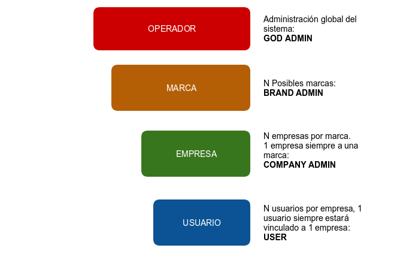
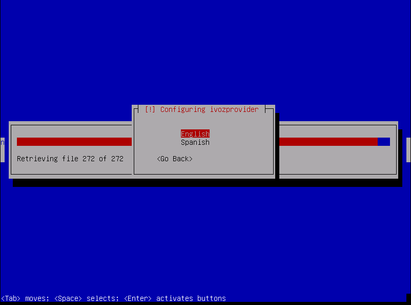
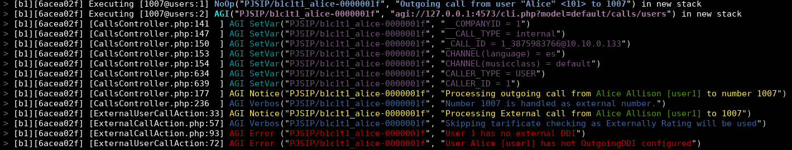

Documentación Oficial de IvozProvider¶
Introducción a IvozProvider¶
Las siguientes secciones servirán como introducción general a IvozProvider:
Acerca de esta documentación¶
Esta documentación describe el proceso de instalación y uso de IvozProvider, la plataforma de telefonía multiinquilino para proveedores desarrollada por Irontec.
Este debería ser el punto de partida para cualquier persona interesada en esta solución, tanto desde el punto de vista técnico como del usuario y está dividido en múltiples secciones desde la información y configuración básica de la infraestructura hasta la configuración del usuario final.
Obteniendo ayuda¶
IvozProvider es un proyecto vivo y altamente desarrollado. Hay múltiples canales para obtener información o reportar errores.
En orden de preferencia:
- GitHub: https://github.com/irontec/ivozprovider
Canal IRC #ivozprovider en irc.libera.chat
correo electrónico: vozip+ivozprovider@irontec.com
- Twitter: @irontec
No dude en contactarnos para cualquier tipo de comentario :)
¿Qué es IvozProvider?¶
IvozProvider es una solución de telefonía IP multinivel orientada al proveedor expuesta a la red pública.
Telefonía IP¶
IvozProvider soporta sistemas de telefonía que utilizan el Protocolo de Inicio de Sesión, SIP, descrito en el RFC 3261 y cualquier RFC relacionado independiente de los fabricantes.
Esto permite total libertad para elegir softphones, hardphones y el resto de elementos que interactúan con IvozProvider, sin ningún tipo de vinculación con un fabricante.
En este momento, IvozProvider soporta los siguientes protocolos de transporte para SIP:
- UDP
- TCP
- TLS
- Websockets
Este último protocolo de transporte descrito en el RFC 7118 soporta softphones integrados en la web, utilizando el estándar WebRTC que permite a los navegadores establecer conexiones peer-to-peer en tiempo real.
La lista de códecs de audio soportados es:
- PCMA (alaw)
- PCMU (ulaw)
- GSM
- SpeeX
- G.722
- G.726
G.729 (se requiere instalación manual)
- iLBC
- OPUS
Multinivel¶
El diseño del portal web de IvozProvider permite múltiples actores dentro de la misma infraestructura:
En la sección Roles de la plataforma, se describen en profundidad los diferentes roles, pero para resumir:
God Admin: El administrador y mantenedor de la solución. Proporciona acceso a múltiples operadores de marca.
Brand Operator: Responsable de configurar el enrutamiento de operadores, la facturación y la emisión de facturas a múltiples clientes.
Client Operator: Responsable de su propia configuración y de gestionar los usuarios finales de la plataforma.
Usuarios: El último eslabón de la cadena, tiene credenciales SIP y puede acceder a su propio portal para configuraciones personalizadas. Este nivel sólo está disponible para tipos de clientes vPBX.
Cada uno de estos roles tiene su propio portal que les permite cumplir con sus tareas. Cada portal puede ser personalizado de las siguientes maneras:
Temas y skins para colores corporativos.
Logos de clientes.
URLs personalizadas con el dominio de la Marca o del Cliente.
Orientado al proveedor¶
IvozProvider es una solución de telefonía diseñada con la escalabilidad horizontal en mente. Esto permite manejar una gran cantidad de tráfico y usuarios simplemente aumentando las máquinas y los recursos de las mismas.
Estas son las ideas principales que hacen que este producto esté orientado al proveedor:
A pesar de que todos los perfiles de máquina pueden ejecutarse en el mismo host, lo que facilita las pruebas iniciales, cada perfil de IvozProvider puede separarse del resto para ejecutarse en su propia máquina.
Una instalación distribuida permite distribuir la cantidad correcta de recursos a cada tarea, pero también:
Distribución geográfica de elementos para garantizar alta disponibilidad en caso de fallo del CPD.
Configuración de elementos clave cerca de los usuarios finales, para minimizar las latencias de comunicación.
Escalabilidad horizontal de perfiles clave para manejar cientos de miles de llamadas concurrentes.
Los elementos que consumen recursos y que limitan el servicio de las soluciones VoIP suelen ser:
Gestión de audio de llamadas ya establecidas.
Gestión de la configuración para cada administrador de cliente (IVRs, salas de conferencias, filtros de llamadas externas, etc.)
Bases de datos de configuración y registros.
IvozProvider fue diseñado siempre teniendo en cuenta la escalabilidad horizontal de cada uno de sus elementos, por lo que puede manejar miles de llamadas concurrentes y lo que es más importante, adaptar los recursos de la plataforma a la calidad de servicio esperada:
Los servidores de Media-relay manejan los marcos de audio para las llamadas ya establecidas:
Puede usar tantos media-relays como necesite.
Puede unir media-relays en grupos y obligar a algunos clientes a usar un grupo si lo desea.
Puede configurar media-relays cerca de los usuarios finales, para minimizar las latencias de red en las llamadas.
Los servidores de aplicaciones son los encargados de procesar la lógica configurada:
Escalan horizontalmente: se pueden instalar nuevos servidores de aplicaciones y agregarlos al grupo si lo considera necesario.
Cada llamada es manejada por el servidor de aplicaciones menos ocupado
Por defecto, no hay asignación estática * entre Clientes y Servidores de Aplicaciones. De esta manera, la falla de cualquier Servidor de Aplicaciones no es crítica: la plataforma ignorará el Servidor de Aplicaciones defectuoso mientras distribuye las llamadas.
Expuesto a la red pública¶
Como se muestra en el proceso de instalación, IvozProvider está diseñado para servir a los usuarios directamente desde Internet. Aunque se puede utilizar en entornos locales, IvozProvider está diseñado para utilizar direcciones IP públicas para sus servicios, eliminando la necesidad de túneles VPN o IPSec que conecten la infraestructura con los usuarios finales.
Aspectos destacados:
Solo los servicios requeridos estarán expuestos a Internet.
El acceso desde orígenes no confiables puede ser filtrado por el firewall integrado
El acceso desde direcciones IP o redes puede ser filtrado para evitar cualquier tipo de phishing.
También hay un mecanismo anti-flood para evitar ataques de Denegación de Servicio de corta duración.
Cada cliente puede tener un número limitado de llamadas concurrentes.
IvozProvider soporta la conexión desde terminales detrás de NAT.
IvozProvider realiza un seguimiento de esas ventanas NAT y las mantiene activas con mecanismos de nat-piercing.
| [*] | El administrador global puede asignar Servidores de Aplicaciones a algunos tipos de clientes, pero esta característica está más diseñada como una medida temporal de depuración y solución de problemas. |
¿Qué hay dentro de IvozProvider?¶
IvozProvider utiliza proyectos de Software Libre bien conocidos y estables para cumplir con las diferentes tareas requeridas de la plataforma.
Nada mejor que una imagen para mostrar todo el software que está integrado en IvozProvider:

Nota
No podemos enfatizar lo suficiente nuestra gratitud a los desarrolladores y comunidades de estos proyectos.
La tarea de cada uno de estos programas se detallará en profundidad en el bloque Arquitectura general de la plataforma.
¿Quién debería usar IvozProvider?¶
IvozProvider es una buena opción para aquellos interesados en tener una plataforma de telefonía que pueda proporcionar servicio a miles de llamadas concurrentes.
Las mayores fortalezas de IvozProvider pueden ayudar a decidir si la solución cumple con sus necesidades:
- VoIP: SIP
Multinivel, multiinquilino
Escalabilidad horizontal
PseudoSBC: abierto a Internet
Motores de facturación e invoicing integrados
Características de PBX
El proceso de instalación es tan simple, que la mejor manera de probar si IvozProvider cumple con sus necesidades es probarlo!
Arquitectura general de la plataforma¶
Diagrama general¶
El siguiente diagrama muestra la arquitectura global de la solución IvozProvider, con todos sus componentes:

Este es un diagrama más conceptual:

Flujo de señalización SIP¶
El primer diagrama muestra el tráfico de señalización SIP involucrado en el establecimiento, modificación y terminación de sesiones siguiendo el SIP RFC 3261 y cualquier RFC relacionado.
Estas son las entidades SIP externas involucradas:
UACs: teléfonos fijos de usuarios, softphones, dispositivos compatibles con SIP.
Operadores SIP/Proveedores DDI: operadores utilizados para interconectar IvozProvider con redes SIP externas (y, probablemente, con PSTN).
Todo el tráfico SIP (en cualquiera de los transportes soportados: TCP, UDP, TLS, WSS) que envían/reciben es hacia/desde estas dos entidades SIP internas de IvozProvider:
- De hecho, los UACs de usuarios solo hablan con el Proxy SIP de Usuarios y los ‘Operadores SIP’ y ‘Proveedores DDI’.
Los Proveedores solo hablan con el Proxy SIP de Trunks.
Dentro de IvozProvider, estos dos proxies pueden hablar con Servidores de Aplicaciones ejecutando Asterisk para algunos tipos de clientes, pero no se permite que ningún elemento externo hable directamente con los Servidores de Aplicaciones.
Flujo de audio RTP¶
Las sesiones iniciadas por el protocolo de señalización SIP implican flujos de medios compartidos por las entidades involucradas.
Estos flujos de medios utilizan RTP para enviar y recibir los medios en sí, generalmente utilizando UDP como protocolo de transporte.
Entidades externas involucradas en sesiones RTP se pueden dividir en:
Puntos finales de clientes.
Operadores/Proveedores DDI.
Ambas entidades intercambian RTP con la misma entidad de IvozProvider: media-relays.
IvozProvider implementa media-relays utilizando RTPengine.
Similar al SIP, estos media-relays intercambian RTP cuando es necesario con Servidores de Aplicaciones, pero las entidades externas nunca hablan directamente con ellos.
Tráfico HTTPS¶
HTTPS es el tercer tipo de tráfico intercambiado entre IvozProvider y el mundo exterior.
El tráfico HTTPS se utiliza para:
Provisionamiento de terminales: varios teléfonos fijos solicitan su configuración cuando se encienden y estos archivos de configuración se pueden servir a través de HTTPS.
Portales web: IvozProvider tiene portales web de 4 niveles para todos los roles de la plataforma.
Ambos tipos de tráfico son manejados por la entidad Portales web de IvozProvider.
Elementos adicionales¶
IvozProvider tiene múltiples elementos que no están expuestos al mundo exterior pero desempeñan una tarea crucial.
El perfil más notable es el perfil de base de datos que recopila toda la información de la plataforma y la comparte entre la mayoría del software empaquetado. IvozProvider utiliza el motor de base de datos MySQL para esta tarea.
Otra tarea notable es el manejador de tareas asincrónicas encargado de codificar grabaciones, generar facturas, recargar servicios, importar datos, etc.
Elementos auxiliares¶
El perfil Aux ejecuta software que, aunque no es vital para la realización de llamadas, hace la vida del mantenedor de IvozProvider mucho más fácil.
De hecho, sin ellos, la depuración de problemas sería mucho más difícil y la calidad del servicio prestado se vería afectada.
Aunque IvozProvider no incluye ninguna de las herramientas mencionadas aquí, las consideramos cruciales para tratar con entornos de producción.
Aquí enumeramos las herramientas configuradas en todas las instalaciones de IvozProvider en producción mantenidas por Irontec:
Captura SIP de Homer: Este increíble software nos permite capturar todo el tráfico SIP para su posterior análisis, para obtener estadísticas, medir la calidad de las llamadas, etc. Visita el sitio web de SIP Capture para más información.
Visor de logs de Kibana: Mostrando logs recopilados por los restantes componentes de la pila ELK.
Visor de métricas de Chronograf: Mostrando métricas recopiladas por los restantes componentes de la pila TICK.
Instalación inicial¶
Tipos de instalación¶
Instalación distribuida¶
El software de IvozProvider está diseñado para ejecutarse distribuido entre múltiples sistemas en lo que llamamos perfiles:
Cada perfil se encarga de realizar una de las funciones de la plataforma:
Almacenamiento de datos
Proxy SIP
Servidor de aplicaciones
Portal web
Para cada uno de estos perfiles, hay un paquete virtual que instalará todas las dependencias requeridas (ver Instalación del paquete de perfil).
Puede instalar tantas instancias como desee para cada perfil, pero tenga en cuenta que, mientras que algunos de ellos están diseñados para escalar horizontalmente (por ejemplo: asterisk o media-relays), otros requerirán software adicional para que los sistemas que tienen el mismo perfil estén sincronizados (por ejemplo: replicación de bases de datos o balanceo de solicitudes http).
Instalación StandAlone¶
Si desea una instalación pequeña para realizar un par de pruebas o proporcionar un servicio básico, hemos diseñado toda esta configuración para que puedan funcionar en una sola máquina.
Hemos llamado a este tipo de instalaciones StandAlone y también hemos creado Imagen ISO CD automática para que pueda instalar en un par de minutos.
Requisitos mínimos¶
Requisitos del sistema¶
IvozProvider está diseñado para ser instalado utilizando el sistema de paquetes APT de Debian GNU/Linux.
Importante
Se recomienda instalar IvozProvider en un servidor dedicado para la plataforma. Muchos de los programas instalados pueden no funcionar correctamente con otros servicios preinstalados (como servidores MySQL o DNS).
Para una instalación StandAlone, recomendamos al menos:
4 CPUs (x86_64 o i386)
4 Gb de memoria
30GB de HDD
1/2 direcciones IP públicas (leer nota detrás)
Nota
Es posible que tanto KamUsers como KamTrunks compartan una única dirección IP pública. Si es así, los puertos de KamTrunks se cambiarán de 5060 (TCP/UDP) a 7060 (TCP/UDP) y de 5061 (TCP) a 7061 (TCP).
Si no está utilizando una Imagen ISO CD automática, también necesitará:
Instalación base de Debian Bookworm 12.0
Acceso a Internet
Instalación de paquetes Debian¶
IvozProvider está diseñado para ser instalado y actualizado utilizando paquetes Debian. Más exactamente, la versión actual está lista para ser instalada en Debian Bookworm 12.
Se recomienda utilizar una de las guías de instalación oficiales para instalar el sistema base mínimo. El resto de las dependencias requeridas se instalarán automáticamente con los metapaquetes de IvozProvider.
No importa si está instalando una Instalación StandAlone o una Instalación distribuida, es necesario configurar los repositorios debian de Irontec.
Configuración del repositorio APT¶
cd /etc/apt/sources.list.d
echo deb http://packages.irontec.com/debian tempest main extra > ivozprovider.list
Opcionalmente, podemos agregar la clave del repositorio para verificar los paquetes firmados:
wget http://packages.irontec.com/public.key -q -O /etc/apt/trusted.gpg.d/irontec-debian-repository.asc
Instalación del paquete de perfil¶
Una vez configurados los repositorios, será necesario seleccionar el metapaquete adecuado según el tipo de instalación.
- Para una Instalación StandAlone:
- ivozprovider
apt-get update
apt-get install ivozprovider
Para una Instalación distribuida: uno de los paquetes de perfil dependiendo del rol que desempeñará la máquina.
- ivozprovider-profile-data
- ivozprovider-profile-proxy
- ivozprovider-profile-portal
- ivozprovider-profile-as
Atención
La instalación distribuida requiere un par de configuraciones manuales basadas en los roles que están desempeñando. Tenga en cuenta que el proceso de instalación distribuida aún no está documentado. Puede consultar la solicitud de documentación para obtener más información.
Terminar la instalación¶
La instalación StandAlone tiene un menú que se puede usar para configurar los servicios básicos utilizados en IvozProvider. La mayoría de los servicios se configuran automáticamente para funcionar en la misma máquina con los valores predeterminados.
Este menú permite:
Configurar dirección(es) IP para proxies SIP
Idioma predeterminado de la plataforma
Contraseña de la base de datos MySQL del administrador
Es posible cambiar cualquiera de estos valores en cualquier momento ejecutando:
dpkg-reconfigure ivozprovider
Importante
Cualquiera de las direcciones IP públicas configuradas durante la instalación funcionará para acceder al portal web. Las credenciales predeterminadas son admin / changeme.
Importante
Debe reiniciar su máquina después de una instalación de paquetes para iniciar todos los servicios requeridos.
Imagen ISO CD automática¶
Puede descargar una de las imágenes ISO CD automáticas de IvozProvider (generadas usando simplecdd) en versiones estables o nocturnas:
Importante
IMPORTANTE: ¡Los CDs de instalación automática formatearán el disco de la máquina de destino!
Configure la máquina de destino para que arranque desde el CD. Mostrará el menú de instalación de Debian GNU/Linux.
Nota
Puede usar la instalación gráfica si lo prefiere, pero las siguientes capturas de pantalla muestran la instalación estándar.

Elija el idioma de instalación:

Elija la ubicación:

Establecer contraseña de root

Elija la configuración de fecha y hora:

Nota
En este punto, se realizará una configuración de red genérica y particionamiento de disco, y también una instalación del sistema base.
Configurar la contraseña de root del servidor MySQL

Importante
La contraseña de MySQL debe establecerse en esta pantalla y nuevamente en el siguiente menú de configuración de Ivozprovider. Si deja este campo vacío, se utilizará la contraseña predeterminada (ver más abajo).
Configurar IvozProvider:

Como se menciona en Requisitos mínimos, se requiere al menos una dirección IP pública para los proxies SIP de Usuario y Trunk. Recuerde que si usa solo una, KamTrunks utilizará diferentes puertos SIP para evitar colisiones.
Puede establecer sus direcciones ahora y configurar las interfaces correctamente cuando el sistema esté completamente instalado. Este menú puede mostrarse en cualquier momento después de la instalación.

También puede configurar la contraseña de root de MySQL predeterminada ahora.
Nota
Si no configura la contraseña de MySQL, se utilizará la contraseña predeterminada (changeme). Aún puede cambiarla más tarde.

Y el idioma predeterminado para los portales:
Nota
No es necesario configurar todos los ajustes durante la instalación inicial. En caso de que algún ajuste haya quedado sin configurar, se mostrará un cuadro de diálogo de advertencia.
Por último, seleccione dónde se instalará el cargador de arranque GRUB.

¡Después del reinicio, estará listo para acceder utilizando los portales web!
Importante
Cualquiera de las direcciones IP públicas configuradas durante la instalación funcionará para acceder al portal web. Las credenciales predeterminadas son admin / changeme.
Componentes adicionales¶
G.729¶
Atención
El códec G.729 se ofrece por defecto para llamadas externas salientes. Si no lo instala utilizando las siguientes instrucciones, debe ser eliminado del archivo de configuración pjsip.conf. De lo contrario, los servidores de aplicaciones ofrecerán un códec no disponible.
Importante
En algunos países, es posible que deba pagar tarifas de regalías para utilizar el códec G.729 a sus titulares de patentes. No somos asesores legales en cuanto a patentes mundiales activas o retiradas.
Puede usar G.729 con IvozProvider, pero la instalación debe hacerse manualmente. El códec G.729 está optimizado para cada tipo de CPU y versión de asterisk, por lo que cada instalación puede requerir un módulo de códec diferente.
Puede descargar el códec desde aquí en la sección Asterisk 18.
Una vez descargado, mueva el archivo .so a /usr/lib/asterisk/modules/ y renómbrelo a codec_g729.so
Puede verificar que el códec es válido cargando el módulo en asterisk e imprimiendo las traducciones de códecs disponibles usando:
asterisk -rx 'module load codec_g729.so'
asterisk -rx 'core show translation' | grep 729
Roles de la plataforma¶
IvozProvider es una solución de proveedor de roles multinivel.
Las siguientes imágenes muestran los diferentes niveles disponibles y la relación entre ellos:

Esta sección explicará cada uno de los roles disponibles, describiendo sus responsabilidades y tareas más importantes.
Rol de administrador global¶
El rol de administrador global (operador en la imagen) generalmente lo realiza el responsable de la instalación.
Todas las opciones y características de la plataforma son visibles para este rol y generalmente está a cargo de su mantenimiento.
Su tarea más importante es crear Marcas y configurarlas para que tengan la suficiente autonomía para usar correctamente la plataforma:
Configurar su acceso web.
Configurar la apariencia del portal de su marca: temas, colores, etc.
Aparte de su tarea principal, su visibilidad global y acceso total los hace responsables de:
Monitorear la plataforma para que siempre esté en funcionamiento
Analizar los registros de la plataforma para rastrear posibles errores.
Pulir los mecanismos de seguridad para evitar ataques externos.
Obtener estadísticas globales de la calidad del audio de las llamadas.
Aumentar los recursos disponibles de la plataforma según sea necesario:
Aumentar los recursos disponibles en una instalación independiente
Migrar, cuando sea necesario, a una instalación distribuida con múltiples AS, relés de medios, etc.
En resumen, este rol es el único que no tiene límites dentro de la plataforma, por eso Dios es un término utilizado en múltiples lugares a lo largo de esta documentación.
Importante
Este rol es responsable de mantener la plataforma*, configurándola para el comportamiento correcto. Este rol no tiene ningún tipo de límite y otorga acceso a los operadores de marca.
Rol de administrador de marca¶
El operador de marca puede acceder a un portal con menos secciones disponibles en comparación con el rol anterior. El administrador general (Dios) es el encargado de proporcionar una URL con credenciales para su portal de marca.
La tarea más importante para el operador de marca es crear y configurar clientes para que puedan trabajar correctamente.
Debido a que los operadores de marca también son responsables de facturar a sus clientes y asegurarse de que las llamadas externas estén correctamente configuradas, también deben gestionar:
Contratos de interconexión con otros proveedores de IP para la interconexión PSTN.
Incluir toda la información requerida del cliente para el proceso de facturación.
Planes de precios que ofrecerán a sus clientes, que determinarán cuánto pagarán por cada llamada.
Configurar las rutas para cada tipo de llamada saliente según su destino final
Crear las facturas para cada período de facturación y enviarlas a sus clientes.
Como puede ver, la tarea del operador de marca tiene poco en común con el operador global, pero su importancia es vital para que los usuarios finales puedan utilizar todas las características incluidas en IvozProvider.
Importante
En resumen, los operadores de marca otorgan acceso a los administradores de sus clientes y configuran la plataforma para enrutar y tarificar sus llamadas.
Rol de administrador de cliente¶
El administrador del cliente tiene acceso al portal proporcionado por el operador de marca.
Desde su punto de vista, tiene una pbx virtual en la nube que debe configurar para sus usuarios.
Para lograr eso, se requiere:
Configurar terminales, extensiones y usuarios.
Configurar el proceso de entrada DDI con la lógica adecuada:
Directamente a un usuario
- IVRs
Grupos de búsqueda
- Faxes
Dar acceso a los usuarios finales a su portal web, para que puedan configurar sus opciones de perfil:
Desvío de llamadas
No molestar
Llamada en espera
Importante
En resumen, los administradores de clientes son responsables de configurar el sistema de telefonía y utilizar todas las características disponibles en IvozProvider.
Rol de usuario final¶
El usuario final tiene dos tipos diferentes de credenciales, ambas suministradas por su administrador de cliente:
Credenciales de acceso al portal de usuario
Credenciales SIP utilizadas para registrar terminales en IvozProvider
A través del portal de usuario, puede navegar por su registro de llamadas y configurar:
Desvío de llamadas
No molestar
Llamada en espera
Datos mostrados al llamar
Configuración geográfica
Por otro lado, las credenciales SIP permiten a los usuarios configurar sus terminales para realizar y recibir llamadas.
Nota
Las mismas credenciales SIP pueden ser utilizadas en múltiples dispositivos al mismo tiempo, generando lo que se conoce como parallel-forking: siempre que se realice una llamada a un usuario, todos los dispositivos activos sonarán para que el usuario pueda responder la llamada desde cualquiera de ellos.
Realizando llamadas internas¶
El objetivo de este bloque será configurar IvozProvider para realizar llamadas internas, utilizando como punto de partida la instalación base descrita en el paso anterior.
Para lograr realizar una llamada entre Alice y Bob, debemos cumplir con algunas tareas en los tres niveles de configuración descritos en Roles de la plataforma.
Por eso hemos ordenado el índice en estos 3 bloques:
Configuración Global¶
Importante
Cualquiera de las 2 direcciones IP públicas configuradas durante la instalación funcionará para acceder al portal web. Las credenciales predeterminadas son admin / changeme.
En esta sección se hará referencia a las opciones de configuración del administrador global, disponibles en el menú (Gestión principal) del portal web (solo visible para los administradores God):
Emular la marca Demo¶
Como se mencionó anteriormente, la instalación inicial tendrá una marca ya creada llamada DemoBrand, que se utilizará para nuestro objetivo: tener 2 teléfonos registrados que puedan llamarse entre sí.
Antes de pasar a la siguiente sección, es bastante importante entender cómo funciona la emulación.
Como operador global, tienes acceso al menú Configuración Global solo visible para los administradores God.
Aparte de ese menú, también tendrás acceso a los bloques de Configuración de Marca y Configuración de Cliente.
Los dos últimos bloques tienen un botón rojo en el lado derecho.
Al presionarlo, se mostrará un popup que lista todas las marcas / clientes existentes.
Después de seleccionar la marca DemoBrand, el icono cambiará.
La esquina superior derecha del portal también mostrará la marca que se está emulando.
Qué significa la emulación¶
Básicamente, que todo en el menú ‘Configuración de Marca’ será relativo a la marca elegida y es exactamente las mismas entradas de menú que el operador de la marca verá usando su portal de marca.
Truco
Ok, ok, tal vez exactamente no sea totalmente preciso. El operador global puede ver algunos campos en algunas pantallas que otros administradores no pueden (por ejemplo, en la pantalla de edición del Cliente, campos como ‘Relés de medios’ o ‘Servidor de aplicaciones’ solo son configurables por el operador global.
Configuración de Marca¶
Necesitamos que la DemoBrand predeterminada tenga un cliente con al menos 2 usuarios. Para lograr esto, necesitaremos un poco de configuración en esta sección.
De hecho, si revisamos PBXs Virtuales en el menú de la marca, descubriremos que ya existe una DemoCompany que podemos usar para cumplir nuestro objetivo deseado :)
Solo se requiere una cosa para configurar este cliente, presionar la opción Editar cliente.
Dominio SIP del Cliente¶
Como se mencionó en la sección anterior, es requerido que cada uno de los clientes vPBX tenga un dominio público que resuelva a la dirección IP configurada para Proxies de Usuarios.
Nota
El registro DNS puede ser de tipo A (compatible con todos los teléfonos fijos/softphones) o incluso NAPTR+SRV.
Una vez que el dominio ha sido configurado (por medios que están fuera del alcance de este documento), será suficiente escribirlo en nuestra configuración del cliente campo Dominio SIP.
Una vez que el cliente ha sido guardado, el dominio también se mostrará en la lista en la columna Dominio SIP.
Atención
Es importante entender este bloque. A menos que tengamos un solo cliente registrado, sin un dominio DNS apuntando a nuestra dirección IP del proxy de usuarios, todo fallará.
Peligro
¿Hemos repetido lo suficiente que sin un DNS configurado correctamente apuntando a la dirección IP del proxy de Usuarios nada funcionará?
No tengo tiempo para un registro DNS¶
Todo lo que hemos dicho es cierto: a medida que creamos nuevas marcas y las marcas crean nuevos clientes, cada uno de ellos necesitará un registro DNS.
Pero el primer cliente de la plataforma es bastante especial y puede tomar la dirección IP del proxy para usarla como un dominio.
Aunque no es un dominio, pero al ser usado como si lo fuera, se mostrará en la sección Dominios SIP.
Truco
Es importante entender que este truco solo es válido para el primer cliente de la plataforma ;)
Emular cliente Demo¶
El proceso de emulación del cliente es el mismo que el de la emulación de la marca, con la diferencia de que filtra el bloque ‘Configuración del Cliente’ en lugar de ‘Configuración de Marca’.
Una vez que el cliente ha sido emulado, la esquina superior derecha del portal mostrará que estamos en el camino correcto :)
Configuración del Cliente¶
Estamos cerca de hacer nuestra primera llamada en nuestro recién instalado IvozProvider, solo hay 6 pasos para configurar en nuestra pbx virtual DemoClient.
2 terminales
2 extensiones
2 usuarios
Creando Terminales¶
Ve a la sección de terminales y... ¡voilà! Ya tenemos 2 terminales creados.
Creando Extensiones¶
Luego vamos a extensiones, solo para verificar que ya tenemos 2 extensiones creadas para nosotros.
Nada más que hacer en esta sección, ¡vamos a la siguiente!
Creando Usuarios¶
Como se esperaba, también tenemos 2 usuarios creados con extensiones y terminales asignados previamente.
En este punto, tenemos todo listo para hacer una llamada entre estos dos usuarios: Alice y Bob.
Configuración del Terminal SIP¶
Lo último que necesitamos son 2 terminales SIP (teléfonos fijos, softphones o incluso aplicaciones móviles) y configurarlos de la siguiente manera:
ALICE
Usuario: alice
Contraseña: alice
Dominio: users.democlient.com (o la IP si estamos usando el truco de DNS)
BOB
Usuario: bob
Contraseña: bob
Dominio: users.democlient.com (o la IP si estamos usando el truco de DNS)
Truco
A veces el usuario y el dominio se configuran en una sola opción. En este caso deberíamos ingresar alice@users.democlient.com y bob@users.democlient.com (o la IP si estamos usando el truco de DNS)
Después de configurar los terminales, Alice debería poder llamar a Bob solo marcando 102 en su terminal.
Recibiendo llamadas externas¶
El objetivo de este bloque será configurar IvozProvider para recibir llamadas externas entrantes.
Para lograr esto, se seguirán estos pasos:
Configuración de transformaciones¶
IvozProvider está diseñado para proporcionar servicio en cualquier lugar del planeta, no solo en el país original donde se instala la plataforma.
Un concepto muy importante para lograr este objetivo son las transformaciones numéricas, que adaptan los diferentes sistemas de formato de números de los países del mundo definidos en E.164 a un formato neutral.
La sección que permite al operador de la marca configurar todas las transformaciones numéricas es Configuración de Marca / Proveedores / Transformaciones numéricas.
Puede encontrar más información sobre transformaciones en la sección Transformaciones numéricas.
Truco
Ya tenemos un conjunto pre-creado para la mayoría de los países del mundo, por lo que con suerte no se necesita hacer nada aquí.
Configuración de peering¶
Entendemos un contrato de peering como el acuerdo entre un Operador de Marca y un Proveedor de VoIP para realizar y recibir llamadas.
Dividimos los peerings en dos tipos:
Carriers para llamadas salientes (ver Carriers).
Proveedores de DDI para llamadas entrantes (ver Proveedores DDI).
Para lograr nuestro objetivo, necesitaremos crear un nuevo (y válido) Proveedor de DDI y asignar la transformación numérica de nuestro país. Consulte Proveedores DDI para más información.
Una vez que tenemos un acuerdo con un proveedor de DDI y lo hemos configurado en la sección anterior, solo quedan dos tareas pendientes:
Configurando un DDI externo¶
El operador de la marca, responsable de estos acuerdos de peering con proveedores de VoIP, tiene la tarea de crear los DDIs para cada cliente.
Tenga en cuenta que para acceder a esta sección, el operador de la marca (o dios) debe haber emulado al cliente adecuado y acceder a la sección del menú Configuración del Cliente.
Atención
La sección Configuración del Cliente > DDIs es diferente cuando accede el administrador del cliente que los datos mostrados cuando lo hace un administrador global o de marca. Los administradores de clientes no pueden crear o eliminar DDIs, solo editar los creados por el administrador de marca o dios.
Teniendo en cuenta estos conceptos, creamos un nuevo DDI y llenamos los campos requeridos.
Para información detallada sobre los campos de configuración, consulte la sección DDIs.
Configurar rutas entrantes
En la sección anterior, hemos creado el DDI y lo configuramos (apuntándolo al usuario Alice), pero el procedimiento más común es que el operador de la marca solo cree el DDI mientras que el administrador del cliente, usando la misma sección, lo configura eligiendo la ruta correcta (usuario, grupo de búsqueda, etc.), filtros de calendarios, etc.
Nota
En este punto, llamar al número del DDI configurado hará que suene el teléfono de Alice.
Realizando llamadas externas¶
El objetivo de esta sección es configurar IvozProvider para realizar llamadas externas salientes, tomando la configuración de la sección anterior como punto de partida.
Seguiremos estos pasos:
Crear un nuevo carrier¶
En este punto de la configuración, tenemos que configurar IvozProvider para recibir llamadas usando un Proveedor DDI, pero no hemos configurado un Carrier para realizar llamadas externas.
Truco
Los proveedores de VoIP generalmente proporcionarán ambos servicios: realizar y recibir llamadas.
Configure un Carrier de manera similar a como configuramos el Proveedor DDI (instrucciones adicionales aquí), asignándole el mismo conjunto de transformaciones numéricas.
¿Dónde llamo?¶
En este punto de la configuración, tenemos que configurar IvozProvider para usar el Carrier ya configurado para realizar las llamadas externas que estamos haciendo.
Para lograr esto, en primer lugar, necesitamos que los números externos marcados caigan en un patrón de destino existente:
Truco
Para lograr nuestro objetivo de hacer una llamada externa a un número español, no tuvimos que modificar el contenido inicial de estas dos secciones ya que el patrón de España ya existe :)
Configuración de enrutamiento saliente¶
Ya tenemos nuestra llamada de prueba categorizada como una llamada dentro del patrón de enrutamiento ‘España’. Además, también tenemos un grupo de patrones de enrutamiento que incluye ‘España’, llamado ‘Europa’.
Ahora tenemos que decirle a IvozProvider que las llamadas a ‘España’ o ‘Europa’ deben establecerse a través de nuestro nuevo Carrier.
Para hacer esta asignación, usamos la sección Configuración de Marca > Enrutamiento > Enrutamientos salientes:
Cliente: “Aplicar a todos los clientes” (o solo democompany).
Tipo: patrón.
Patrón de destino: España.
Tipo de ruta: estática.
Carriers: nuestro nuevo carrier.
Prioridad: 1
Prioridad: 1
Para más información sobre enrutamiento y balanceo de carga, consulte la sección Enrutamientos Salientes.
Configuración de DDI saliente¶
Antes de realizar nuestra primera llamada saliente, sería deseable elegir el número que el destinatario verá cuando suene el teléfono, para que pueda devolver la llamada fácilmente.
Para lograr este objetivo, tenemos que configurar nuestro DDI como el DDI saliente de Alice, porque ella será la elegida para realizar nuestra primera llamada saliente.
Podemos configurar esto editando a Alice en Configuración del Cliente > Usuarios. Si este cambio lo realiza el operador de marca o el operador global, debe emular al cliente correspondiente previamente.
Truco
Podríamos haber configurado el mismo DDI como DDI Saliente Predeterminado a nivel de cliente, editando el cliente democompany.
Error
Las llamadas de usuarios sin un DDI saliente serán rechazadas por IvozProvider.
En este punto, estamos deseando hacer nuestra primera llamada saliente con nuestro nuevo IvozProvider, puede que incluso hayamos intentado llamar con la configuración actual pero...
Sin plan de tarifas, no hay llamada¶
Tal como advertimos cuando describimos las responsabilidades del operador de marca, el operador de marca es responsable de hacer toda la configuración necesaria para que IvozProvider pueda facturar todas las llamadas externas.
Nota
Facturar una llamada es la acción de asignar un precio a una llamada que implica un costo.
IvozProvider verifica en vivo que una llamada pueda ser facturada cuando se establece para evitar realizar llamadas que impliquen un costo pero que no serán facturadas porque el Operador de Marca, debido a un error, no ha asignado un precio.
Error
Si una llamada no puede ser facturada, IvozProvider no permitirá su establecimiento.
Creando un plan de tarifas¶
La sección Configuración de Marca > Facturación > Destino está vacía por defecto, a diferencia de la sección de patrones de enrutamiento, que tiene los 254 países del mundo. La razón es que una tarifa de destino generalmente implicará muchos patrones por país (redes GSM, números especiales, números móviles, líneas fijas, etc.).
En la mayoría de los casos, los datos de esta sección se importarán desde un CSV proporcionado por su proveedor de VoIP, pero para nuestra prueba lo crearemos manualmente:
Cree un destino con ‘+34’ para España.
Cree una tarifa de destino e inserte un precio para el destino España.
Cree un plan de tarifas que incluya esa tarifa de destino.
¡Configuración de salida completa!¶
¡Eso es todo!
En este punto, Alice debería poder realizar llamadas salientes a destinos españoles y estas llamadas deberían ser enrutadas y facturadas adecuadamente.
Configuración de la Plataforma¶
Esta sección solo se muestra al administrador principal y permite modificar configuraciones globales:
Marcas¶
El operador principal es responsable de crear y gestionar las marcas de la plataforma a través de esta sección.
Estos son los campos que se muestran cuando se crea una nueva marca:
- Nombre
Establece el nombre para esta marca.
- NIF
Número utilizado en las facturas de esta marca.
- Logo
Utilizado como logo predeterminado en facturas y en portales (si no especifican otro logo).
- Datos Facturación
Datos incluidos en las facturas creadas por esta marca.
- Dominio SIP
Introducido en 1.4. Dominio que apunta al proxy SIP de Usuarios utilizado por todas las Cuentas Retail y Dispositivos Residenciales de esta marca.
- Grabaciones
Configura un límite para el tamaño de las grabaciones de esta marca. Se envía una notificación a la dirección configurada cuando se alcanza el 80% y las grabaciones más antiguas se rotan cuando se alcanza el tamaño configurado.
- Funcionalidades
Introducido en 1.3, permite al operador principal elegir las funcionalidades de la marca creada. Una configuración equivalente está disponible en Clientes, para elegir entre las que el operador principal dio a su Marca. Las secciones relacionadas se ocultan en consecuencia.
- Límite llamadas
Limita tanto las llamadas generadas por el usuario como las recibidas externas a este valor (0 para ilimitado).
- Localización
Define la Zona Horaria, Idioma y Divisa predeterminados para los clientes de esta marca.
- Notificaciones
Configure las Plantillas de Notificación de correo electrónico para usar en esta marca. Los clientes configurados para usar notificaciones genéricas usarán las notificaciones configuradas de la marca. Si la marca no tiene notificaciones configuradas, se usarán las Plantillas de Notificación por Defecto.
- ProxyTrunks
Seleccione qué direcciones de ProxyTrunks pueden ser utilizadas por esta marca. Lea Proxies de Salida para más detalles. No es posible desasignar una dirección utilizada en cualquier operador o proveedor de DDI.
Consejo
Algunas funcionalidades están relacionadas con la marca y no pueden ser asignadas a los clientes. Otras también están relacionadas con los clientes y permiten al operador de la marca asignarlas a sus clientes.
Advertencia
Deshabilitar la facturación oculta todas las secciones relacionadas y asume que un elemento externo establecerá un precio para las llamadas (se necesita un módulo de tarificación externo, ¡pregunte por él!).
Nota
Deshabilitar las facturas oculta las secciones relacionadas, asumiendo que utilizará una herramienta externa para generarlas.
Nota
El dominio SIP solo es visible para las Marcas con funcionalidades Retail o Residenciales habilitadas.
Operadores de Marca¶
La subsección Listado de operadores de marca permite añadir/editar/eliminar credenciales para el acceso al portal de la marca.
Lea ACLs para más información sobre administradores de marca restringidos.
Portales de Marca¶
La subsección Listado de portales de marca permite gestionar las URLs para acceder a los diferentes portales web disponibles para una marca dada.
Vea Portales de Clientes para más información.
Advertencia
Las URLs se asignan a las marcas. Esto significa que a través de una URL dada se puede adivinar la marca, pero no el cliente. Como resultado, el dominio de colisión de nombres de usuario estará a nivel de marca (no pueden existir dos administradores de clientes con el mismo nombre de usuario dentro de una marca).
Operadores de Plataforma¶
Esta sección enumera las credenciales para iniciar sesión en el portal de administración principal. Puede editar o eliminar credenciales existentes y crear nuevas.
Estos son los campos requeridos de cada entrada:
- Nombre de usuario
Usuario para el proceso de inicio de sesión.
- Contraseña
Contraseña para el proceso de inicio de sesión.
- Zona Horaria
Utilizado para mostrar fechas en Llamadas Externas y secciones similares.
- Restringido
Permite crear credenciales limitadas (lea ACLs para más información).
Los campos restantes no son requeridos ni utilizados en ningún lugar, solo permiten almacenar información adicional de un usuario dado (nombre, apellido y correo electrónico).
IPs bloqueadas por Antiflood¶
Las direcciones enumeradas aquí han sido bloqueadas al menos una vez por el mecanismo de Antiflooding.
Advertencia
Las IPs solo se bloquean durante 5 minutos. Las entradas con Último bloqueo de más de 5 minutos no están actualmente bloqueadas.
Vea Antiflooding SIP para más información.
Fabricantes de Terminales¶
Descripción general¶
IvozProvider soporta la provisión de terminales vía HTTP/HTTPS que cumplen con los siguientes requisitos:
Asumiendo un terminal recién desempaquetado, recién conectado y conectado a la red:
Solicitar dirección IP vía DHCP.
DHCP ha habilitado la opción 66 que apunta al portal de la plataforma
El primer archivo de provisión solicitado es un archivo estático (diferente para cada modelo) con el prefijo de la URL del paso anterior.
El archivo servido puede redefinir la URL para solicitudes adicionales
Cualquier modelo de terminal que pueda adaptarse a esta forma de provisión puede añadirse en la sección Configuración de la Plataforma > Fabricantes de Terminales.
Ejemplo Cisco SPA504G
Cisco SPA504G se enciende y solicita una dirección IP a DHCP
Recibe “http://provision.example.com/provision” como opción 66 de DHCP
Solicitar configuración HTTP desde http://provision.example.com/provision/spa504g.cfg
Todos los 504G solicitan el mismo archivo (spa504.cfg), con el prefijo de la URL dada
Este archivo solo contiene configuraciones básicas para el modelo y la URL para la siguiente solicitud (p.e. https://provision.example.com/provision/$MAC.cfg)
De esta manera, cada terminal (MAC debe ser único) solicita un archivo específico (y diferente) después de que se haya servido el genérico.
Este archivo contendrá la configuración específica para el terminal:
Usuario
Contraseña
Dominio SIP
Nota
El sistema de provisión de IvozProvider, en este momento, solo tiene un objetivo: proporcionar credenciales y configuraciones de idioma para los terminales.
Configuración de modelos soportados¶
IvozProvider utiliza un sistema de plantillas que permite al operador global (God) definir nuevos modelos y configurar qué archivos se servirán.
La sección de ayuda de Fabricantes de Terminales tiene ejemplos para algunos modelos que funcionan (en el momento de escribir esto) con el sistema de provisión de IvozProvider.
Consejo
Estos modelos estarán disponibles después de la instalación inicial, pero debe editarlos y cargar la configuración predeterminada antes de poder usar el sistema de provisión (opción Restaurar plantilla por defecto).
Error
Los cambios en el firmware de los UAC pueden hacer que los ejemplos dados dejen de funcionar. Intentaremos mantener las plantillas actualizadas, pero no podemos garantizar este punto.
Analizando las plantillas sugeridas puede tener una idea básica de la flexibilidad del sistema para configurar cualquier modelo de terminal existente en el mercado y adaptarlos a cambios eventuales en los ejemplos dados.
Aspectos técnicos¶
Imagine un entorno con esta configuración:
URLs de provisión:
Archivo genérico: http://PROV_IP/provision
Archivo específico: https://PROV_IP:PROV_PORT/provision
- TerminalModels.genericUrlPattern: y000000000044.cfg
¿Qué URLs solicitadas serán válidas?
Para el archivo genérico, solo una: http://PROV_IP/provision/y000000000044.cfg
Para el archivo específico, las solicitudes son correctas siempre que se cumplan estas reglas:
Todas las solicitudes HTTP son incorrectas.
Las solicitudes HTTPS al 443 son incorrectas (se debe usar PROV_PORT).
Los subrutas después de la URL de provisión se ignoran, tanto en la solicitud como en specificUrlPattern.
En la solicitud de archivo específico, la extensión debe coincidir siempre que se use la extensión en specificUrlPattern.
En la solicitud de archivo específico, el nombre del archivo debe coincidir exactamente una vez que se reemplace {mac}.
La dirección MAC no distingue entre mayúsculas y minúsculas y puede contener dos puntos o no (‘:’).
Analicemos los ejemplos a continuación para entender mejor estas reglas:
Ejemplo 1 - TerminalModels.specificUrlPattern: {mac}.cfg
Solicitudes correctas:
https://PROV_IP:PROV_PORT/provision/aabbccddeeff.cfg
https://PROV_IP:PROV_PORT/provision/aa:bb:cc:dd:ee:ff.cfg
https://PROV_IP:PROV_PORT/provision/aabbccdd:ee:ff.cfg
https://PROV_IP:PROV_PORT/provision/aabbccddeeff.cfg
https://PROV_IP:PROV_PORT/provision/AABBCCDDEEFF.cfg
https://PROV_IP:PROV_PORT/provision/subpath1/aabbccddeeff.cfg
https://PROV_IP:PROV_PORT/provision/subpath1/subpath2/aabbccddeeff.cfg
Solicitudes incorrectas:
https://PROV_IP:PROV_PORT/provision/aabbccddeeff.boot
https://PROV_IP:PROV_PORT/provision/subpath1/subpath2/aabbccddeeff.boot
Este ejemplo es idéntico a ‘t23/{mac}.cfg’, ya que se ignoran las subrutas.
Ejemplo 2 - TerminalModels.specificUrlPattern: {mac}
Todos los ejemplos anteriores son correctos, ya que se ignora la extensión si no se encuentra ninguna extensión en specificUrlPattern.
Este ejemplo es idéntico a ‘t23/{mac}’, ya que se ignoran las subrutas.
Ejemplo 3 - TerminalModels.specificUrlPattern: yea-{mac}.cfg
Todos los ejemplos anteriores son incorrectos, ya que no se encuentra ‘yea-‘ (la coincidencia de ‘yea’ distingue entre mayúsculas y minúsculas).
Solicitudes correctas:
https://PROV_IP:PROV_PORT/provision/subpath1/yea-aabbccdd:ee:ff.cfg
Solicitudes incorrectas:
https://PROV_IP:PROV_PORT/provision/subpath1/yea-aabbccdd:ee:ff.boot
https://PROV_IP:PROV_PORT/provision/subpath1/YEA-aabbccdd:ee:ff.cfg
Este ejemplo es idéntico a ‘t23/yea-{mac}.cfg’, ya que se ignoran las subrutas.
Ejemplo 4 - TerminalModels.specificUrlPattern: yea-{mac}
Como no se da ninguna extensión:
https://PROV_IP:PROV_PORT/provision/subpath1/yea-aabbccdd:ee:ff.cfg
https://PROV_IP:PROV_PORT/provision/subpath1/yea-aabbccdd:ee:ff.boot
Solicitudes incorrectas:
https://PROV_IP:PROV_PORT/provision/subpath1/YEA-aabbccdd:ee:ff.cfg
Este ejemplo es idéntico a ‘t23/yea-{mac}’, ya que se ignoran las subrutas.
Servicios¶
Hay servicios especiales a los que se puede acceder llamando a algunos códigos desde el terminal.
Peligro
Los servicios definidos en esta sección no son accesibles durante una conversación. Se activan llamando a los códigos, no usando códigos DTMF mientras se habla.
Hay los siguientes servicios especiales disponibles en la sección Configuración global > Servicios:
- Captura directa
Este servicio permite capturar una llamada entrante desde otro terminal llamando al código seguido de la extensión del usuario objetivo.
- Captura de grupo
Este servicio permite capturar una llamada entrante para cualquier terminal cuyo usuario sea parte de uno de los grupos de captura.
- Consultar buzón de voz
Este servicio permite consultar el buzón de voz del usuario utilizando un menú interactivo desde el cual se pueden escuchar, eliminar, etc. los nuevos mensajes de voz. Esta es una alternativa activa para recibir mensajes de voz por correo electrónico. Desde la versión 1.4, este servicio permite una extensión opcional después del código de servicio para consultar los mensajes de voz de otros usuarios. Los usuarios pueden proteger su buzón de voz utilizando las opciones del menú interno.
- Grabar locución
Este servicio permite a cualquier usuario grabar las locuciones de sus clientes marcando un código especial. Se proporcionarán instrucciones de voz en el idioma del usuario.
- Abrir bloqueo
Llamar a este código de servicio establecerá el estado del bloqueo de ruta en ‘Abierto’ (ver Candados de ruta).
- Cerrar bloqueo
Llamar a este código de servicio establecerá el estado del bloqueo de ruta en ‘Cerrado’ (ver Candados de ruta).
- Alternar bloqueo
Llamar a este código de servicio cambiará el estado actual del bloqueo (ver Candados de ruta).
- Desvío incondicional de llamadas
Llamar a este código de servicio cambiará el estado actual del desvío incondicional de llamadas (solo disponible para clientes residenciales, ver Configuración de desvío de llamadas de dispositivos residenciales).
- Desvío de llamadas por ocupado
Llamar a este código de servicio cambiará el estado actual del desvío de llamadas por ocupado (solo disponible para clientes residenciales, ver Configuración de desvío de llamadas de dispositivos residenciales).
- Desvío de llamadas por no respuesta
Llamar a este código de servicio cambiará el estado actual del desvío de llamadas por no respuesta (solo disponible para clientes residenciales, ver Configuración de desvío de llamadas de dispositivos residenciales).
- Desvío de llamadas por inalcanzable
Llamar a este código de servicio cambiará el estado actual del desvío de llamadas por inalcanzable (solo disponible para clientes residenciales, ver Configuración de desvío de llamadas de dispositivos residenciales).
Tan pronto como se implementen nuevos servicios en IvozProvider, se enumerarán en esta sección.
Atención
Esta sección enumera los servicios disponibles y los códigos predeterminados cuando se crea una nueva marca.
Consejo
Cambiar el código predeterminado en esta sección solo afectará a las nuevas marcas creadas.
Divisas¶
Esta sección permite añadir tantas divisas como se desee. Es un campo multilingüe con un símbolo que se utilizará en facturas, movimientos de saldo, etc.
Estos elementos de IvozProvider tienen una divisa asignada:
- Marca
Utilizado como divisa predeterminada para todos los elementos subyacentes que tienen divisa.
- Cliente
La divisa elegida se utilizará en el cálculo de precios, facturas, costos fijos de la factura, movimientos de saldo y operaciones de dinero restantes de este cliente.
- Operador
La divisa elegida se utilizará en el cálculo de costos, movimientos de saldo y operaciones de dinero restantes de este operador.
- Tarifa de destino
Todas las tarifas dentro de una tarifa de destino asumirán esta divisa.
- Plan de precios
Todas las tarifas de destino agrupadas en un plan de precios deben usar esta divisa.
Es importante tener en cuenta las notas a continuación antes de usar esta función:
Los planes de precios deben agrupar solo tarifas de destino que usen su divisa.
Los clientes y operadores deben usar solo planes de precios que usen su divisa.
Nota
Algunas verificaciones en el backend evitan algunas de las configuraciones incorrectas anteriores, pero no todas: use esta función con cuidado.
Importante
No hay conversión de divisas involucrada: el costo de la llamada se calculará en la divisa del operador, el precio de la llamada se calculará en la divisa del cliente.
Prudencia
Las rutas LCR que involucran operadores con diferentes divisas no son compatibles.
Plantillas de Notificación por Defecto¶
Los administradores de marca pueden configurar las notificaciones enviadas por IvozProvider:
Correo electrónico enviado cuando se recibe un nuevo buzón de voz
Correo electrónico enviado cuando se recibe un nuevo fax
Correo electrónico enviado cuando el saldo está por debajo del umbral configurado
Correo electrónico enviado cuando se genera una factura automática
Correo electrónico enviado cuando se generan CSVs de CDR programados
Correo electrónico enviado cuando se alcanza el uso máximo diario
Esta sección permite modificar las plantillas por defecto que se utilizarán cuando no se configure una notificación personalizada.
Vea Plantillas de Notificación para más información.
Plantillas de Factura por Defecto¶
Los administradores de la plataforma pueden crear plantillas de factura que pueden ser utilizadas por todas las marcas en la plataforma.
Aunque los administradores de marca no podrán editarlas, estarán disponibles para Facturas y Programadores de facturas.
Números Especiales Globales¶
Esta sección permite añadir números externos que serán manejados de una manera diferente por IvozProvider cuando un cliente llame a esos destinos (solo para llamadas externas salientes).
Nota
Los números enumerados aquí se aplicarán en cada marca. El operador de marca también puede añadir números utilizando Números Especiales.
Deshabilitar CDR¶
Actualmente solo hay un tratamiento especial: Deshabilitar CDR. Configurar esto en Sí para un número:
Evitar que las llamadas externas salientes se enumeren en las siguientes secciones:
Llamadas Activas
Llamadas Externas
Registro de Llamadas (tanto en el portal del cliente como en el portal del usuario)
Como consecuencia, las llamadas no se incluirán en ningún:
CSV definido por Programadores de CSV de llamadas
Respuesta de la API de los endpoints relacionados
No llame a CGRateS para estas llamadas: la llamada será permitida sin importar si el plan de precios activo lo permite.
Como consecuencia, no se disminuirá el precio/coste de la cuenta del operador/cliente.
Evitar grabar estas llamadas. Como consecuencia, la sección Grabaciones no las enumerará.
Advertencia
Añadir un número causará este manejo especial solo para futuras llamadas externas salientes. No se realizan cambios en llamadas anteriores.
Dominios SIP¶
La sección Dominios mostrará los dominios SIP que apuntan a la dirección pública de Proxies de Usuarios.
Nota
El registro DNS puede ser de tipo A (soportado por todos los teléfonos físicos/softphones) o incluso NAPTR+SRV.
Hay dos tipos de dominios SIP:
- Dominio SIP del cliente vPBX
Cada cliente vPBX tiene un dominio SIP único.
- Dominio SIP de la marca
Compartido por todos los clientes retail y residenciales de la marca.
Todos estos dominios SIP se mostrarán en esta lista para que el administrador global pueda verificar qué dominios están registrados para cada cliente/marca:
- Dominio
DNS apuntando a la dirección pública de Proxies de Usuarios
- Marca
Marca del dominio de marca específico o cliente vPBX.
- Cliente
Cliente vPBX del dominio vPBX específico. Vacío para dominios de marca.
Portales de Plataforma¶
Esta sección permite la configuración de los portales de la plataforma que serán utilizados por Operadores de Plataforma.
Advertencia
Las URLs DEBEN ser HTTPS
Las URLs NO DEBEN terminar con una barra /
Cada URL también puede configurar un logo y un tema por URL.
Llamadas activas¶
Esta sección permite al operador principal y al operador de marca ver llamadas externas activas actuales.
Advertencia
Las llamadas internas no se enumerarán.
Estas son las columnas mostradas:
- Duración
Muestra la duración del establecimiento de la llamada durante el establecimiento y la duración de la llamada durante la llamada en curso. También muestra la dirección (entrante/saliente) y la información del estado de la llamada, como se explica a continuación.
- Marca
Marca que realiza una llamada dada (solo se muestra a nivel principal).
- Cliente
Cliente que realiza una llamada dada.
- Llamante
Número de origen de la llamada en E.164.
- Llamado
Número de destino de la llamada en E.164.
- Operador
Operador/Proveedor de DDI utilizado en una llamada dada.
Estado de la llamada¶
El estado de la llamada sigue la Máquina de Estado de Diálogo propuesta en RFC4235:
Intentando
INVITE enviado, alguien está intentando hacer una nueva llamada.
Mostrado como Configuración de Llamada en esta sección.
En proceso
Respuesta provisional de los proxies intermedios recibida (generalmente 100 Trying).
Este estado se ignora en esta sección.
Temprano
Respuesta provisional de la parte final recibida (generalmente 180 Ringing).
Mostrado como Sonando en esta sección.
Confirmado
200 OK recibido, llamada confirmada, partes hablando.
Mostrado como En llamada en esta sección.
Terminada
BYE/CANCEL/respuesta de error (>300) recibida, llamada terminada.
La llamada desaparece para mostrar este estado.
Ejemplo 1: Llamada exitosa
Una llamada exitosa atraviesa estos estados:
Intentando -> En proceso (opcional) -> Temprano (opcional) -> Confirmado -> Terminada
Eso se codificará en esta sección como:
Configuración de Llamada -> Sonando (opcional) -> En llamada -> La llamada desaparece
Ejemplo 2: Llamada no exitosa
Una llamada no exitosa atraviesa estos estados:
Intentando -> En proceso (opcional) -> Temprano (opcional) -> Terminada
Eso se mostrará en esta sección como:
Configuración de Llamada -> Sonando (opcional) -> La llamada desaparece
Llamadas externas¶
La sección Llamadas externas enumera tanto las llamadas externas entrantes como las salientes.
Esta sección se muestra en diferentes niveles:
Nivel principal (nivel principal)
Nivel de marca (filtrado para marca emulada/registrada).
Nivel de cliente (filtrado para cliente emulado/registrado).
Cada entrada muestra esta información:
- Tiempo de inicio
Fecha y hora del establecimiento de la llamada.
- Marca
Solo visible para principal, muestra la marca de cada llamada.
- Cliente
Visible para principal y operador de marca, muestra el cliente de cada llamada.
- Llamante
DDI presentado para la llamada saliente.
- Llamado
Número externo marcado.
- Duración
Muestra cuánto duró la llamada.
- Precio
El monto de dinero para el cliente. Visible para principal y operador de marca y administrador del cliente si Mostrar detalles de facturación al cliente está habilitado.
- Coste
Visible para principal y operador de marca, el monto de dinero para la marca (el dinero que el operador facturará por la llamada).
- Plan de precios
Plan de precios utilizado para establecer el precio de la llamada. Visible para principal y operador de marca y administrador del cliente si Mostrar detalles de facturación al cliente está habilitado.
- Destino
Destino que coincidió con la llamada para la facturación. Visible para principal y operador de marca y administrador del cliente si Mostrar detalles de facturación al cliente está habilitado.
- Operador
Visible para principal y operador de marca, muestra qué Operador se utilizó para cada llamada saliente.
- Proveedor DDI
Visible para principal y operador de marca, muestra qué Proveedor DDI se utilizó para cada llamada entrante.
- Factura
Visible para principal y operador de marca, muestra si una llamada ya está incluida en alguna Factura.
- ID de llamada
Muestra el ID de la llamada para la resolución de problemas y exportación CSV.
- Tipo de Endpoint
Valores posibles: RetailAccount, ResidentialDevice, User, Fax, Friend.
- ID de Endpoint
ID interno del endpoint específico (solo cuando endpointType no está vacío).
- Nombre de Endpoint
Extensión de usuario, nombre de amigo, nombre de fax, nombre de cuenta retail o nombre de dispositivo residencial (solo cuando endpointId no está vacío).
Nota
Un proceso asíncrono analiza cada llamada externa y la añade a esta lista unos minutos después de colgar la llamada. Los campos relacionados con la facturación, como el coste y el precio, estarán vacíos para las llamadas entrantes externas.
Recalificación de llamada¶
A nivel de marca, hay una operación adicional disponible para llamadas salientes: Recalificar llamada. Esta opción permite llamar al motor de calificación nuevamente para una llamada o un grupo de llamadas.
Notas sobre este proceso de recalificación:
Si una llamada está en una factura, no se puede recalificar. La factura debe ser eliminada primero.
La llamada será recalificada con el Tiempo de inicio de la llamada (no con los planes de calificación activos actuales, sino con los planes de calificación activos en el momento de la llamada).
Tanto el Precio como el Coste serán recalculados. Esto puede implicar actualizar el plan de precios y el destino también.
Truco
Cuando una llamada es recalificada, el coste y el precio se vacían hasta la siguiente iteración de la tarea asíncrona.
Infraestructura¶
Las secciones de este grupo enumeran los componentes de la plataforma y no deben modificarse sin un conocimiento profundo:
Proxies de Usuarios¶
Este es el proxy SIP expuesto al mundo exterior donde los usuarios registran sus terminales.
El valor mostrado en la sección Proxies de Usuarios mostrará la dirección IP ingresada durante el proceso de instalación.
Truco
Todos los dominios en la sección Dominios SIP (excepto trunks.ivozprovider.local) deben apuntar a esta dirección IP.
Proxies de Salida¶
Este es el proxy SIP expuesto al mundo exterior y se encarga de conectar con proveedores (operadores / proveedores de DDI) que los administradores de marca configurarán para SIP peering.
Nota
Solo se enumerarán las direcciones IP, ya que el puerto siempre será 5060 (5061 para SIP sobre TLS).
Dirección principal¶
El valor mostrado en la entrada proxytrunks mostrará la dirección IP ingresada durante el proceso de instalación.
Peligro
Esta entrada no se puede eliminar.
Esta dirección IP:
Se utilizará para la señalización interna:
- KamTrunks <-> KamUsers
KamTrunks <-> Servidores de Aplicación
Se utilizará para recargar los módulos de Kamailio cuando sea necesario (XMLRPC).
Este valor se puede cambiar desde el portal, pero Kamailio se asegura de que KamTrunks esté vinculado a la dirección IP dada.
Direcciones adicionales¶
Además de la entrada proxytrunks no removible, se pueden agregar direcciones adicionales aquí. Estas direcciones adicionales se pueden eliminar siempre que no estén asignadas a ningún Operador / Proveedor de DDI.
Advertencia
Además de agregarlas aquí, las direcciones deben configurarse en /etc/kamailio/proxytrunks/additional_addresses.cfg (additional_addresses.cfg.in se proporciona como ejemplo). Asegúrese de que Kamailio pueda vincularse a las direcciones dadas, de lo contrario no se iniciará.
El propósito de estas direcciones adicionales es comunicarse con diferentes Proveedores utilizando diferentes direcciones:
El operador principal (God) asignará las direcciones IP enumeradas en esta sección a las Marcas (leer Marcas).
Cada marca debe tener al menos una dirección.
Cada dirección se puede asignar en varias marcas.
El operador de marca asignará estas direcciones a los Operadores (leer Carriers) y Proveedores de DDI (leer Proveedores DDI).
Cada Proveedor (tanto Operadores como Proveedores de DDI) debe tener una dirección.
IvozProvider utilizará las direcciones asignadas en la señalización SIP con esos Operadores / Proveedores de DDI.
Nota
Tenga en cuenta que solo se aplica a la señalización SIP, no se realizan cambios en el manejo de medios RTP.
Sets de Servidores de Media¶
Los servidores de media se encargan de intermediar el tráfico RTP de las llamadas establecidas. Al igual que los Servidores de Aplicación, pueden escalar horizontalmente según sea necesario.
Los servidores de media están organizados en grupos para que puedan ser asignados a un cliente/proveedor. Cada elemento del grupo tiene una métrica que permite un balanceo de carga no igual dentro del mismo grupo (por ejemplo, media-relay1 métrica 1; media-relay2 métrica 2: el segundo servidor de media manejará el doble de llamadas que el primero).
Consejo
La asignación estática de grupos de servidores de media no es la práctica común, pero nos permite asignar recursos estratégicos a clientes que necesitan un servicio garantizado. El uso más común de estos grupos de servidores de media es colocarlos cerca del área geográfica del cliente (generalmente lejos del resto de los sistemas de la plataforma) para reducir las latencias en sus conversaciones.
En una instalación independiente, solo existirá un grupo de servidores de media. Por defecto, este grupo solo tiene un servidor de media.
Nota
La dirección mostrada es el socket de control, no la dirección SDP que se incluirá durante la negociación SIP. Por defecto, este único servidor de media compartirá la misma dirección IP que el proxy SIP del Usuario.
Servidores de Aplicación¶
La sección Servidores de Aplicación enumerará la dirección IP donde los procesos de Asterisk existentes escucharán las solicitudes y, como se mencionó anteriormente, pueden escalar horizontalmente para adaptar la plataforma a la carga requerida.
A diferencia de los Proxies, Asterisk no está expuesto al mundo exterior, por lo que para una instalación independiente solo habrá uno escuchando en 127.0.0.1.
Nota
El puerto de escucha no se mostrará en el campo porque siempre será 6060 (UDP).
Importante
Tan pronto como se agregue otro Servidor de Aplicación, los proxies intentarán equilibrar la carga usándolo. Si no se recibe respuesta del servidor de aplicación agregado, se deshabilitará automáticamente.
Sets de Servidores de Aplicación¶
La sección de Sets de Servidores de Aplicación permite a los administradores de la plataforma gestionar conjuntos de servidores de aplicación añadiéndolos, eliminándolos y editándolos.
- Nombre
El nombre del Set de Servidores de Aplicación.
- Método de Distribución
Hash: Distribuye las llamadas haciendo hash de un parámetro que es único por cliente.
Round robin: Distribuye las llamadas equitativamente entre los Servidores de Aplicación.
- Descripción:
Una breve descripción del Set de Servidores de Aplicación.
- Servidores de Aplicación:
Una lista de selección múltiple con uno o más servidores de aplicación.
Configuración de Marca¶
Este módulo describirá todas las secciones mostradas a los operadores de marca:
Clientes¶
Este grupo mostrará todos los tipos de clientes disponibles para una marca dada (emulada/registrada):
PBX Virtual¶
Los clientes de PBX Virtual están diseñados para proporcionar servicio a clientes con múltiples terminales que requieren flujos de llamadas con muchas características.
Consejo
Algunos campos descritos a continuación pueden no ser visibles dependiendo de las funcionalidades habilitadas.
- Nombre
Establece el nombre para este cliente.
- Dominio SIP
DNS para este cliente. Ver sección Dominio SIP del Cliente.
- Características
Permite la configuración de características disponibles para este cliente. Las secciones relacionadas se ocultan en consecuencia y el cliente no puede usarlas.
- Método de facturación
Cuando la función de facturación está habilitada, determina cuándo se valorarán las llamadas. ‘ninguno’ desactiva la facturación. Ver sección Tarificación.
- Corporación
Seleccione a qué corporación pertenece este cliente. Permite usar Amigos Inter VPBX para marcar otras extensiones de clientes.
- Configuración Geográfica
Configuración general del cliente para idioma y zonas horarias. La mayoría de las configuraciones en la sección se pueden configurar por usuario si es necesario.
- Moneda
La moneda elegida se usará en el cálculo de precios, facturas, movimientos de saldo y operaciones de dinero restante de este cliente.
- Máximo de llamadas
Limita tanto las llamadas externas entrantes como salientes (0 para ilimitado).
- Filtrar por dirección IP
Si se establece, la plataforma solo permitirá llamadas provenientes de IP/rangos o países permitidos.
- Países permitidos por GeoIP
Si Filtrar por dirección IP está habilitado, se permitirá el tráfico de los países seleccionados.
- Uso máximo diario
Limita las llamadas externas salientes cuando se alcanza este límite dentro de un día. A medianoche se restablecen los contadores y se reactivan las cuentas.
- Correo electrónico
Se enviará un correo electrónico de notificación a la dirección dada cuando se alcance el uso máximo diario configurado. Dejar vacío para evitar la notificación.
- Datos de la factura
Datos incluidos en las facturas creadas por esta marca. Esta sección también permite mostrar/ocultar detalles de facturación en el portal del cliente, como Facturas, Perfiles de Tarifas y Precio de llamadas externas.
- Notificaciones
Configurar las Plantillas de Notificación por correo electrónico para usar con este cliente.
- DDI saliente
Selecciona un DDI para las llamadas salientes de este cliente, si no se anula en un nivel inferior.
- Conjunto de retransmisión de medios
Como se mencionó anteriormente, la retransmisión de medios se puede agrupar en conjuntos para reservar capacidades o con un propósito geográfico. Esta sección te permite asignarlos a los clientes.
- Método de Distribución
‘Basado en hash’ distribuye las llamadas haciendo hash de un parámetro que es único por cliente, ‘Round robin’ distribuye las llamadas equitativamente entre los AS y ‘estático’ se usa para fines de depuración.
- Servidor de Aplicaciones
Si se usa el método de distribución ‘estático’, selecciona un servidor de aplicaciones aquí.
- Grabación de llamadas bajo demanda
Se muestra solo si la función Grabación está habilitada para el cliente, permite habilitar y deshabilitar la grabación de llamadas bajo demanda. Si está habilitado, puedes elegir cómo invocar y el código de servicio si es necesario.
- Permitir al Cliente eliminar grabaciones
Se muestra solo si la función Grabación está habilitada para el cliente, muestra/oculta el botón de eliminación de grabaciones en la sección Grabaciones de Llamadas del cliente.
La mayoría de las características son autoexplicativas, pero notificación de voz merece una explicación: si las habilitas, cuando una llamada falla, el usuario escuchará una locución explicando lo ocurrido (“no tienes permisos para realizar esta llamada”, “la llamada no se puede facturar”, etc.)
Tanto Método de Distribución como Servidor de Aplicaciones son visibles solo para el Administrador Principal.
Advertencia
El método de distribución ‘Round-robin’ está reservado para clientes grandes cuyas llamadas no pueden ser manejadas en un solo AS. Usa ‘Basado en hash’ para los restantes, ya que ‘Round-robin’ impone algunas limitaciones a las características del cliente (sin colas, sin conferencias).
Subsecciones adicionales¶
Cada entrada en esta tabla tiene estas opciones adicionales:
Lista de fuentes autorizadas: si Filtrar por dirección IP está habilitado, esta subsección permite agregar direcciones o rangos de red.
Error
No se permitirá ninguna llamada saliente si Filtrar por dirección IP está habilitado y la lista correspondiente está vacía.
Lista de administradores de clientes: esta subsección permite gestionar las credenciales del portal para este cliente específico. Lea ACLs para una mayor explicación sobre administradores de clientes restringidos.
Lista de perfiles de tarifas: esta subsección permite gestionar los perfiles de tarifas que se utilizarán para facturar sus llamadas salientes.
Advertencia
No se permitirá ninguna llamada saliente para este cliente a menos que haya un perfil de tarifas activo que pueda facturar la llamada específica.
Residencial¶
Los clientes residenciales son un tipo de cliente más ligero que los clientes vPBX.
Su objetivo es proporcionar estos servicios a entornos residenciales:
Configurar uno o más dispositivos residenciales (dispositivos SIP).
Configurar uno o más DDI.
Realizar llamadas externas mostrando uno de esos DDI.
Recibir llamadas externas a sus DDI.
Enviar/Recibir faxes virtuales.
Grabar llamadas.
Advertencia
Sin usuarios, sin extensiones, sin llamadas internas, sin grupos de búsqueda, sin IVR... solo llamadas externas entrantes y salientes (y algunos servicios de voz).
Error
Los clientes residenciales y sus dispositivos DEBEN usar el dominio SIP de la marca en sus mensajes SIP.
Agregar/Editar clientes residenciales¶
Consejo
Algunos campos descritos a continuación pueden no ser visibles dependiendo de las funcionalidades habilitadas.
Estos son los campos mostrados al agregar un nuevo cliente residencial:
- Nombre
Usado para referenciar a este cliente en particular.
- Método de facturación
Para elegir entre pospago, prepago y pseudo-prepago. ‘ninguno’ desactiva la facturación.
- Características
Habilitar/Deshabilitar el envío de faxes y la grabación de llamadas para este cliente en particular.
- Idioma
Usado para elegir el idioma de las locuciones reproducidas.
- Código de país
Código de país predeterminado para los DDI.
- Zona horaria predeterminada
Usado para mostrar las fechas de los registros de llamadas.
- Moneda
La moneda elegida se usará en el cálculo de precios, facturas, movimientos de saldo y operaciones de dinero restante de este cliente.
- Transformación numérica
Describe la forma en que el cliente “hablará” y la forma en que el cliente quiere ser “hablado”.
- Máximo de llamadas
Limita tanto las llamadas externas entrantes como salientes (0 para ilimitado).
- Filtrar por dirección IP
Si se establece, la plataforma solo permitirá llamadas provenientes de IP/rangos o países permitidos.
- Países permitidos por GeoIP
Si Filtrar por dirección IP está habilitado, se permitirá el tráfico de los países seleccionados.
- Uso máximo diario
Limita las llamadas externas salientes cuando se alcanza este límite dentro de un día. A medianoche se restablecen los contadores y se reactivan las cuentas.
- Correo electrónico
Se enviará un correo electrónico de notificación a la dirección dada cuando se alcance el uso máximo diario configurado. Dejar vacío para evitar la notificación.
Al editar un cliente, se pueden configurar estos campos adicionales:
- Datos de la factura
Todos los campos de este grupo se incluirán en las facturas generadas para este cliente. Esta sección también permite mostrar/ocultar detalles de facturación en el portal del cliente, como Facturas, Perfiles de Tarifas y Precio de llamadas externas.
- DDI saliente
DDI de respaldo para llamadas externas salientes (puede ser anulado a nivel de dispositivo residencial).
- Opciones de notificación
Este grupo permite elegir una plantilla de notificación tanto para faxes como notificaciones de correo de voz.
- Permitir al cliente eliminar grabaciones
Se muestra solo si la función Grabación está habilitada para el cliente, muestra/oculta el botón de eliminación de grabaciones en la sección Grabaciones de llamadas del cliente.
Nota
Aparte de estos campos, el operador principal (también conocido como Dios) también verá un grupo de Datos de la plataforma que permite:
Elegir un conjunto específico de retransmisión de medios para el cliente.
Elija la forma en que las llamadas de este cliente se distribuirán entre los servidores de aplicaciones existentes (basado en hash es recomendado).
Truco
Para llamadas salientes, la plataforma usará el CLID proporcionado por el cliente siempre que se considere válido, de lo contrario se usará el DDI de respaldo. La plataforma considerará válido cualquier CLID que coincida con uno de los DDI del cliente.
Subsecciones adicionales¶
Cada entrada en esta tabla tiene estas opciones adicionales:
Lista de fuentes autorizadas: si Filtrar por dirección IP está habilitado, esta subsección permite agregar direcciones o rangos de red.
Error
No se permitirá ninguna llamada saliente si Filtrar por dirección IP está habilitado y la lista correspondiente está vacía.
Lista de administradores de clientes: esta subsección permite gestionar las credenciales del portal para este cliente específico. Lea ACLs para una mayor explicación sobre administradores de clientes restringidos.
Lista de perfiles de tarifas: esta subsección permite gestionar los perfiles de tarifas que se utilizarán para facturar sus llamadas salientes.
Advertencia
No se permitirá ninguna llamada saliente para este cliente a menos que haya un perfil de tarifas activo que pueda facturar la llamada específica.
Retail¶
Los clientes Retail son un tipo de cliente aún más ligero que los clientes residenciales.
Solo proporcionan un servicio de troncal SIP que incluye estas características:
Configurar una o más cuentas retail (dispositivos SIP).
Configurar uno o más DDI.
Realizar llamadas externas mostrando uno de esos DDI.
Recibir llamadas externas a sus DDI.
Grabar llamadas.
Advertencia
Sin usuarios, sin extensiones, sin llamadas internas, sin grupos de búsqueda, sin IVR, sin correo de voz... solo llamadas externas entrantes y salientes.
Error
Los clientes Retail y sus cuentas DEBEN usar el dominio SIP de la marca en sus mensajes SIP.
Diferencias entre clientes retail y residenciales¶
Hay una diferencia clave importante entre estos dos clientes: las llamadas de clientes retail no atraviesan ningún servidor de aplicaciones.
Como resultado:
No hay servicio de fax virtual para clientes retail.
No hay servicio de correo de voz para clientes retail.
Pero también tienen beneficios que los hacen ideales para algunas situaciones:
No hay travesía de servidor de aplicaciones, mucha menos carga para la plataforma.
Transcodificación de llamadas como una característica.
Etiquetas de enrutamiento para diferentes enrutamientos de llamadas para los mismos destinos.
Advertencia
Los dispositivos residenciales están obligados a usar el códec seleccionado en su configuración (solo uno). Los clientes retail, por otro lado, pueden usar los códecs que ofrecen en su SDP y los códecs seleccionados en IvozProvider: IvozProvider hará la transcodificación cuando sea necesario.
Truco
Usa el tipo de cliente retail a menos que necesites alguno de los servicios proporcionados por servidores de aplicaciones (fax o correos de voz).
Agregar/Editar clientes retail¶
Consejo
Algunos campos descritos a continuación pueden no ser visibles dependiendo de las funcionalidades habilitadas.
Estos son los campos mostrados al agregar un nuevo cliente retail:
- Nombre
Usado para referenciar a este cliente en particular.
- Método de facturación
Para elegir entre pospago, prepago y pseudo-prepago. ‘ninguno’ desactiva la facturación.
- Idioma
Usado para elegir el idioma de las locuciones reproducidas.
- Código de país
Código de país predeterminado para los DDI.
- Zona horaria predeterminada
Usado para mostrar las fechas de los registros de llamadas.
- Moneda
La moneda elegida se usará en el cálculo de precios, facturas, movimientos de saldo y operaciones de dinero restante de este cliente.
- Transformación numérica
Describe la forma en que el cliente “hablará” y la forma en que el cliente quiere ser “hablado”.
- Máximo de llamadas
Limita tanto las llamadas externas entrantes como salientes (0 para ilimitado).
- Filtrar por dirección IP
Si se establece, la plataforma solo permitirá llamadas provenientes de IP/rangos o países permitidos.
- Países permitidos por GeoIP
Si Filtrar por dirección IP está habilitado, se permitirá el tráfico de los países seleccionados.
- Uso máximo diario
Limita las llamadas externas salientes cuando se alcanza este límite dentro de un día. A medianoche se restablecen los contadores y se reactivan las cuentas.
- Correo electrónico
Se enviará un correo electrónico de notificación a la dirección dada cuando se alcance el uso máximo diario configurado. Dejar vacío para evitar la notificación.
Al editar un cliente, se pueden configurar estos campos adicionales:
- Datos de la factura
Todos los campos de este grupo se incluirán en las facturas generadas para este cliente. Esta sección también permite mostrar/ocultar detalles de facturación en el portal del cliente, como Facturas, Perfiles de Tarifas y Precio de llamadas externas.
- DDI saliente
DDI de respaldo para llamadas externas salientes (puede ser anulado a nivel de dispositivo residencial).
- Etiquetas de enrutamiento
Este campo permite habilitar etiquetas de enrutamiento para este cliente específico. Las llamadas precedidas por estas etiquetas de enrutamiento se valorarán y enrutará de manera diferente.
- Transcodificación de audio
Este campo permite habilitar códecs para este cliente específico. Estos códecs se agregarán a los ofrecidos por el cliente en su SDP.
- Permitir al cliente eliminar grabaciones
Se muestra solo si la función Grabación está habilitada para el cliente, muestra/oculta el botón de eliminación de grabaciones en la sección Grabaciones de llamadas del cliente.
Error
Seleccionar códecs en Transcodificación de audio puede llevar a una transcodificación innecesaria. Seleccionar TODOS los códecs siempre es una idea horrible. No selecciones ningún códec a menos que este cliente no admita un códec específico que sea obligatorio para un destino/carrier necesario.
Nota
Aparte de estos campos, el operador principal (también conocido como Dios) también verá un grupo de Datos de la plataforma que permite:
Elegir un conjunto específico de retransmisión de medios para el cliente.
Truco
Para llamadas salientes, la plataforma usará el CLID proporcionado por el cliente siempre que se considere válido, de lo contrario se usará el DDI de respaldo. La plataforma considerará válido cualquier CLID que coincida con uno de los DDI del cliente.
Subsecciones adicionales¶
Cada entrada en esta tabla tiene estas opciones adicionales:
Lista de fuentes autorizadas: si Filtrar por dirección IP está habilitado, esta subsección permite agregar direcciones o rangos de red.
Error
No se permitirá ninguna llamada saliente si Filtrar por dirección IP está habilitado y la lista correspondiente está vacía.
Lista de administradores de clientes: esta subsección permite gestionar las credenciales del portal para este cliente específico. Lea ACLs para una mayor explicación sobre administradores de clientes restringidos.
Lista de perfiles de tarifas: esta subsección permite gestionar los perfiles de tarifas que se utilizarán para facturar sus llamadas salientes.
Advertencia
No se permitirá ninguna llamada saliente para este cliente a menos que haya un perfil de tarifas activo que pueda facturar la llamada específica.
Wholesale¶
Los clientes Wholesale son el tipo de cliente más simple en IvozProvider.
Permite servicios de trunking con Carriers sin ninguna característica de servidor de aplicaciones, enfocándose en la concurrencia y la calidad en lugar de tener muchos servicios.
Solo hacer llamadas salientes.
Solo autenticación IP (sin registro, sin autenticación SIP).
Las llamadas van directamente de los usuarios a los trunks, sin ningún servidor de aplicaciones involucrado.
Soporte para etiquetas de enrutamiento (el cliente puede elegir la ruta de salida a usar)
Soporte para transcodificación de audio.
Advertencia
Sin usuarios, sin extensiones, sin llamadas internas, sin DDI, sin correo de voz, sin desvíos de llamadas... solo llamadas externas salientes.
Error
Los clientes mayoristas no necesitan usar el dominio SIP de la marca en sus mensajes SIP.
Agregar/Editar clientes¶
Consejo
Algunos campos descritos a continuación pueden no ser visibles dependiendo de las funcionalidades habilitadas.
Estos son los campos mostrados al agregar un nuevo cliente mayorista:
- Nombre
Usado para referenciar a este cliente en particular.
- Método de facturación
Para elegir entre pospago, prepago y pseudo-prepago. ‘ninguno’ desactiva la facturación.
- Idioma
Usado para elegir el idioma de las locuciones reproducidas.
- Zona horaria predeterminada
Usado para mostrar las fechas de los registros de llamadas.
- Moneda
La moneda elegida se usará en el cálculo de precios, facturas, movimientos de saldo y operaciones de dinero restante de este cliente.
- Transformación numérica
Describe la forma en que el cliente “hablará” y la forma en que el cliente quiere ser “hablado”.
- Máximo de llamadas
Limita las llamadas externas salientes (0 para ilimitado).
- Uso máximo diario
Limita las llamadas externas salientes cuando se alcanza este límite dentro de un día. A medianoche se restablecen los contadores y se reactivan las cuentas.
- Correo electrónico
Se enviará un correo electrónico de notificación a la dirección dada cuando se alcance el uso máximo diario configurado. Dejar vacío para evitar la notificación.
Al editar un cliente, se pueden configurar estos campos adicionales:
- Datos de la factura
Todos los campos de este grupo se incluirán en las facturas generadas para este cliente. Esta sección también permite mostrar/ocultar detalles de facturación en el portal del cliente, como Facturas, Perfiles de Tarifas y Precio de llamadas externas.
- Etiquetas de enrutamiento
Este campo permite habilitar etiquetas de enrutamiento para este cliente específico. Las llamadas precedidas por estas etiquetas de enrutamiento se calificarán y enrutarán de manera diferente.
- Transcodificación de audio
Este campo permite habilitar códecs para este cliente específico. Estos códecs se agregarán a los ofrecidos por el cliente en su SDP.
Error
Seleccionar códecs en Transcodificación de audio puede llevar a una transcodificación innecesaria. Seleccionar TODOS los códecs siempre es una idea horrible. No selecciones ningún códec a menos que este cliente no soporte un códec específico que sea obligatorio para un destino/carrier necesario.
Nota
Aparte de estos campos, el operador principal (también conocido como Dios) también verá un grupo de Datos de la plataforma que permite:
Elegir un conjunto específico de retransmisión de medios para el cliente.
Subsecciones adicionales¶
Cada entrada en esta tabla tiene estas opciones adicionales:
Lista de fuentes autorizadas: la identificación del cliente se realizará buscando la dirección IP de origen en esta tabla.
Lista de administradores de clientes: esta subsección permite gestionar las credenciales del portal para este cliente específico. Lea ACLs para una mayor explicación sobre administradores de clientes restringidos.
Lista de perfiles de tarifas: esta subsección permite gestionar los perfiles de tarifas que se utilizarán para facturar sus llamadas salientes.
Advertencia
No se permitirá ninguna llamada saliente para este cliente a menos que haya un perfil de tarifas activo que pueda facturar la llamada específica.
Truco
Los tipos de clientes disponibles se pueden configurar a través de Características de la marca.
Proveedores¶
El operador de la marca debe llegar a acuerdos con los proveedores de VoIP para realizar llamadas de sus clientes y recibir llamadas a los DDIs de sus clientes.
Dependiendo de la dirección de la llamada, se pueden dividir en:
Carriers¶
Los carriers se utilizan para realizar llamadas salientes externas.
Estos son los campos que definen un carrier:
Consejo
Algunos campos descritos a continuación pueden no ser visibles dependiendo de las funcionalidades habilitadas.
- Nombre
Usado para referenciar este Carrier.
- Descripción
Campo opcional con cualquier información adicional requerida.
- Transformación Numérica
Transformación que se aplicará al origen y destino de los números salientes que usan este Carrier (ver Transformaciones numéricas).
- Calcular costo
Si se establece, IvozProvider calculará el costo de la llamada utilizando el perfil de calificación activo del carrier.
- Moneda
La moneda elegida se utilizará en el cálculo de costos, movimientos de saldo y operaciones de dinero restantes de este carrier.
- Socket local
La dirección seleccionada se usará como dirección de origen para la señalización con este carrier. El operador de la marca puede elegir entre las direcciones asignadas por el operador principal a través de Marcas. Lea Proxies de Salida para más detalles.
- Conjunto de retransmisión de medios
Los retransmisores de medios se pueden agrupar en conjuntos para reservar capacidades o con un propósito geográfico. El conjunto seleccionado se usará en llamadas a través de este carrier específico. Este campo solo lo ve el administrador global (también conocido como Dios).
- Estado
Los servidores de carrier que no responden se desactivan hasta que respondan a la solicitud de ping OPTIONS. Este icono es verde si todos los servidores de carrier de un carrier dado están activos, rojo si todos están inactivos y amarillo si solo algunos de ellos están inactivos.
Consejo
Si desea que los medios del lado del carrier sean manejados por el mismo conjunto de retransmisión de medios que el lado del cliente, seleccione “Predeterminado del cliente”.
Cálculo de costos¶
Si Calcular costo está habilitado, Planes de calificación se pueden vincular a los carriers para el cálculo de costos (ver Asignación de planes de tarifas a operadores) y un saldo está adjunto a cada carrier. Cada vez que se use un carrier para realizar una llamada, este saldo se reducirá utilizando el perfil de calificación activo del carrier.
Además:
El saldo del carrier se puede aumentar/disminuir con Operaciones de saldo.
Estas operaciones se enumeran en Lista de movimientos de saldo.
Notificaciones de saldo se pueden configurar para ser notificadas cuando el saldo alcance un umbral dado.
Importante
Contrario a los saldos de los clientes, los saldos (negativos/cero) de los carriers no deshabilitarán el carrier.
Servidores de carrier¶
Un Servidor de carrier es un servidor SIP asociado a un proveedor de IP. Los servidores de carrier se utilizan para realizar llamadas salientes utilizando Enrutamientos Salientes.
- Proxy SIP
Dirección IP (o registro DNS) del servidor de carrier. También puede especificar un puerto si es diferente de 5060.
- Proxy de salida
Generalmente esto se deja vacío. Se puede llenar con la dirección IP del dominio del Proxy SIP (para evitar la resolución DNS, pero manteniendo el dominio en los mensajes SIP). Funciona como un proxy web: en lugar de enviar los mensajes SIP al Proxy SIP de destino, se enviarán a la IP:PUERTO de este campo.
- Esquema URI
Los esquemas compatibles son sip y sips. Use ‘sip’ en caso de duda.
- Transporte
Protocolos de transporte compatibles. Use ‘udp’ en caso de duda.
- Requiere autenticación
Algunos carriers validan nuestra plataforma por IP, otros requieren cada sesión que queremos establecer. Para este último caso, esta sección permite configurar usuario y contraseña para esta autenticación.
- Encabezado de origen de llamada
Algunos proveedores obtienen el origen del encabezado SIP From. Otros usan el encabezado From para la contabilidad y necesitan encabezados adicionales para identificar el origen. En caso de duda, deje PAI marcado.
- Personalización del encabezado From
Para aquellos proveedores que muestran el origen en otros encabezados (PAI/RPID), es posible que soliciten que el usuario From tenga el código de cuenta que se está utilizando y del dominio su dominio SIP. En caso de duda, deje vacío.
- Estado
Los servidores de carrier que no responden se desactivan hasta que respondan a una solicitud de ping OPTIONS. Este icono muestra si el servidor de carrier está activo o inactivo (y se le envía un ping a través de un mensaje OPTIONS hasta que vuelva).
Truco
Hay muchos campos para establecer peering con múltiples tipos de carriers, pero generalmente con el nombre y el Proxy SIP será suficiente (para aquellos que validan nuestra plataforma por IP) y Autenticación (para aquellos que no lo hacen).
Advertencia
En caso de definir múltiples servidores de carrier para un solo carrier, IvozProvider equilibrará y conmutará por error utilizando todos ellos. Al igual que con los servidores de aplicaciones, deshabilitará aquellos que no respondan a nuestras solicitudes.
Lista de llamadas externas¶
Puede ver las llamadas externas realizadas a través de un carrier dado utilizando esta opción. Verá los mismos campos que en Llamadas externas pero filtrados para el carrier elegido.
Error
Es obligatorio tener una URL de marca válida para utilizar la función Exportar a CSV en esta subsección.
Proveedores DDI¶
Los proveedores DDI son las entidades SIP que contactarán con la plataforma cuando alguien llame a uno de los DDIs de nuestros clientes.
Estos son los campos que definen un carrier:
Consejo
Algunos campos descritos a continuación pueden no ser visibles dependiendo de las funcionalidades habilitadas.
- Nombre
Usado para referenciar este Carrier.
- Descripción
Campo opcional con cualquier información adicional requerida.
- Transformación Numérica
Transformación que se aplicará al origen y destino de los números salientes que usan este Carrier (ver Transformaciones numéricas).
- Socket local
La dirección seleccionada se usará como dirección de origen para la señalización con este proveedor DDI. El operador de la marca puede elegir entre las direcciones asignadas por el operador principal a través de Marcas. Lea Proxies de Salida para más detalles.
- Conjunto de retransmisión de medios
Los retransmisores de medios se pueden agrupar en conjuntos para reservar capacidades o con un propósito geográfico. El conjunto seleccionado se usará en llamadas a través de este proveedor DDI específico. Este campo solo lo ve el administrador global (también conocido como Dios).
Consejo
Si desea que los medios del lado del carrier sean manejados por el mismo conjunto de retransmisión de medios que el lado del cliente, seleccione “Predeterminado del cliente”.
Direcciones del proveedor DDI¶
La plataforma reconocerá un proveedor DDI comparando la dirección de origen del mensaje SIP con las direcciones en esta lista:
- Dirección IP
Usado para referenciar este Carrier.
- Descripción
Campo opcional con cualquier información adicional requerida.
Truco
Una vez que se reconozca el proveedor DDI, se aplicarán sus transformaciones numéricas y se buscará el DDI.
Registros del proveedor DDI¶
Algunos proveedores DDI requieren un Registro SIP activo para recibir llamadas entrantes a nuestros DDIs. Algunos de ellos, incluso requieren este registro para procesar nuestras llamadas salientes a través de sus servicios.
Nota
IvozProvider admite cualquier tipo de peering, pero recomendamos encarecidamente peer to peer peerings: sin autenticación, sin registro y validado por IP. Esto evitará tráfico innecesario (autenticación en cada sesión y registros periódicos) y simplifica su configuración, dejando esta lista vacía.
Para definir un registro, se muestran estos campos:
- Nombre de usuario
Número de cuenta o similar proporcionado por el proveedor que requiere registro SIP.
- Dominio
Dominio o IP del servidor de registro. Generalmente el mismo que el proxy SIP del servidor Peer.
- Contraseña
Contraseña utilizada en el proceso de autenticación.
- Nombre de usuario de contacto aleatorio
Si se establece, no se necesitará un nombre de usuario de contacto ya que se usará una cadena aleatoria. Se supone que el proveedor DDI usará el DDI llamado en el R-URI en lugar de esta cadena aleatoria.
- Nombre de usuario de contacto
Esto se usará en el encabezado de contacto del mensaje REGISTER, haciendo que el proveedor DDI nos contacte con esto en el R-URI.
- Nombre de usuario de autenticación
Usuario de autenticación. La mayoría de las veces es el mismo que el nombre de usuario, por lo que se recomienda dejarlo vacío.
- URI del servidor de registro
Generalmente esto se puede dejar vacío, ya que se puede obtener del Dominio. Si no es el caso, ingrese la dirección IP con el prefijo ‘sip:’.
- Reino
Deje vacío para aceptar el reino de autenticación propuesto por el proveedor. Defina solo si está familiarizado con el mecanismo de autenticación utilizado en SIP.
- Expirar
Tiempo de expiración de registro sugerido por defecto.
Truco
Similar a los servidores Carrier, hay muchos campos en la pantalla. Debe tener en cuenta que la mayoría de los proveedores no requieren registro, y aquellos que lo hacen, solo usarán usuario, dominio y contraseña.
Enrutamiento¶
El enrutamiento es el proceso en el cual se elige un transportista para realizar una llamada saliente externa.
Todos estos conceptos se tienen en cuenta:
Enrutamientos Salientes¶
Esta es la sección principal en la que se definen las políticas de enrutamiento.
Estos son los campos que definen un enrutamiento saliente:
- Cliente
¿Debe esta ruta aplicarse a todos los clientes o solo a un cliente específico?
- Etiqueta de Enrutamiento
Las etiquetas de enrutamiento permiten a los clientes llamar al mismo destino a través de diferentes transportistas. Este campo hace que la ruta sea válida para una sola etiqueta de enrutamiento (o para ninguna).
- Destino de la llamada
Este grupo permite seleccionar si esta ruta se aplica solo a un patrón de destino, un grupo o faxes.
- Tipo de ruta
Hay tres tipos de rutas: estática, LCR y bloque. En estática, solo se selecciona un transportista. En LCR, se pueden seleccionar varios transportistas. En bloque, no se selecciona ningún transportista ya que la llamada será rechazada.
- Prioridad
Si una llamada coincide con varias rutas, se realizará utilizando la ruta saliente con menor prioridad, siempre que esté disponible.
- Peso
Si una llamada coincide con varias rutas con igual prioridad, el peso determinará la proporción de llamadas que utilizarán una ruta u otra.
- Detenedor
Si una llamada coincide con una ruta marcada como detenedor, se ignorarán las rutas coincidentes con mayor prioridad. Las rutas coincidentes con la MISMA prioridad SÍ se aplicarán.
Lógica de selección de enrutamiento¶
Cuando un cliente A llama a un destino B:
Se seleccionan rutas Aplicar a todos los clientes con el patrón de destino B.
Se seleccionan rutas Aplicar a todos los clientes con grupo que contiene el destino B.
Se seleccionan rutas Específicas del cliente A con el patrón de destino B.
Se seleccionan rutas Específicas del cliente A con grupo que contiene el destino B.
Todas estas rutas se ordenan utilizando Prioridad (se aplica primero la menor prioridad).
Si se ha seleccionado alguna ruta de bloqueo, la llamada se rechaza.
La ruta con menor prioridad (por ejemplo, prio Y) marcada como Detenedor (si la hay), provocará el descarte de rutas con prioridad mayor que Y+1.
La llamada se enrutarán utilizando las rutas que queden después de este proceso, la prioridad determinará el proceso de conmutación por error, que determinará el equilibrio de carga (ver abajo).
Nota
Como se describe arriba Todas las rutas de clientes se aplican a todos los clientes, incluso si tienen rutas coincidentes específicas:
Utilice rutas de prioridad y detenedores para lograr la estrategia de enrutamiento Clientes con rutas específicas no usan rutas de todos los clientes.
Si desea lograr la estrategia de enrutamiento Fallback para todos los clientes, asegúrese de usar valores de alta prioridad.
Truco
Las rutas específicas de fax se aplicarán primero tanto para los faxes enviados a través de fax virtual (ver Faxes) o dispositivos compatibles con T.38. Si no se encuentra una ruta específica de fax para un fax determinado, las rutas se aplicarán como para una llamada de voz normal a ese destino.
Equilibrio de carga¶
La prioridad y el peso son parámetros clave para lograr dos características interesantes también: equilibrio de carga y rutas de conmutación por error.
Equilibrio de carga nos permite distribuir llamadas que coinciden con el mismo patrón utilizando varias rutas salientes válidas.
Ejemplo 1
Ruta A: prioridad 1, peso 1
Ruta B: prioridad 1, peso 1
Las llamadas que coincidan con estas rutas usarán la ruta A para el %50 de las llamadas y la ruta B para el %50 de las llamadas.
Ejemplo 2
Ruta A: prioridad 1, peso 1
Ruta B: prioridad 1, peso 2
Las llamadas que coincidan con estas rutas usarán la ruta A para el %33 de las llamadas y la ruta B para el %66 de las llamadas.
Rutas de conmutación por error¶
La ruta de conmutación por error nos permite usar otra ruta cuando la ruta principal falla.
Ejemplo
Ruta A: prioridad 1, peso 1
Ruta B: prioridad 2, peso 1
Todas las llamadas que coincidan con estas rutas intentarán usar la ruta A. En caso de que la llamada falle, la llamada se realizará utilizando la ruta B.
Truco
Aunque los ejemplos dados usan dos rutas, se pueden encadenar más rutas y se pueden combinar estrategias de conmutación por error y equilibrio de carga.
Rutas LCR¶
Las rutas LCR (Enrutamiento de Menor Costo) pueden seleccionar más de un transportista. Siempre que se use una ruta LCR, la plataforma calculará el costo de la llamada para ese destino dado (para una duración de 5 minutos) y los ordenará en orden ascendente.
Nota
Los transportistas que no pueden calcular el costo para un destino dado son silenciosamente ignorados (no se utilizan).
Rutas LCR y estáticas combinadas¶
El proceso de elección de transportista puede combinar rutas estáticas y LCR:
Las rutas estáticas resultan en un transportista con la prioridad y el peso de la ruta.
Las rutas LCR resultan en n transportistas, ordenados por costo de llamada, todos ellos con la prioridad y el peso de la ruta.
Los transportistas se ordenan utilizando la prioridad (orden ascendente).
El peso del transportista se utiliza para el equilibrio de carga entre transportistas con la misma prioridad.
Rutas de bloqueo¶
Las rutas de bloqueo son rutas Detenedor ya que siempre que se apliquen, la llamada es rechazada y no se evalúa ninguna otra ruta.
Truco
Usando estas rutas, es fácil hacer un grupo con prefijos de llamadas no deseadas y rechazar todas las llamadas a esos destinos para cada cliente (o para un cliente en particular).
Patrones de enrutamiento¶
Cuando un usuario marca un número de teléfono externo, IvozProvider intenta categorizar esta llamada en uno de los patrones de enrutamiento definidos en esta sección. Una vez categorizado, el patrón se utilizará en el proceso de enrutamiento descrito en Enrutamientos Salientes.
Por lo general, será útil tener un patrón de enrutamiento para los países definidos en el ISO 3166. Es por eso que IvozProvider incluye automáticamente todos estos países y sus prefijos.
Truco
El operador de la marca puede elegir entre mantener este patrón de enrutamiento si lo encuentra útil o eliminarlos y crear los que se ajusten a sus necesidades.
Grupos de patrones de enrutamiento¶
Como veremos en la sección Enrutamientos Salientes, cada patrón de enrutamiento estará vinculado a un Transportista.
Es por eso que puede ser útil agrupar los Patrones de enrutamiento en grupos de patrones de enrutamiento para que podamos usar un grupo completo en una regla de enrutamiento.
Por defecto podemos ver los países agrupados en los continentes definidos en ISO 3166.
Truco
El operador de la marca puede elegir entre mantener estos grupos de patrones de enrutamiento si los encuentra útiles o eliminarlos y crear los que se ajusten a sus necesidades.
Etiquetas de enrutamiento¶
En la mayoría de los casos, los administradores de Marcas son responsables de configurar Carriers y Enrutamientos Salientes para proporcionar conectividad a sus clientes. Pero en algunos casos, los clientes quieren elegir el enrutamiento saliente a utilizar por llamada.
Una etiqueta de enrutamiento es un código que antecederá al número de destino al realizar llamadas a IvozProvider y permitirá a los clientes elegir diferentes rutas para los mismos destinos.
Agregar/Editar/Eliminar una etiqueta de enrutamiento¶
La definición de la etiqueta de enrutamiento solo implica estos dos campos:
- Nombre
Nombre utilizado para referenciar (por ejemplo, “Premium”)
- Etiqueta
El prefijo en sí
Importante
La etiqueta debe tener este formato: de 1 a 3 dígitos terminados con el símbolo #.
Usando etiquetas de enrutamiento¶
Una vez creadas, las etiquetas de enrutamiento se pueden usar en tres secciones diferentes:
En pantalla de edición del cliente, para permitir que un cliente use una etiqueta de enrutamiento.
Error
Usar una etiqueta de enrutamiento no habilitada hará que la llamada sea rechazada.
En Enrutamientos salientes para modificar la forma en que se enrutan esas llamadas.
En asociación de cliente - perfiles de calificación, para que diferentes rutas impliquen diferentes facturaciones.
Importante
Las etiquetas de ruta solo están disponibles para clientes mayoristas y minoristas en este momento.
Tarificación¶
Tarificar una llamada es la acción de establecer un precio a una llamada que implica un costo.
La tarificación de llamadas depende de un proceso automático:
Cuando una llamada está a punto de establecerse, IvozProvider verifica que podrá tarificarla.
Error
Si con la configuración actual (planes de tarifas activos y aplicables para un cliente determinado y para el destino específico) no es posible tarificar la llamada, IvozProvider evitará su establecimiento.
Una vez que una llamada que implica un costo se cuelga y se analiza mediante un proceso asincrónico, se lista en Llamadas externas.
Métodos de tarificación¶
IvozProvider admite 3 métodos de tarificación diferentes. El método de tarificación se configura a nivel de cliente mediante el parámetro Método de tarificación.
Tarificación postpago¶
La calificación de la llamada se realiza después de que la llamada termina.
No hay límite configurable ni saldos involucrados.
Tarificación prepago¶
La calificación de la llamada se realiza durante la llamada.
Los clientes con el método de tarificación prepago tienen un saldo preconfigurado que se decrementará durante la llamada.
Cuando el saldo llegue a cero, todas las llamadas establecidas para el cliente se colgarán.
Los clientes no pueden realizar nuevas llamadas con saldo cero o negativo.
Se pueden configurar notificaciones por correo electrónico de saldo bajo.
Tarificación pseudo-prepago¶
La calificación de la llamada se realiza después de que la llamada termina.
Los clientes con el método de tarificación pseudo-prepago tienen un saldo preconfigurado que se decrementará después de que la llamada termina.
Los clientes no pueden realizar nuevas llamadas con saldo cero o negativo.
Se pueden configurar notificaciones por correo electrónico de saldo bajo.
Advertencia
La duración de la llamada está limitada a la duración máxima posible con el saldo disponible en el momento del establecimiento de la llamada.
Precio y costo¶
El precio de la llamada es la cantidad de dinero que el operador de la marca cobrará a su cliente por cada llamada.
El costo de la llamada es la cantidad de dinero que el operador de la marca será cobrado por el operador por cada llamada.
El cálculo del costo de la llamada es opcional, ya que no todos los operadores tienen habilitada la configuración ¿Calcular costo?. Por otro lado, el cálculo del precio de la llamada es obligatorio para cada llamada saliente.
Nota
El cálculo del costo de la llamada del operador, si está habilitado, siempre se realiza postpago. Se permiten operadores con saldo negativo y no se colgará ninguna llamada cuando el saldo del operador llegue a 0.
Conceptos¶
Este tema cubrirá todos los temas involucrados en el proceso de tarificación:
Planes de tarifas¶
Los planes de tarifas describen cómo se califican las llamadas para diferentes destinos en diferentes momentos del día.
Definición del plan de tarifas¶
Tarifas de Destino se agrupan utilizando planes de tarifas. Esto ofrece la posibilidad de tener datos de precios base y personalizar algunos destinos con diferentes precios en diferentes momentos del día.
Estos son los campos que definen un plan de tarifas:
- Nombre
Nombre que se utilizará para referenciar este plan de tarifas.
- Descripción
Un campo para ingresar información adicional. No se usa en ningún lugar.
- Moneda
Todas las tarifas de destino agrupadas deben usar esta moneda.
Truco
Los nombres de los planes de tarifas aparecen en las facturas de los clientes finales, elija algo con sentido comercial.
Agregar tarifas de destino al plan de tarifas¶
Los planes de tarifas agrupan varias Tarifas de Destino para permitir una configuración flexible que califique los destinos de manera diferente en diferentes momentos del día (subsección Lista de tarifas de destino).
- Tarifa de destino
Agrega la tarifa de destino seleccionada al plan de tarifas
- Peso
Si una llamada determinada se puede facturar con más de una tarifa de destino dentro del plan de tarifas, se facturará utilizando la que tenga mayor peso.
- Tipo de tiempo
¿Debe aplicarse esta asociación siempre o solo en determinados momentos de la semana?
Truco
El peso permite tener una tarifa de destino general y concretar el precio de un destino específico en otra tarifa de destino con mayor peso (llamadas a teléfonos móviles gratuitas, por ejemplo).
Advertencia
Un plan de tarifas DEBE ser capaz de calificar llamadas 24x7. Agregar los horarios de todas las tarifas de destino en un plan de tarifas DEBE cubrir cada momento de la semana.
Verificación de planes de tarifas
Para verificar la configuración hasta ahora, podemos Simular una llamada desde la lista de planes de tarifas.
Introducimos el número de destino en formato E.164, y podemos verificar el precio que cada plan de tarifas en la lista cobrará por esa llamada.
Truco
Los planes de tarifas pueden estar vinculados tanto a Clientes (para el cálculo del precio) como a Operadores (para el cálculo del costo).
Asignación de planes de tarifas a clientes¶
Un plan de tarifas específico puede estar vinculado a múltiples clientes.
En la sección Configuración de la marca > PBX virtuales (Residencial, Minorista y Mayorista) seleccionamos la subsección Lista de planes de tarifas.
Nota
Cada plan de tarifas tiene un tiempo de activación y solo uno puede estar activo para cada cliente en un momento específico (el que tenga el tiempo de activación más cercano en el pasado).
Simulación de una llamada de un cliente específico
En esta lista también podemos simular una llamada para un cliente determinado como lo hicimos anteriormente en la lista de planes de tarifas y verificar el precio que implicará. De esta manera, podemos estar seguros de que la configuración es correcta.
Truco
El plan de tarifas activo de un cliente determinado se utilizará para establecer el precio de sus llamadas.
Asignación de planes de tarifas a operadores¶
Un plan de tarifas específico puede estar vinculado a múltiples operadores para calcular el costo de las llamadas (ver Cálculo de costos).
En la sección Configuración de la marca > Proveedores > Operadores seleccionamos la subsección Lista de planes de tarifas.
Nota
Cada plan de tarifas tiene un tiempo de activación y solo uno puede estar activo para cada cliente en un momento específico (el que tenga el tiempo de activación más cercano en el pasado).
Simulación de una llamada de un operador específico
En esta lista también podemos simular una llamada para un operador determinado como lo hicimos anteriormente en la lista de planes de tarifas y verificar el precio que implicará. De esta manera, podemos estar seguros de que la configuración es correcta.
Truco
El plan de tarifas activo de un operador determinado se utilizará para establecer el costo de las llamadas establecidas utilizando dicho operador.
Tarifas de Destino¶
Una tarifa de destino agrupa algunos prefijos con sus detalles de costo.
Solo tienen dos campos:
- Nombre
Nombre para referenciar la tarifa de destino
- Descripción
Detalles adicionales
- Moneda
Todas las tarifas importadas/agregadas usarán esta moneda
- Tarifa de Conexión Deducible
Configurar en ‘No’ para la tarifa típica cobrada al establecer la llamada. Configurar en ‘Sí’ para habilitar el comportamiento similar al costo mínimo (leer abajo).
Truco
Los nombres de las tarifas de destino no se muestran al cliente final, puedes usar lo que tenga sentido para ti.
Tarifa de Conexión Deducible (Costo Mínimo)¶
Cuando la Tarifa de Destino tiene Tarifa de Conexión Deducible configurada en sí, todas las tarifas de Conexión se comportarán como Costo Mínimo.
Esta es la lógica subyacente:
Cuando se establece la llamada, se cobra la Tarifa de Conexión del prefijo coincidente.
Cuando se cuelga la llamada:
Se calcula el costo total sin la tarifa de conexión (CostWithoutConnectionFee):
Si es mayor que la tarifa de conexión, la tarifa de conexión se resta del costo total.
Tarifa de conexión final: 0
Costo final: CostWithoutConnectionFee
Si es menor que la tarifa de conexión, la tarifa de conexión se ajusta para que el costo total sea igual a la tarifa de conexión.
Tarifa de conexión final: ConnectionFee - CostWithoutConnectionFee
Costo final: ConnectionFee
En ambos casos, la diferencia de costo se reembolsa a los saldos afectados.
Tarifa de conexión 0.01 - Costo total 0.21
Costo sin tarifa de conexión: 0.20
Como 0.20 > 0.01:
El costo de la llamada se reduce a 0.20
0.01 se reembolsa a los saldos afectados
Tarifa de conexión 0.01 - Costo total 0.013
Costo sin tarifa de conexión: 0.003
Como 0.003 < 0.01:
El costo de la llamada se reduce a 0.01
0.003 se reembolsa a los saldos afectados
Esta configuración garantiza un costo mínimo de 0.01.
Agregar tarifas manualmente¶
El operador de la marca puede agregar tarifas manualmente, llenando estos campos (Lista de tarifas subsección):
- Destino
Destino pre-creado que especifica un prefijo concreto.
- Cargo de conexión
La cantidad que se cobra solo por el establecimiento de la llamada.
- Inicio del intervalo
Cuándo debe el motor de facturación comenzar a calificar las llamadas. Si lo configuras en 10, los primeros 10 segundos serán gratis.
- Tarifa por minuto
Precio por minuto de conversación.
- Período de cobro
¿Aumentar el costo cada segundos? ¿O en intervalos de 10 segundos? ¿O cada minuto?
Nota
Una llamada con una duración menor a la definida en el inicio del intervalo tendrá el precio de la Tarifa de Conexión.
Advertencia
Todos los decimales deben usar punto como delimitador decimal. Se usa una precisión de 4 decimales.
Cómo funciona
El costo/precio de la llamada se incrementa en (Tarifa por minuto / 60 ) * período de cobro cada período de cobro segundos:
Si el período de facturación se establece en 1, cada segundo el precio se incrementará precio por minuto dividido por 60 (facturación por segundos).
Si el período de facturación se establece en 60, cada minuto el precio se incrementará precio por minuto (facturación por minutos).
Importando un archivo CSV¶
En este punto, el operador de la marca puede haber notado que agregar miles de tarifas sería una tarea realmente molesta y que consume mucho tiempo, ya que hay 254 países, cada uno con sus redes móviles, redes fijas, números de servicios especiales, etc.
Es por eso que la creación de tarifas de destino se realiza utilizando un archivo CSV.
El primer paso es crear una tarifa de destino vacía para importar los precios y usar la opción Importar tarifas.
Podemos seleccionar qué columna contiene qué campo, en caso de que queramos importar un archivo CSV en un formato no recomendado. También podemos decidir si importar la primera línea o descartarla ya que puede tener títulos en lugar de datos.
Consejo
El proceso de importación se realiza en segundo plano, permitiendo al operador de la marca continuar haciendo otras cosas mientras se termina.
Aunque la ventana de importación permite importar archivos CSV en formatos no recomendados, te recomendamos importar un archivo en el formato propuesto, ya que hará este proceso mucho más fácil:
Error
La coma es el único carácter separador permitido.
Error
Las comillas simples no son compatibles.
Puedes encontrar un CSV de muestra para importar aquí.
El orden de las columnas debe ser:
Nombre del destino
Advertencia
Si contienen alguna coma, DEBEN estar entre comillas dobles. De lo contrario, las comillas dobles son opcionales.
Prefijo del destino
Advertencia
DEBE comenzar con el signo +.
Error
Si el mismo prefijo se usa varias veces en el archivo CSV, el proceso de importación fallará.
Tarifa por minuto
Cargo de conexión
Advertencia
DEBE usar punto como separador decimal.
Período de cobro
Truco
Dado en segundos, solo se admiten enteros mayores o iguales a 1.
Una vez que el proceso de importación haya terminado, solo tenemos que incluir esta tarifa de destino en algún plan de tarifas y vincularlo a los clientes/carriers que queramos siguiendo el procedimiento explicado en Planes de tarifas.
Reimportando un archivo CSV¶
Una vez que un CSV (first.csv) se importa en una fila de tarifas de destino vacía, puedes importar otro CSV (second.csv).
Sin embargo, es importante entender lo que sucede cuando lo haces:
Los prefijos en ambos CSV tendrán su tarifa actualizada con la del segundo CSV.
Los prefijos que existen solo en el primer archivo CSV se mantendrán.
Los prefijos que existen solo en el segundo archivo CSV se agregarán.
Error
Descargar CSV usando la opción Archivo importado siempre descargará el último archivo CSV importado (no la combinación de ambos como se describe arriba).
Ten en cuenta que si tanto first.csv como second.csv contienen exactamente los mismos prefijos, la tarifa de destino resultante será como si solo hubiéramos importado second.csv. Y descargar Archivo importado descargará second.csv, que es exactamente el estado actual de la tarifa de destino.
Destinos¶
La sección Destinos vincula prefijos (siempre comenzando con +) con nombres.
Truco
Estos nombres se utilizarán en las facturas para identificar los destinos correspondientes.
Agregar destinos manualmente solo es necesario si desea agregar tarifas de destino manualmente como se explica en Agregar tarifas manualmente.
Todos los prefijos inexistentes encontrados en el proceso de importación de CSV descrito en Importando un archivo CSV se agregarán a esta lista automáticamente.
Saldos prepago¶
Esta sección muestra el estado del saldo para clientes con Tarificación prepago y Tarificación pseudo-prepago.
Las siguientes opciones están disponibles para cada cliente:
Operaciones de saldo¶
Los administradores de la marca aumentan/disminuyen el saldo de un cliente determinado utilizando esta opción.
Lista de movimientos de saldo¶
Los administradores de la marca pueden rastrear los movimientos de saldo (aumento o disminución) en esta cuenta y su estado después del movimiento.
Notificaciones de saldo¶
Los administradores de la marca pueden configurar notificaciones por correo electrónico cuando el saldo esté por debajo de un umbral determinado. Consulte Plantillas de Notificación para personalizar el correo electrónico enviado.
Usos del día actual¶
Esta sección lista el uso del día actual para cada cliente en la marca:
- Tipo
Tipo de cliente (vPBX, minorista, residencial o mayorista).
- Nombre
Nombre del cliente.
- Uso de hoy
Cantidad de dinero gastado en las llamadas externas de hoy.
- Uso diario máximo
Cuando se alcanza este umbral, la cuenta se desactiva. A medianoche, se volverá a habilitar.
- Estado
Si la cuenta ha sido desactivada o no.
Nota
El uso diario máximo del cliente se configura en Configuración de clientes con el parámetro Uso diario máximo.
Truco
Si una cuenta está desactivada, aumentar su contador por encima de los usos del día actual la vuelve a habilitar. De lo contrario, se volverá a habilitar a medianoche.
Error
Este es uno de los principales mecanismos de Seguridad disponibles en IvozProvider. Úselo para evitar llamadas de fraude de peaje (ver Uso máximo del día actual).
Esta sección muestra el valor en tiempo de ejecución obtenido al preguntar a CGRateS (valor que realmente se aplica) que debe ser igual al establecido al editar el propio cliente. Si los datos se muestran en rojo, estos valores difieren.
Facturación¶
El objetivo final de esta sección es generar facturas con las llamadas que implican costo de un cliente dado.
Se cubrirán estos temas:
Facturas¶
La sección de Facturas permite al operador de la marca generar facturas para emitir a sus clientes y listar todas las facturas de todos los clientes, sin importar si fueron generadas automáticamente o manualmente.
Truco
Los administradores de la marca también pueden habilitar el modo de vista en esta sección para sus clientes. Consulte la sección de configuración de datos de facturas del cliente para más información.
Generando una nueva factura¶
Estos son los campos que se muestran cuando se usa la opción Agregar Factura:
- Secuencia de número de factura
Usar el siguiente número de una secuencia predefinida o usar un número personalizado
- Número
Solo se muestra si no se usa un número de secuencia, permite al operador de la marca introducir un número personalizado
- Cliente
El cliente cuyas llamadas serán facturadas
- Plantilla
Plantilla de factura que se usará para generar el archivo PDF de la factura
- Fecha de entrada/salida
El período de tiempo de las llamadas que serán facturadas
- Descuento de llamadas
Porcentaje para descontar llamadas, antes del cálculo de la tasa de impuestos. Sin efecto en conceptos fijos.
- Tasa de impuestos
Impuestos a añadir al costo final (por ejemplo, IVA)
Una vez guardado, se pueden añadir algunos Costos fijos antes de generar la factura final. Esto se logra con la subsección de Costos fijos, que permite añadir varios conceptos positivos a la factura:
- Costo fijo
Elegir un costo predefinido
- Cantidad
Cuántos de estos deben ser incluidos
El último paso es presionar la subopción Generar factura para crear el PDF final. Después, podemos ver qué llamadas se han incluido en una factura particular con la opción Lista de Llamadas Externas o descargar el archivo PDF.
Advertencia
Solo las llamadas externas salientes se incluyen en las facturas
Truco
La columna Estado muestra si la tarea de generación de PDF está esperando por el trabajador asíncrono (esperando), en proceso (procesando), terminó con errores (fallido) o terminó exitosamente (creado). En blanco, se debe presionar Generar factura.
Reglas¶
El subsistema de facturación aplica varias reglas antes de generar una nueva factura:
Intervalo de fechas adecuado: la fecha de salida debe ser mayor (después) que la fecha de entrada.
La fecha de salida debe ser anterior a hoy: No se pueden facturar fechas futuras o las llamadas de hoy.
Una llamada, una factura: Todas las llamadas en el intervalo de tiempo no pueden ser incluidas en ninguna otra factura.
Todas las llamadas en el intervalo deben ser facturadas.
Advertencia
Si alguna de estas reglas no se cumple, la factura no se creará y el sistema advertirá.
Zonas horarias¶
La fecha de entrada y la fecha de salida se interpretarán usando la zona horaria de la marca. Por otro lado, los tiempos de las llamadas en las facturas se convierten a la zona horaria del cliente, llevando a situaciones como esta:
Fecha de entrada: 01/10/2018 00:00:00
Fecha de salida: 31/10/2018 23:59:59
Zona horaria de la marca: UTC + 1
Zona horaria del cliente: UTC - 1
Intervalo de tiempo en la zona horaria de la marca: 01/10/2018 00:00 - 31/10/2018 23:59:59
Intervalo de tiempo en la zona horaria del cliente: 30/09/2018 22:00 - 31/10/2018 21:59:59
La factura generada para el cliente tendrá llamadas desde el 30 de septiembre a las 22:00 hasta el 31 de octubre a las 21:59:59, lo que puede parecer extraño para el cliente.
Regenerando una factura existente¶
El operador de la marca puede editar cualquier parámetro de la factura (siempre que se cumplan las reglas anteriores), añadir/eliminar conceptos fijos, etc. y presionar Generar factura nuevamente.
Truco
Cada vez que se realice un cambio, la columna Estado cambiará a blanco para mostrar que se debe presionar Generar factura.
Generar factura para llamadas revaloradas¶
Si la valoración de alguna llamada incluida en una factura es incorrecta, la sección Llamadas externas permite revalorarla, siempre que la factura que incluye la llamada se elimine previamente.
Una vez eliminada y revalorada, se puede añadir una nueva fila en la sección Facturas para incluir las llamadas revaloradas.
Lista de llamadas externas¶
Puede ver las llamadas de una factura dada usando esta opción. Verá los mismos campos que en Llamadas externas.
Error
Es obligatorio tener una URL de marca válida para usar la función Exportar a CSV en esta subsección.
Programadores de facturas¶
Esta sección permite programar la creación automática y periódica de facturas.
Al agregar una nueva definición, se muestran estos campos:
- Nombre
Nombre de la factura programada
- Cliente
Qué llamadas de clientes deben ser incluidas
- Correo electrónico
Enviar facturas generadas por correo electrónico. Vacío si no se desea correo automático.
- Frecuencia/Unidad
Define la frecuencia (una vez al mes, cada 7 días, etc.) de la tarea programada
- Secuencia de número de factura
Las facturas programadas usarán el siguiente número de factura disponible en una secuencia predefinida
- Descuento de llamadas
Porcentaje para descontar llamadas, antes del cálculo de la tasa de impuestos. Sin efecto en conceptos fijos.
- Tasa de impuestos
Impuestos a añadir al costo final (por ejemplo, IVA)
Las facturas generadas debido a una programación se pueden ver de dos maneras:
En cada fila de la sección Programadores de facturas, opción Lista de Facturas.
En la sección Facturas, indistinguibles de las facturas generadas manualmente.
Costos fijos¶
Al definir una factura programada, puede agregar costos fijos de manera estática o dinámica:
El tipo ‘estático’ se usa para cantidades fijas.
El tipo ‘Máximo de llamadas’ establece la cantidad en el momento de la creación de la factura al valor de “Máximo de llamadas” del cliente en ese momento específico.
El tipo ‘DDIs’ establece la cantidad en el momento de la creación de la factura al número de DDIs que cumplen con los criterios (todos, nacionales, internacionales o pertenecientes a un país específico) en el cliente en ese momento específico.
Truco
Los valores no estáticos se recuperan de la configuración del cliente en la fecha especificada en “Próxima ejecución”. Regenerar la factura más tarde no modificará el valor asignado, pero puede adaptarlo manualmente al valor deseado editando el costo fijo en la sección de Facturas y regenerando la factura.
Definición de frecuencia¶
Es interesante entender cómo los campos Frecuencia y Unidad definen la tarea periódica:
Las facturas se programan a las 08:00:00 por defecto los lunes, el 1er día del mes o el 1 de enero (dependiendo del valor de la Unidad).
Una vez creado un nuevo horario, Próxima ejecución muestra cuándo ocurrirá la próxima generación de facturas.
El valor de Próxima ejecución puede ser manipulado, pero la factura generada siempre:
Descartar el día actual (2018/11/01 08:00:00 establecerá 2018/10/31 23:59:59 como Fecha de salida).
Fecha de entrada será fecha de salida menos X semana(s), X mes(es) o X año(s) (X igual al valor de Frecuencia) + 1 segundo.
Ejemplo 1: Unidad: semana - Frecuencia 2
La próxima ejecución se establecerá para el próximo lunes a las 08:00 y las facturas incluirán llamadas de las últimas 2 semanas.
Ejemplo 1: Unidad: mes - Frecuencia 3
La próxima ejecución se establecerá para el próximo 1er día del mes a las 08:00 y las facturas incluirán llamadas de los últimos 3 meses.
Ejemplo 1: Unidad: mes - Frecuencia 1 - Manipulación de próxima ejecución
La próxima ejecución se establecerá para el próximo 1er día del mes a las 08:00 pero la manipulamos al 3er día del mes a las 10:00:00.
La factura incluirá llamadas desde el 3er día del mes anterior a las 00:00:00 hasta el 2do día del mes actual a las 23:59:59.
Truco
Última ejecución muestra la fecha de la última ejecución y su resultado (éxito/error).
Nota
Tanto próxima ejecución como última ejecución se muestran usando la zona horaria de la marca.
Secuencias de números de factura¶
Para permitir la programación de la generación automática de facturas usando la sección Programadores de facturas, los números de factura deben crearse usando una secuencia de números definida.
Esta sección permite al operador de la marca crear tantas secuencias como sea necesario llenando estos campos:
- Nombre
Usado para referenciar esta secuencia en la ventana de generación de facturas.
- Prefijo
Precedido en cualquier número generado por esta secuencia.
- Longitud de la secuencia
Se añadirán ceros para cumplir con esta longitud.
- Incremento
Unidades entre números de factura consecutivos.
Nota
Las secuencias de números de factura son obligatorias para las facturas programadas y opcionales para las facturas manuales.
Ejemplo (prefijo: TEST, longitud de secuencia: 4, incremento: 1)
Los números de secuencia generados serán: TEST0001, TEST0002, TEST0003 y así sucesivamente.
Truco
El campo Último valor muestra el valor del último número de factura que usó una secuencia dada.
Costos fijos¶
Los costos fijos son conceptos positivos que se pueden añadir a las facturas antes de generar el PDF final.
Puede ser útil para servicios con costo fijo (por ejemplo, FTTH 100 Mbps) de ciertos clientes.
Truco
Use plantillas de factura que muestren una tabla personalizada para estos conceptos si su factura tendrá algún costo fijo.
Plantillas de facturas¶
Antes de generar una factura de ejemplo, es importante entender que el proceso de creación de facturas utiliza plantillas.
Nota
De esta manera, cada operador de la marca puede adaptar qué información se muestra y cómo se muestra esta información, añadir logotipos, gráficos, etc.
Las plantillas son analizadas por handlebars y renderizadas usando la biblioteca wkhtmltopdf.
El asistente en la sección Configuración de la marca > Plantillas de facturas incluye una explicación resumida de la creación de plantillas. En el sitio oficial de wkhtmltopdf hay mucha información adicional. También puede profundizar en las expresiones de plantillas aquí.
Truco
Use la opción Prueba de plantilla para ver una factura de demostración para cada plantilla.
Llamadas¶
Este grupo muestra listas de llamadas y permite al operador de la marca realizar algunas operaciones sobre ellas:
Llamadas activas¶
Esta sección permite al operador principal y al operador de marca ver llamadas externas activas actuales.
Advertencia
Las llamadas internas no se listarán.
Estas son las columnas mostradas:
- Duración
Muestra la duración del establecimiento de la llamada durante el establecimiento y la duración de la llamada during ongoing call. También muestra la dirección (entrante/saliente) y la información del estado de la llamada, como se explica a continuación.
- Marca
Marca que realiza una llamada dada (solo se muestra en el nivel dios).
- Cliente
Cliente que realiza una llamada dada.
- Llamante
Número de origen de la llamada en E.164.
- Llamado
Número de destino de la llamada en E.164.
- Carrier
Carrier/Proveedor de DDI utilizado en la llamada dada.
Estado de la llamada¶
El estado de la llamada sigue la Máquina de Estado de Diálogo propuesta en RFC4235:
Intentando
INVITE enviado, alguien está intentando hacer una nueva llamada.
Mostrado como Configuración de llamada en esta sección.
Procediendo
Respuesta provisional de los proxies intermedios recibida (generalmente 100 Trying).
Este estado se ignora en esta sección.
Temprano
Respuesta provisional de la parte final recibida (generalmente 180 Ringing).
Mostrado como Sonando en esta sección.
Confirmado
200 OK recibido, llamada confirmada, partes hablando.
Mostrado como En llamada en esta sección.
Terminado
BYE/CANCEL/respuesta de error (>300) recibida, llamada terminada.
La llamada desaparece para mostrar este estado.
Ejemplo 1: Llamada exitosa
Una llamada exitosa atraviesa estos estados:
Intentando -> Procediendo (opcional) -> Temprano (opcional) -> Confirmado -> Terminado
Eso se codificará en esta sección como:
Configuración de llamada -> Sonando (opcional) -> En llamada -> La llamada desaparece
Ejemplo 2: Llamada no exitosa
Una llamada no exitosa atraviesa estos estados:
Intentando -> Procediendo (opcional) -> Temprano (opcional) -> Terminado
Eso se mostrará en esta sección como:
Configuración de llamada -> Sonando (opcional) -> La llamada desaparece
Llamadas externas¶
La sección de Llamadas externas lista tanto las llamadas externas entrantes como salientes.
Esta sección se muestra en diferentes niveles:
Nivel principal (nivel dios)
Nivel de marca (filtrado para la marca emulada/registrada).
Nivel de cliente (filtrado para el cliente emulado/registrado).
Cada entrada muestra esta información:
- Hora de inicio
Fecha y hora del establecimiento de la llamada.
- Marca
Solo visible para dios, muestra la marca de cada llamada.
- Cliente
Visible para dios y operador de marca, muestra el cliente de cada llamada.
- Llamante
DDI presentado para la llamada saliente.
- Llamado
Número externo marcado.
- Duración
Muestra cuánto duró la llamada.
- Precio
La cantidad de dinero para el cliente. Visible para dios y operador de marca y Administrador del cliente si Mostrar detalles de facturación al cliente está habilitado.
- Costo
Visible para dios y operador de marca, la cantidad de dinero para la marca (el dinero que el carrier facturará por la llamada).
- Plan de tarifas
Plan de tarifas utilizado para establecer el precio de la llamada. Visible para dios y operador de marca y Administrador del cliente si Mostrar detalles de facturación al cliente está habilitado.
- Destino
Destino que coincidió con la llamada para la facturación. Visible para dios y operador de marca y Administrador del cliente si Mostrar detalles de facturación al cliente está habilitado.
- Carrier
Visible para dios y operador de marca, muestra qué Carrier se utilizó para cada llamada saliente.
- Proveedor DDI
Visible para dios y operador de marca, muestra qué Proveedor DDI se utilizó para cada llamada entrante.
- Factura
Visible para dios y operador de marca, muestra si una llamada ya está incluida en alguna Factura.
- ID de llamada
Muestra el ID de la llamada para la resolución de problemas y exportación CSV.
- Tipo de punto final
Valores posibles: RetailAccount, ResidentialDevice, User, Fax, Friend.
- ID del punto final
ID interno del punto final específico (solo cuando endpointType no está vacío).
- Nombre del punto final
Extensión de usuario, nombre de amigo, nombre de fax, nombre de cuenta minorista o nombre de dispositivo residencial (solo cuando endpointId no está vacío).
Nota
Un proceso asincrónico analiza cada llamada externa y la agrega a esta lista unos minutos después de colgar la llamada. Los campos relacionados con la facturación, como costo y precio, estarán vacíos para las llamadas entrantes externas.
Recalificación de llamada¶
En el nivel de marca, hay una operación adicional disponible para llamadas salientes: Recalificar llamada. Esta opción permite llamar al motor de calificación nuevamente para una llamada o un grupo de llamadas.
Notas sobre este proceso de recalificación:
Si una llamada está en una factura, no se puede recalificar. La factura debe eliminarse primero.
La llamada se recalificará con la Hora de inicio de la llamada (no con los planes de tarifas activos actuales, sino con los planes de tarifas activos en el momento de la llamada).
Tanto Precio como Costo se recalcularán. Esto puede implicar actualizar plan de tarifas y destino también.
Truco
Cuando una llamada se recalifica, el costo y el precio se vacían hasta la siguiente iteración de la tarea asincrónica.
Programadores de CSV de llamadas¶
Esta sección permite programar informes CSV periódicos automáticos para los operadores de marca.
Nota
Esta sección es casi idéntica a Programadores de facturas excepto por los campos que no se aplican a los CSV (secuencia de número de factura, tasa de impuesto...)
Al agregar una nueva definición, se muestran estos campos:
- Nombre
Nombre del CSV de llamadas programado
- Correo electrónico
Enviar el CSV de llamadas generado por correo electrónico. Vacío si no se desea correo automático.
- Tipo de cliente
Seleccionar Todos generará un CSV que contiene llamadas de todos los clientes. Seleccionar un tipo de cliente permitirá seleccionar un cliente específico de ese tipo.
- Plantilla de notificación
Utilizado en notificaciones por correo electrónico para programadores que contienen llamadas de todos los clientes. En programadores específicos de clientes, se utilizará la plantilla de notificación asignada al cliente específico.
- Frecuencia/Unidad
Define la frecuencia (una vez al mes, cada 7 días, etc.) de la tarea programada
- Dirección
Define qué llamadas deben incluirse según su dirección (entrante, saliente, ambas).
- Carrier
Solo para informes de Dirección: saliente, permite filtrar llamadas de un carrier específico.
- Cliente
Solo para Tipo de cliente diferente de Todos, permite seleccionar un cliente específico del tipo elegido.
- DDI
Lista todos los DDI del cliente elegido para obtener solo llamadas desde/hacia ese DDI específico.
- Tipo de punto final
Permite seleccionar un tipo de punto final específico del cliente elegido. Dependiendo del tipo de cliente, se listarán diferentes valores.
- Dispositivo residencial
Solo para Tipo de cliente: residencial y Tipo de punto final: dispositivo residencial, permite seleccionar un dispositivo residencial específico del cliente elegido.
- Cuenta minorista
Solo para Tipo de cliente: minorista, permite seleccionar una cuenta minorista específica del cliente elegido.
- Usuario
Solo para Tipo de cliente: vpbx y Tipo de punto final: usuario, permite seleccionar un usuario específico del cliente elegido.
- Fax
Solo para Tipo de cliente: vpbx/residencial y Tipo de punto final: fax, permite seleccionar un fax específico del cliente elegido.
- Amigo
Solo para Tipo de cliente: vpbx y Tipo de punto final: amigo, permite seleccionar un amigo específico del cliente elegido.
Una vez creado, algunos campos y subsecciones nuevos son accesibles:
- Próxima ejecución
Muestra la fecha de la próxima ejecución
- Última ejecución
Muestra la última ejecución y su resultado.
Truco
Modificar el valor de Próxima ejecución permite forzar ejecuciones específicas. Por ejemplo, configurar Próxima ejecución al primer día del mes actual creará nuevamente el informe CSV del mes pasado (para un programador mensual).
Los CSV generados de cada programador se pueden acceder en la subsección Lista de informes CSV de llamadas.
Campos CSV¶
Estos son los campos de los archivos CSV generados:
- callid
Call-ID del diálogo SIP
- Hora de inicio
Hora y fecha del establecimiento de la llamada
- duración
Duración de la llamada en segundos
- llamante
Número del llamante en formato E.164 (con ‘+’)
- llamado
Número del llamado en formato E.164 (con ‘+’)
- costo
Costo calculado para la llamada dada
- precio
Precio calculado para la llamada dada
- tipo de punto final
Valores posibles: RetailAccount, ResidentialDevice, User, Fax, Friend.
- ID del punto final
ID interno del punto final específico (solo cuando endpointType no está vacío).
- Nombre del punto final
Extensión de usuario, nombre del amigo, nombre del fax, nombre de la cuenta minorista o nombre del dispositivo residencial (solo cuando endpointId no está vacío).
- dirección
Valores posibles: entrante, saliente.
- ID de la empresa
ID del cliente
- ID del carrier
Solo para llamadas salientes, ID interno del carrier utilizado
- ID del proveedor de DDI
Solo para llamadas entrantes, ID interno del proveedor de DDI utilizado
- ID del DDI
DDI del cliente al que se asignará la llamada (llamado para llamadas entrantes, llamante para llamadas salientes). Vacío para clientes mayoristas.
Detección del proveedor de DDI¶
La detección del proveedor de DDI merece una explicación más profunda ya que no es tan inequívoca como el Carrier (el carrier es el elegido por la lógica de enrutamiento, no hay duda aquí).
La lógica de detección del proveedor de DDI está directamente relacionada con la lógica de detección de DDI subyacente.
Cuando IvozProvider recibe una INVITACIÓN a KamTrunks de una entidad externa:
La IP de origen se compara con todas las direcciones de los proveedores de DDI (de todas las marcas).
Si ninguno coincide, la llamada es rechazada.
El DDI se transforma en un bucle utilizando las reglas de transformación de los proveedores de DDI coincidentes (el id más bajo, el primero).
Tan pronto como el DDI transformado coincide con un DDI (en E.164) dentro de la misma marca, el bucle termina y la llamada es aceptada.
Si el bucle termina sin ninguna coincidencia, la llamada es rechazada.
El proveedor de DDI que permitió esa coincidencia se guarda como proveedor de DDI para esa llamada entrante, excepto:
El DDI coincidente está vinculado a otro proveedor de DDI que también coincide con la dirección IP de origen. Si esto sucede, el proveedor de DDI vinculado se guarda en su lugar.
Usar el programador de CSV como un generador de CSV de una sola vez¶
La sección Llamadas externas puede filtrar la lista y exportar las filas resultantes a CSV, pero los criterios de filtrado son mucho más poderosos en la sección Programadores de CSV de llamadas.
Es por eso que podría ser útil usar esta sección incluso si no estamos interesados en programar ningún CSV recurrente.
Nota
Programar un CSV para generar solo un CSV podría ser útil ya que Programadores de CSV de llamadas tienen más criterios de filtrado que la sección Llamadas externas.
Imagina que necesitas:
Fecha de inicio: 2020/06/02 (incluida)
Fecha de finalización: 2020/06/14 (incluida)
Cliente: XXX (vpbx)
Llamadas entrantes al DDI YYY respondidas por el usuario ZZZ
Para lograr un CSV así usando la sección de programadores, crearíamos un programador con estos datos:
Tipo de cliente: vpbx
Cliente: XXX
- DDI: YYY
Tipo de punto final: usuario
Usuario: ZZZ
Dirección: entrante.
Unidad: días.
Frecuencia: 13
Truco
Asegúrate de configurar Unidad en días y Frecuencia en la cantidad de días deseados en el CSV resultante. En el ejemplo, del 2 de junio al 14, ambos incluidos, tenemos 13 días.
Una vez generado, editaríamos la hora de la próxima ejecución de la fecha de mañana a 2020/06/15, dejando la hora sin cambios.
Truco
Asegúrate de modificar Próxima ejecución al primer día no deseado en el CSV resultante.
Luego esperaremos unos minutos hasta que el programador genere nuestro CSV, lo descargaremos y eliminaremos la fila para evitar la generación recurrente de CSV.
Configuraciones¶
Este grupo contiene dos tipos de secciones:
Configuración global de la marca
Valores predeterminados de la marca para nuevos clientes
Estos serán los temas cubiertos:
Portales de Clientes¶
Esta sección permite la configuración de portales de clientes:
Cliente: Portal de administración para todos los tipos de clientes
Usuario: Portal especial para usuarios de PBXs Virtuales
Advertencia
Las URLs DEBEN ser HTTPS
Las URLs NO DEBEN terminar con una barra /
Cada URL también puede configurar un logo por URL, un tema y una frase para usar como título del portal, permitiendo la creación de portales corporativos por cliente.
Números Especiales¶
Esta sección permite agregar números especiales a nivel de marca. Los números agregados aquí se manejarán como se explica en Números Especiales Globales sólo para esa marca.
Truco
Los números listados en Números Especiales Globales también se manejarán de manera diferente.
Transformaciones numéricas¶
IvozProvider está diseñado para proporcionar servicio en cualquier lugar del planeta, no solo en el país original donde se instaló la plataforma.
Un concepto muy importante para lograr este objetivo es la transformación numérica, que adapta los diferentes sistemas de formato de números de los países del mundo definidos en E.164 a un formato neutral.
Nota
Los conjuntos de transformación numérica deben asignarse a Carriers, Proveedores DDI, Clientes y Puntos finales de usuario (Usuarios, Amigos, cuentas minoristas, dispositivos residenciales, etc.) para definir la forma en que cada entidad se comunica con IvozProvider.
Hay dos escenarios de transformación diferentes:
Transformaciones entrantes¶
Cuando se recibe una nueva llamada en IvozProvider que coincide con un proveedor que ha sido configurado para peering, debemos adaptar los números que hacen referencia a:
Origen de la llamada
Destino de la llamada
Dependiendo del país del proveedor, los números internacionales tendrán un formato u otro. En este caso, el proveedor español usará, por ejemplo:
00 + 33 + número perteneciente a Francia
Es posible que los números internacionales vengan sin el código 00.
Es posible que, si la llamada proviene del mismo país que el proveedor, el número venga sin el código de llamada (911234567 en lugar de 00 + 34 + 911234567 para España).
Para un proveedor ucraniano, que no usa el 00 como código internacional:
Usará 810 + 33 + número perteneciente a Francia.
Es posible que incluso parte del código internacional (00 en la mayoría de los países del mundo) el proveedor use códigos específicos como prefijo.
El objetivo de la transformación entrante es que, sin importar qué sistema numérico use el proveedor, el número termine en un formato general y común.
Importante
Este formato común generalmente se llama E.164 y muestra los números sin código internacional, pero con el código de país: es decir, +34911234567
Transformaciones salientes¶
De la misma manera que el origen y el destino deben adaptar los números entrantes, será necesario adaptar los números marcados salientes para que funcionen correctamente con cada uno de los proveedores que enrutarán nuestra llamada.
Por ejemplo, para un número con sistema numérico español:
Proveedor español: El destino vendrá en E164 (+34911234567) y para este proveedor, podemos eliminar el código de llamada (entenderá que pertenece a su país), por lo que el número enviado será 911234567.
Proveedor francés: El destino vendrá en E164 (+34911234567) y debemos agregar el código internacional para Francia, por lo que el número enviado será 0034911234567.
Nota
En resumen, nuestro objetivo es enviar el origen y el destino en el formato que el proveedor espera.
Truco
La transformación numérica utiliza expresiones regulares simples para describir los cambios realizados a los números. Puedes encontrar múltiples tutoriales en la red con el formato básico de expresiones regulares.
Agregar un nuevo conjunto de transformaciones¶
IvozProvider viene con un generador automático de reglas de transformación que se adapta a la mayoría de los países.
Para crear un nuevo conjunto de transformaciones, usa Agregar transformaciones numéricas:
- Nombre
Usar para referenciar este conjunto de transformaciones numéricas
- Descripción
Información adicional para cada conjunto
- Creación automática de reglas
Si se establece, los campos de Configuración Geográfica se usarán para configurar automáticamente las reglas del conjunto.
- Configuración Geográfica
Código Internacional del país, código de país, prefijo de troncal si lo hay, código de área si lo hay y longitud del número de suscriptor nacional
Cumpliendo con la Configuración Geográfica con:
Código Internacional: 00
Código de País: +34
Prefijo de Troncal: <vacío>
Código de Área: <vacío>
Longitud del número nacional: 9
Las reglas creadas automáticamente transformarán los números para los proveedores españoles que sigan estas reglas:
Un número español: Ni código internacional ni código de llamada (34).
No es un número español: Código internacional (00) y código de llamada (34).
Vamos a revisar este conjunto para entender qué hace la regla de transformación:
Atención
La generación automática de reglas creará 8 reglas comunes basadas en los parámetros dados. Estas reglas se pueden editar más tarde para cumplir con los requisitos del proveedor.
Transformación entrante española¶
Mostrado en azul en la imagen anterior:
Llamado/destino a la izquierda
Llamado/origen a la derecha
Las mismas reglas se aplicarán para el origen y el destino:
El campo métrica se usará para ordenar las reglas (las más pequeñas primero).
Si una regla no coincide, se evalúa la siguiente regla.
Si una regla coincide, no se evalúan más reglas.
Si ninguna regla coincide, no se aplica ningún cambio.
El campo Buscar se evalúa contra el número (dependiendo del tipo de transformación será destino u origen).
El campo Reemplazar usará los grupos de captura que coincidieron con el campo Buscar (mostrados entre corchetes, 1 para el primero, 2 para el segundo, y así sucesivamente) para determinar cómo terminará el número.
Transformación saliente española¶
Siguiendo la misma lógica, estas 2 reglas realizan el cambio de los números de destino externos salientes.
Atención
En resumen: la transformación numérica puede adaptar los números de origen y destino a E.164 para la plataforma, y a los formatos esperados por los proveedores, basado en expresiones regulares y métricas que se pueden agrupar en conjuntos para ser compartidos entre múltiples Operadores.
Conclusión¶
Esta es una sección clave que permite crear conjuntos que permitirán a IvozProvider realizar las traducciones numéricas necesarias para ‘hablar’ con todas las entidades externas:
Proveedores (operadores y proveedores DDI)
Puntos finales del cliente (Usuarios, Amigos, Cuentas minoristas, Cuentas residenciales, Clientes mayoristas)
Esos conjuntos:
Convertirán el formato externo personalizado a E.164 para uso interno.
Convertirán E.164 a formato externo personalizado para uso externo.
Encabezados SIP convertidos:
Encabezados de destino (R-URI/To/Refer-To)
Encabezados de origen (From/RPID/PAI/Diversion)
Para todas estas transformaciones se necesita conocimiento de Expresiones Regulares, a menos que las reglas creadas automáticamente funcionen de inmediato.
Plantillas de Notificación¶
Los administradores de la marca pueden configurar las notificaciones enviadas por IvozProvider:
Correo electrónico enviado cuando se recibe un nuevo buzón de voz
Correo electrónico enviado cuando se recibe un nuevo fax
Correo electrónico enviado cuando el saldo está por debajo del umbral configurado
Correo electrónico enviado cuando se genera una factura automática
Correo electrónico enviado cuando se generan CSVs de CDR programados
Correo electrónico enviado cuando se alcanza el uso máximo diario
Correo electrónico enviado con credenciales de acceso
Consejo
Cuando no se configura una notificación personalizada, se usarán las predeterminadas
Las notificaciones se crean en dos pasos: Crear un tipo de notificación y agregar contenido a la notificación para cada idioma requerido.
Creando una nueva notificación¶
Los administradores de la marca pueden crear nuevas plantillas de notificación en Configuración de la marca > Plantillas de notificación:
Los campos son casi autoexplicativos:
- Nombre
Usado para identificar esta plantilla de notificación
- Tipo
Determina el tipo de notificación. Cada tipo de notificación tiene sus propias variables de sustitución disponibles para reemplazar el contenido del asunto y el cuerpo.
Agregando contenido de notificación¶
Una vez que se ha creado la notificación, puedes agregar contenido en diferentes idiomas. IvozProvider usará automáticamente el idioma adecuado según el destino:
Para los buzones de voz, se usará el idioma del usuario
Para los faxes, se usará el idioma del cliente.
Campos configurables de cada contenido:
- Idioma
Idioma del contenido.
- Nombre del remitente
El nombre del remitente utilizado al enviar correos electrónicos (p.e. Notificaciones de Buzón de Voz de IvozProvider)
- Dirección del remitente
La dirección del remitente utilizada al enviar correos electrónicos (p.e. no-reply@ivozprovider.com)
- Variables de sustitución
Variables disponibles que se pueden usar en el asunto y el cuerpo que serán reemplazadas antes de enviar el correo electrónico. Cada tipo de notificación tiene sus propias variables.
- Asunto
Asunto del correo electrónico a enviar. Puedes incluir variables de sustitución aquí.
- Tipo de cuerpo
El cuerpo del correo puede ser tanto texto plano como html.
- Cuerpo
Cuerpo del correo electrónico a enviar. Puedes incluir variables de sustitución aquí.
Consejo
No es necesario crear todos los idiomas del contenido. Si la notificación personalizada no tiene algunos idiomas definidos, se usarán los contenidos predeterminados para ese tipo de notificación.
Agregando contenido de notificación¶
Puedes usar variables en el asunto y el cuerpo del correo electrónico. Cada tipo de notificación tiene su propio conjunto de variables que se pueden usar. Las variables se reemplazan con el valor correspondiente antes de enviar la notificación por correo electrónico.
Notificaciones de Buzón de Voz
${VM_NAME}Nombre del usuario del buzón de voz
${VM_DATE}Fecha de recepción
${VM_DUR}Duración del buzón de voz
${VM_CIDNAME}Nombre del llamante
${VM_CIDNUM}Número del llamante
${VM_MSGNUM}Número del buzón de voz
Notificaciones de Fax
${FAX_NAME}Nombre del fax virtual
${FAX_PDFNAME}Nombre del archivo PDF del fax
${FAX_PAGES}Número de páginas del PDF del fax
${FAX_SRC}Número de origen
${FAX_DST}Número DDI recibido
${FAX_DATE}Fecha de recepción
Notificaciones de Factura
${INVOICE_COMPANY}Nombre de la empresa
${INVOICE_DATE_IN}Fecha de inicio
${INVOICE_DATE_OUT}Fecha de fin
${INVOICE_AMOUNT}Monto total con impuestos
${INVOICE_CURRENCY}Moneda
Notificaciones de Saldo Bajo
${BALANCE_NAME}Nombre de la empresa o del operador
${BALANCE_AMOUNT}Monto actual del saldo
Notificaciones de CSV de Llamadas
${CALLCSV_COMPANY}Nombre de la empresa
${CALLCSV_DATE_IN}Fecha de inicio
${CALLCSV_DATE_OUT}Fecha de fin
Notificaciones de Uso Máximo Diario
${MAXDAILYUSAGE_COMPANY}Nombre de la empresa
${MAXDAILYUSAGE_AMOUNT}Uso máximo diario de la empresa
Asignando plantillas a clientes¶
Una vez que la notificación ha sido configurada para los idiomas deseados, el administrador de la marca puede asignarla al cliente que la usará. Esto se puede hacer en la sección de configuración de notificaciones de cada cliente. Si el cliente no tiene una notificación configurada, se usarán las notificaciones de la marca para ese cliente. Si la marca no tiene una notificación configurada, se usarán las notificaciones predeterminadas.
Música en Espera Genérica¶
Música en Espera se reproducirá cuando el usuario ponga la llamada en espera y el otro miembro espere hasta que se reanude la llamada.
Si un cliente vPBX ha definido una música en espera, se reproducirá. De lo contrario, se reproducirá la definida por el administrador de la marca en esta sección. Si nada de esto está configurado, se reproducirá una música global.
Se pueden agregar múltiples archivos para reproducir como Música en Espera. El sistema los elegirá aleatoriamente para cada llamada.
Advertencia
IvozProvider reproducirá MOH solo para clientes vPBX y Residenciales. Los tipos de clientes restantes no tienen capacidades de MOH ya que sus llamadas no atraviesan ningún Servidor de Aplicaciones.
Nota
El cliente residencial escucha la MOH definida por el operador de la marca en esta sección. Si no se configura ninguna, se reproducirá una música global.
Servicios Genéricos¶
Esta sección permite al operador de la marca cambiar los servicios predeterminados y los códigos de servicio predeterminados para nuevos clientes.
Por defecto, esta lista tiene todos los servicios y códigos de la sección Servicio del nivel superior.
Advertencia
Cambiar/eliminar el código predeterminado en esta sección solo afectará a los nuevos clientes creados. Los códigos de los clientes existentes no se modificarán.
Servicios de desvío de llamadas¶
Los servicios de desvío de llamadas (incondicional, sin respuesta, ocupado e inalcanzable) solo están disponibles para clientes residenciales y permiten agregar desvío de llamadas a números de teléfono nacionales y al buzón de voz.
Todos los clientes residenciales dentro de una marca usan los mismos códigos para acceder a esta función, los definidos en esta sección.
Nota
El desvío de llamadas a números fuera del país de la empresa no es compatible usando códigos de servicios. Use el portal web en su lugar.
Habilitar una configuración de desvío de llamadas
Para habilitar un desvío de llamadas de un tipo dado a un número nacional, el dispositivo residencial debe llamar al código de servicio definido seguido del número de destino. Esto creará y habilitará (o modificará si ya existe uno) un desvío de llamadas del tipo dado a ese número nacional.
Para habilitar un desvío de llamadas de un tipo dado al buzón de voz, el dispositivo residencial debe llamar al código de servicio definido seguido de ‘*’. Esto creará y habilitará (o modificará si ya existe uno) un desvío de llamadas del tipo dado al buzón de voz.
Deshabilitar una configuración de desvío de llamadas
Llamar al código sin ningún número adicional eliminará todas las configuraciones de desvío de llamadas activas de ese tipo.
Listas de coincidencias genéricas¶
Listas de coincidencia están diseñadas para agrupar números o patrones bien conocidos con el fin de utilizarlos en tratamientos específicos.
Los administradores de la marca pueden crear listas de coincidencias genéricas para tenerlas disponibles para nuevos clientes.
Truco
Las listas de coincidencias existentes se copiarán para los nuevos clientes de vPBX. Los clientes ya existentes no se verán afectados en absoluto por los cambios realizados aquí.
Corporaciones¶
Las corporaciones permiten agrupar a los clientes en una sola entidad:
Permite a Amigos Inter VPBX llamar a la extensión de otro vPBX de la misma Corporación
Estos son los campos que se muestran para nuevas corporaciones:
- Nombre
Usado para referenciar esta corporación
- Descripción
Información adicional
La corporación se puede asignar en la pantalla de edición del cliente.
Vistas¶
Las secciones de este grupo enumeran información útil de solo lectura para los operadores de la marca:
DDIs¶
Esta sección enumera todos los DDIs configurados en todos los clientes de la marca.
Facilita responder a estas preguntas:
¿Este DDI es de uno de mis clientes? Si es así, ¿de quién?
¿Qué proveedor de DDI lo proporciona?
¿Cuántos DDIs del país X tiene el cliente Y?
- Etc.
Cuentas minoristas¶
Esta sección lista todas las cuentas minoristas existentes de cada cliente minorista de la marca.
Como todas las cuentas minoristas de todos los clientes minoristas usan el mismo dominio SIP (dominio SIP de la marca), se debe evitar la colisión usando algún tipo de secuencia numérica. Esta sección puede ser útil para este propósito.
Dispositivos residenciales¶
Esta sección lista todos los dispositivos residenciales existentes de cada cliente residencial de la marca.
Como todos los dispositivos residenciales de todos los clientes residenciales usan el mismo dominio SIP (dominio SIP de la marca), se debe evitar la colisión usando algún tipo de secuencia numérica. Esta sección puede ser útil para este propósito.
Usuarios¶
Esta sección lista todos los usuarios de vpbx en todos los clientes de la marca.
Facilita responder a estas preguntas:
¿Qué usuario tiene este correo electrónico?
¿Está registrado el terminal X?
- Etc.
Direcciones bloqueadas por filtro IP¶
Las direcciones listadas aquí han sido bloqueadas al menos una vez por el mecanismo de seguridad filtro IP.
Advertencia
Las IPs se bloquean por solicitud, no permanentemente. Vea Última vez bloqueada para buscar direcciones bloqueadas recientemente y agregarlas a Rangos de IP autorizados si son fuentes legítimas.
Ataques de fuerza bruta¶
Las combinaciones de dirección SIP + dirección IP enumeradas aquí han sido bloqueadas (por 12 horas) por el mecanismo de Anti fuerza bruta. El User-Agent puede mostrarse en la columna Descripción.
Truco
Puedes desbloquear cualquier fuente usando el botón de bandera verde de cada fila.
Consulta Ataques anti fuerza bruta para más información.
Configuración del Cliente¶
Actualmente, hay 4 tipos diferentes de clientes en IvozProvider.
Cada uno de ellos se describe detalladamente en las siguientes secciones:
Clientes vPBX¶
Esta sección explicará todos estos temas relacionados con el tipo de cliente más completo en IvozProvider:
Usuarios¶
El proceso de instalación crea usuarios Alice y Bob, lo que nos permite probar llamadas internas entre ellos sin mucho esfuerzo.
Omitimos la mayoría de las configuraciones en la configuración de Usuarios que describiremos en esta sección.
Datos personales¶
- Nombre
Se utiliza para identificar a este usuario en la mayoría de las pantallas. Este también es el nombre que se mostrará en las llamadas internas realizadas desde este usuario.
- Apellido
La mayoría de las veces se usa para completar el campo anterior.
- Correo electrónico
Correo electrónico utilizado para enviar los buzones de voz recibidos del usuario. Esto también se usa para identificar al usuario en su portal.
Configuración geográfica¶
- Idioma
Cuando se reproduce una locución a este usuario, se utiliza este idioma.
- Zona horaria
Los tiempos de la lista de llamadas del portal del usuario utilizarán esta zona horaria.
- Transformación numérica
Define cómo se convierten los números del formato de usuario a E.164 y viceversa.
- Ubicación
Ubicación geográfica del usuario donde el usuario está trabajando.
Información de inicio de sesión¶
- Activo
Permite a los administradores otorgar o deshabilitar el acceso del usuario al portal del usuario.
- Contraseña
Contraseña utilizada para acceder al portal del usuario.
- Código QR
Si está habilitado, se mostrará un código QR para la configuración del softphone Grandstream Wave.
Jefe-Asistente¶
Esta función convertirá al usuario en un jefe que solo puede ser llamado directamente por:
El asistente seleccionado.
Cualquier origen que coincida con la lista blanca.
El resto de las llamadas a un jefe serán redirigidas al asistente.
- Es jefe
Determina si este usuario es un jefe.
- Asistente
Quién recibirá las llamadas redirigidas de este jefe.
- Lista blanca
Listas de coincidencia con orígenes que están permitidos para llamar directamente al jefe.
Configuración básica¶
- Terminal
Los terminales disponibles creados en Terminales se enumeran aquí para su asignación.
- Extensión de pantalla
Una de las Extensiones disponibles que este usuario mostrará cuando realice llamadas internas. Aunque se pueden enrutar múltiples extensiones al usuario, solo una de ellas se presentará cuando el usuario llame.
- DDI saliente
Como se describe en Configuración de DDI saliente, determina el número que se presentará al realizar llamadas salientes externas.
- Reglas de DDI saliente
Gestiona excepciones a la configuración anterior. Lea Reglas DDI de salida para más información.
- ACL de llamadas
Uno de los grupos de ACL de llamadas creados, descrito en las secciones anteriores.
- No molestar
Cuando esta configuración está habilitada, el usuario no recibirá ninguna llamada pero aún puede realizar llamadas.
- Llamada en espera
Limita las llamadas recibidas cuando ya se está manejando este número de llamadas. Establezca 0 para ilimitado.
- Llamadas desde IPs no autorizadas
Habilitar llamadas desde direcciones IP no autorizadas para este usuario. Limita el número de llamadas salientes para evitar el fraude de peaje. El valor ‘Ninguno’ hace que las llamadas salientes sean ilimitadas siempre que se cumpla la política de IP del cliente. Lea Usuarios itinerantes para más información.
- Contacto múltiple
Las mismas credenciales SIP se pueden configurar en múltiples dispositivos SIP. En ese caso, todos los dispositivos suenan simultáneamente al recibir una llamada. Configurar este conmutador en ‘No’ limita este comportamiento para que solo suene el último dispositivo SIP registrado.
- Método de rechazo de llamadas
Esta configuración permite configurar un comportamiento en el rechazo de llamadas para usuarios con varios dispositivos SIP (Contacto múltiple: sí). En tales escenarios, todos los dispositivos suenan simultáneamente y el rechazo de llamadas debe elegir si rechazar la llamada solo en el dispositivo que la rechazó o en todos los dispositivos que están sonando. El comportamiento predeterminado es cancelar la llamada en todos los dispositivos para los códigos de respuesta 600/603 y solo en el dispositivo actual para 480/486. Elija si desea forzar un comportamiento u otro sin importar qué código de respuesta envíe su dispositivo SIP al rechazar la llamada.
Configuración de grupo¶
Como se describe en las secciones Grupos de búsqueda y Grupos de captura, el usuario puede ser parte de uno o más grupos de búsqueda y grupos de captura.
Esos grupos se pueden configurar desde las secciones Grupos de búsqueda y Grupos de captura o desde la pantalla del usuario si los grupos ya existen.
También puede configurar los grupos de búsqueda del usuario desde el icono en cada línea de usuario de la lista de usuarios.
Desvío de llamadas del usuario¶
El desvío de llamadas del usuario se puede configurar con el botón Lista de configuraciones de desvío de llamadas.
Estos son los campos y valores disponibles:
- Activo
Permite habilitar o deshabilitar este desvío de llamadas.
- Tipo de llamada
Determina si el desvío debe aplicarse a llamadas externas, internas o cualquier tipo de llamada.
- Tipo de desvío
- Cuándo debe aplicarse este desvío:
Incondicional: siempre
Sin respuesta: cuando la llamada no se responde en X segundos
Ocupado: Cuando el usuario está hablando con alguien (y la llamada en espera está deshabilitada), cuando No molestar está habilitado o cuando el usuario rechaza una llamada entrante.
No registrado: cuando el terminal SIP del usuario no está registrado contra IvozProvider.
- Tipo de destino
- Qué ruta utilizará la llamada desviada.
Buzón de voz
Número (externo)
Extensión (interna)
Consejo
Si queremos desviar a otro proceso, podemos crear una extensión enrutada a ese objeto y usar el tipo de destino Extensión.
Terminales¶
La sección Configuración del cliente > Terminales permite crear nuevas credenciales SIP que pueden ser utilizadas por múltiples dispositivos SIP para realizar y recibir llamadas desde IvozProvider.
La mejor manera de entender esta sección es creando un nuevo elemento y viendo los campos que deben ser completados.
Información de inicio de sesión¶
- Nombre
Nombre de usuario que utilizará el terminal durante la fase de autenticación SIP con IvozProvider.
- Contraseña
Contraseña que utilizará el terminal para responder al desafío de autenticación SIP. Puede usar el generador automático de contraseñas para cumplir con los requisitos de contraseña segura.
Configuración de conexión¶
- Codecs permitidos/rechazados
Determina qué codecs de audio y video se utilizarán con el terminal.
- Modo actualización
Elija el método SIP que el terminal prefiere para recibir la información de actualización de la sesión: INVITE o UPDATE. La pista de ayuda puede usarse como guía para configurar diferentes fabricantes de terminales. Use INVITE en caso de duda.
- Habilitar pasarela T.38
Si se establece en ‘sí’, este punto final SIP debe ser un fax capaz de T.38 emisor/receptor. IvozProvider actuará como una pasarela T.38, conectando llamadas de fax de un operador compatible con T.38 y un dispositivo compatible con T.38.
- Cifrar RTP
Si se establece en ‘sí’, la llamada no se establecerá a menos que sea posible cifrar su audio. Si se establece en ‘no’, el audio no se cifrará.
Provisioning¶
- Modelo de Terminales
Determina el tipo de aprovisionamiento que recibirá este terminal. La sección provisionamiento de terminales explicará en profundidad los diferentes modelos para el aprovisionamiento automático. Si su dispositivo no requiere aprovisionamiento, simplemente seleccione Genérico.
- MAC
Campo opcional que solo es necesario si planea usar el provisionamiento de terminales de IvozProvider. Esta es la dirección física del adaptador de red del dispositivo SIP.
Nota
Para la mayoría de los dispositivos que no requieren aprovisionamiento, solo completar nombre de usuario y contraseña será suficiente.
Consejo
Una vez que se haya creado el terminal, la mayoría de los dispositivos solo requerirán el nombre, la contraseña y el dominio SIP del cliente para realizar llamadas.
Extensiones¶
Una extensión es, por definición, un número interno con una lógica asignada. Las llamadas de usuarios internos a los números listados en esta sección no atraviesan las lógicas de permisos de llamada: todos los usuarios/friends pueden llamar a cualquier número listado aquí.
Crear una nueva extensión
- Número
El número que debe marcar el usuario interno que activará la lógica configurada. Debe tener una longitud mínima de 2 y debe ser un número.
- Ruta
Esta selección nos permitirá elegir la lógica que usará esta extensión cuando sea marcada por un usuario interno. Dependiendo de la ruta seleccionada, se mostrará una selección o entrada adicional para seleccionar el grupo de salto, sala de conferencias, usuario, etc.
Advertencia
Si una extensión tiene un número que entra en conflicto con un número externo, este número externo será enmascarado y, en la práctica, estará indisponible para todo el cliente.
Opciones de ruta¶
- No asignado
Las llamadas a esta extensión serán colgadas.
- Usuario
Se llamará al usuario seleccionado.
- IVR
Se llamará a la lógica del IVR seleccionado.
- Grupo de salto
Se llamará al grupo de salto seleccionado.
- Número
Llamar a esta extensión generará una llamada externa saliente al número introducido.
- Friend
Las llamadas a esta extensión evaluarán la lógica de friends.
- Cola
La llamada será entregada a la cola seleccionada.
- Ruta condicional
La llamada será entregada a la ruta condicional seleccionada.
- Buzón de voz
Las llamadas serán entregadas al buzón de voz seleccionado.
Nota
Cualquier usuario interno puede generar una llamada externa saliente a través de una Extensión enrutada a Número incluso si sus Permisos de llamada no permiten llamar a ese destino directamente.
Importar alias¶
Extensiones a números son útiles para llamar fácilmente a los números más marcados. Como cada cliente suele tener una lista con números frecuentes, el botón Importar alias permite importarlos a través de un archivo CSV.
Archivo de importación de ejemplo
Extension,CountryPrefix,Number,CountryCode
200,+34,944048184,ES
201,+34,944048185,ES
202,+34,944048186
203,+1,944048187
204,+1,944048188,US
Los números se importarán de forma sincrónica siguiendo estas reglas:
Si la extensión dada ya existe y apunta a un número: el número se actualiza.
Si la extensión dada ya existe y no apunta a un número: error.
Si el prefijo del país dado no existe: error.
Si el código del país dado no existe: error.
Si la combinación de prefijo y código de país dada no existe: error.
El código de país es opcional: si el prefijo del país dado se usa en múltiples países y no se da el código de país, se selecciona el primer país.
DDIs¶
Datos del número¶
- País
El país del nuevo DDI creado. Usado para la estandarización E164.
- DDI
El número, sin código de país.
- Nombre en pantalla
Este valor se mostrará en los terminales llamados.
Idioma
Descripción
- Tipo
Elija ‘Entrante y saliente’ para un DDI normal que se puede usar tanto como DDI saliente como DDI entrante desde un Proveedor DDI. Elija ‘Solo saliente’ para un DDI que no nos llegará desde un Proveedor DDI y solo se usará como DDI saliente.
- Proveedor DDI
El Proveedor DDI que proporciona este número. Esta relación no tiene un propósito funcional, es solo para la navegación Proveedor <-> DDI en algunas secciones a nivel de marca.
Datos de filtros¶
- Filtro de llamada externa
Permite la configuración basada en Calendarios y Programadores como se muestra en Filtros de llamadas externas. Dejar vacío si no necesita aplicar ningún tipo de filtro.
Configuración de enrutamiento¶
- Tipo de ruta
Un DDI puede tener diferentes tratamientos. Para nuestro objetivo actual, configure la ruta al usuario y seleccione Alice.
Datos de grabación¶
- Grabar llamadas
Se puede usar para grabar llamadas externas (ver Grabaciones de llamadas).
- Tarificar llamadas entrantes
Esta configuración requiere el módulo de tarificación externa y permite la tarificación en números especiales. Este módulo no es estándar, así que no dude en contactarnos si está interesado.
Consejo
Las llamadas recibidas de un Proveedor DDI a un DDI ‘Solo saliente’ serán rechazadas.
Consejo
Las llamadas desde dentro de la plataforma a DDIs ‘Entrante y saliente’ no llegarán a ningún operador, se enrutarán internamente.
Filtros externos de DDI¶
Podemos asignar un filtro de llamada externa configurado en Filtros de llamadas externas.
Rutas DDI¶
Una vez que la llamada ha pasado todas las verificaciones en el filtro (horarios y calendarios) y después de que se haya reproducido la locución de bienvenida (si hay alguna configurada), podemos enrutar la llamada a los siguientes procesos:
Consejo
También podemos enrutar el DDI a un Fax Virtual, pero esto es algo que explicaremos en el siguiente bloque.
Items enrutables¶
Los elementos de este grupo se pueden seleccionar como una opción de ruta para DDIs externos y extensiones internas:
Respuestas de Voz Interactivas (IVRs)¶
Los IVRs son la forma más común de hacer menús de audio donde el llamante debe elegir el destino de la llamada presionando códigos basados en las instrucciones de las locuciones que se reproducirán.
IVRs¶
Los IVRs admiten especificar acciones para los dígitos marcados, pero también pueden usarse para enrutar cualquier extensión de cliente existente.
Los IVRs tienen los siguientes campos:
Configuración básica¶
- Nombre
Nombre descriptivo del IVR que se utilizará en otras secciones.
- Tiempo de espera
Tiempo que tiene el llamante para ingresar los dígitos de la extensión de destino.
- Máximo de dígitos
Número máximo de dígitos permitidos en este IVR.
- Locución de bienvenida
Esta locución se reproducirá tan pronto como el llamante ingrese al IVR.
- Locución de éxito
En caso de que el número marcado coincida con una de las entradas del IVR o la extensión exista en el cliente (y permitir extensiones esté habilitado), se reproducirá esta locución (generalmente algo como ‘Conectando, por favor espere...’).
Marcando extensiones¶
- Permitir marcar extensiones
Cuando esta configuración está habilitada, el llamante puede presionar directamente la extensión que debe conocer previamente (o la locución de bienvenida sugiere) y el sistema se conectará automáticamente con esa extensión.
- Extensiones excluidas
Cuando Permitir extensiones está habilitado, puedes excluir algunas extensiones para que se marquen directamente agregándolas a la lista de exclusión.
Configuración sin entrada¶
Si el llamante no ingresa ningún dígito en el valor de tiempo de espera, se activará el proceso sin entrada, reproduciendo la locución configurada y redirigiendo a otro número, extensión o buzón de voz.
- Locución sin entrada
Locución que se reproducirá.
- Destino sin entrada
Número, extensión o buzón de voz al que redirigir después de que se reproduzca la locución. Se requieren campos adicionales dependiendo del valor seleccionado.
Configuración de error¶
Si la extensión marcada no coincide con ninguna entrada del IVR, ninguna extensión de cliente (cuando permitir extensiones está habilitado), o coincide con una de las extensiones en la lista de extensiones excluidas, se activará el proceso de error, reproduciendo la locución configurada y redirigiendo la llamada a otro número, extensión o buzón de voz.
- Locución
Locución que se reproducirá en caso de error.
- Destino de error
Número, extensión o buzón de voz al que redirigir después de que se reproduzca la locución. Se requieren campos adicionales dependiendo del valor seleccionado.
Entradas IVR¶
Consejo
El uso más común de los IVR es combinarlos con una locución de bienvenida que diga algo como ‘Presione 1 para contactar a XXX, Presione 2 para contactar a YYY, ...”
El proceso de cada entrada del IVR se puede definir en el siguiente botón:
En este ejemplo, el llamante puede marcar 1, 2 o 3 (el resto se considerará un error y activará el proceso de error):
1: Llamada a la extensión interna 200, creada en sección anterior que enruta al grupo de búsqueda Recepción.
2: Llamada a la extensión interna 101.
3: Enrutar esta llamada al número externo 676 676 676.
Nota
Cada una de las entradas del IVR admite una locución que, si se establece, se reproducirá en lugar de la locución de éxito del IVR. De esta manera, puedes configurar una locución genérica (como ‘Conectando....’) o una personalizada para una entrada dada (como ‘Conectando con el departamento de recepción, por favor espere...’).
Las entradas son expresiones regulares
Información de entrada¶
Puedes especificar entradas IVR como Expresiones Regulares. Si la entrada es solo un valor numérico, se manejará como una secuencia de dígitos, de lo contrario se manejará como una expresión regular. Esto puede ser útil si tienes el mismo comportamiento para un grupo de números marcados.
- Entrada
Expresión regular.
- Locución de éxito
Locución que se reproducirá en caso de éxito.
- Nombre para mostrar
Este valor se mostrará en los terminales llamados
Configuración de enrutamiento¶
- Tipo de destino
Dependiendo del tipo elegido, se pueden requerir parámetros adicionales.
Grupos de búsqueda¶
Los grupos de búsqueda permiten configurar un proceso de llamada más complejo que la tradicional llamada a un usuario.
Estos son los campos mostrados para nuevos grupos de búsqueda:
Configuración básica¶
- Nombre
Usado para referenciar este grupo de búsqueda
- Descripción
Información adicional
- Estrategia
Describe cómo se entregarán las llamadas. Ver detalles en el glosario a continuación.
- Tiempo de espera de llamada a todos
Para la estrategia Ringall, define por cuánto tiempo serán llamados los miembros.
- Prevenir llamadas perdidas
Cuando ‘Sí’, las llamadas nunca generarán una llamada perdida. Cuando ‘No’, las llamadas perdidas se evitarán solo para los grupos de búsqueda RingAll si alguien responde.
- Permitir desvíos de llamadas
Cuando ‘No’, se ignorarán las configuraciones de desvío de llamadas del usuario (incluyendo DND y jefe/asistente) y las respuestas 3XX. De lo contrario, se seguirán.
Configuración de no respuesta¶
Política cuando los miembros del grupo de búsqueda no responden la llamada después de los tiempos de espera definidos. Se puede configurar una locución y un destino.
Truco
Al configurar un grupo de búsqueda, puede evitar llamadas perdidas en los miembros llamados con la configuración Prevenir llamadas perdidas:
Sí: las llamadas generadas por el grupo de búsqueda nunca generarán llamadas perdidas en los miembros llamados.
No: El comportamiento de esta configuración depende del tipo de grupo de búsqueda:
RingAll: las llamadas generadas por el grupo de búsqueda generarán llamadas perdidas en los miembros llamados solo si ninguno de ellos responde la llamada.
Tipos restantes: las llamadas generadas por el grupo de búsqueda generarán llamadas perdidas en cada miembro llamado que no responda la llamada.
Advertencia
Habilitar Permitir desvíos de llamadas puede causar comportamientos no deseados:
Miembro no llamado porque tiene DND habilitado.
Miembro marcado como jefe no llamado (se llamará al asistente en su lugar).
La Configuración de no respuesta del grupo de búsqueda nunca se aplica (por ejemplo, tiempo de espera de no respuesta en el usuario llamado que se aplica antes que el tiempo de espera de Ringall).
Los miembros del grupo de búsqueda no son llamados (por ejemplo, grupo de búsqueda secuencial, el primer miembro desvía la llamada a su teléfono móvil).
Use esta función con prudencia.
Hay 4 estrategias disponibles:
- Ringall
La llamada hará sonar todos los terminales del grupo durante un tiempo predefinido.
- Lineal
La llamada saltará de un usuario a otro en un orden predefinido sonando durante el tiempo configurado. Si la llamada no es respondida por ningún usuario del grupo, se colgará (o activará la lógica de no respuesta).
- Round robin
La llamada saltará de un usuario a otro en un orden predefinido sonando durante el tiempo configurado. Si la llamada no es respondida por ningún usuario del grupo, la llamada saltará nuevamente al primer miembro del grupo y seguirá en bucle.
- Aleatorio
La llamada saltará de un usuario a otro en un orden aleatorio, sonando durante el tiempo configurado. Si la llamada no es respondida por ningún usuario del grupo, se colgará (o activará la lógica de no respuesta).
La subsección Lista de miembros permite agregar usuarios o números externos a cada grupo:
Para los grupos de búsqueda RingAll, los miembros se agregarán sin ningún parámetro adicional.
Para los grupos restantes, se especificarán la prioridad y el tiempo de espera para cada miembro. La prioridad determina el orden, el tiempo de espera la duración de la llamada para cada miembro.
La sección Usuarios también permite agregar miembros a grupos de búsqueda existentes usando la opción Lista de grupos de búsqueda.
Colas¶
El comportamiento de colas fácil se incluyó en IvozProvider en la versión 1.3. Es un enfoque simple con el único objetivo de proporcionar la capacidad de manejar más llamadas que usuarios atendiéndolas.
Advertencia
Colas y callcenter son términos cercanos pero diferentes. IvozProvider no es un producto adecuado para callcenters, ya que no proporciona características avanzadas que son cruciales para ellos (informes, visualización en tiempo real, estadísticas relacionadas con colas, etc.).
En instalaciones distribuidas el uso de Colas solo es compatible con una asignación estática o distribución ‘basada en hash’ (ver Método de distribución aquí).
Consejo
Los operadores de marca pueden elegir qué Clientes tienen colas (ver Características en Configuración de Marca y Configuración del Cliente).
Configuración de la cola¶
Estos son los ajustes relacionados con una cola:
- Nombre
Usar para referenciar esta cola. Caracteres permitidos: a-z, A-Z, 0-9, guion bajo y ‘-‘.
- Peso
Prioriza las llamadas a un agente que atiende llamadas en dos (o más) colas. Cuanto mayor sea, más priorizado será.
- Estrategia
¿Cómo entregará la cola las llamadas? ¿Llamando a todos los agentes, llamando a uno aleatorio?
- Nombre para mostrar
Este valor se mostrará en los terminales llamados
- Segundos de llamada del miembro
Define cuánto durará una llamada a un agente.
- Segundos de descanso del miembro
Segundos entre llamadas para un agente.
- Prevenir llamadas perdidas
Cuando ‘Sí’, las llamadas nunca generarán una llamada perdida. Cuando ‘No’, las llamadas perdidas se evitarán solo para colas RingAll si alguien responde.
Seleccione una locución y su frecuencia. El llamante en espera escuchará esta locución.
- Locución de anuncio periódico
Locución reproducida periódicamente a las llamadas que están en cola.
- Anunciar posición
Anunciar la posición en la cola a los usuarios en espera cuando ingresan a la cola y después de la frecuencia definida.
Limita el tiempo que una llamada puede esperar en una cola y el comportamiento siguiente.
- Tiempo máximo de espera
Si ningún miembro de la cola responde antes de estos segundos, se activará la lógica de tiempo de espera de la cola. Dejar vacío para desactivar.
Locución
- Configuración completa de la cola
Limita la cantidad de personas esperando en una llamada y el comportamiento cuando se alcanza este límite.
Aparte de crear una cola, tienes que asignar usuarios a ella. Estos usuarios tendrán una penalización: un usuario no será seleccionado para entregar una llamada si cualquier usuario con una penalización menor está disponible.
Consejo
Una llamada puede ser enviada a una cola seleccionándola en los selectores de “Tipo de ruta” disponibles en múltiples secciones de IvozProvider (extensión a cola, DDI a cola, etc.)
Truco
Al configurar una cola, puedes prevenir llamadas perdidas en los miembros llamados con la configuración Prevenir llamadas perdidas:
Sí: las llamadas generadas por la cola nunca generarán llamadas perdidas en los miembros llamados.
No: El comportamiento de esta configuración depende de la estrategia de la cola:
RingAll: las llamadas generadas por la cola generarán llamadas perdidas en los miembros llamados solo si ninguno de ellos responde la llamada.
Tipos restantes: las llamadas generadas por la cola generarán llamadas perdidas en cada miembro llamado que no responda la llamada.
Estrategia de la cola¶
La estrategia de la cola siempre se aplica a los miembros con penalización actual comenzando con el valor de penalización más pequeño y solo pasando a la siguiente penalización si todos los miembros de la actual están ocupados o no disponibles.
- Llamar a todos
La llamada hará que todos los miembros de la prioridad actual durante un tiempo predefinido.
- Menos reciente
La llamada saltará de un miembro a otro en un orden predefinido basado en la última vez que el miembro atendió una llamada. Los miembros cuya última llamada sea más antigua serán llamados primero.
- Menos llamadas
La llamada saltará de un miembro a otro en un orden predefinido basado en el número de llamadas atendidas. Los miembros que hayan atendido menos llamadas serán llamados primero.
- Aleatorio
La llamada saltará de un miembro a otro en un orden aleatorio, sonando durante el tiempo configurado.
- Memoria de Round Robin
La llamada saltará de un miembro a otro en un orden predefinido comenzando después del último miembro que atendió una llamada.
- Lineal
La llamada saltará de un miembro a otro en un orden predefinido basado en el tiempo de creación del miembro.
Advertencia
Una penalización dada nunca será llamada hasta que todos los usuarios con menor prioridad estén en llamada.
Error
Las colas lineales son especiales: una cola no lineal no puede convertirse en lineal.
Rutas condicionales¶
Las rutas condicionales permiten cambiar la lógica de una llamada dependiendo de:
Quién está llamando.
A qué hora está llamando.
Qué día está llamando.
Estado de los bloqueos de ruta seleccionados.
Estas rutas son elegibles en tres secciones:
- DDIs
Extensiones
Opciones personalizadas de IVR
Truco
Las secciones restantes podrían usar rutas condicionales creando una extensión que apunte primero a una ruta condicional y enrutando a esta extensión.
Creando una ruta condicional¶
Primero creamos una ruta condicional en la sección Rutas condicionales.
Al crearla definimos qué se debe hacer con una llamada que no cumpla con ninguna de las reglas agregadas a continuación.
Agregando reglas¶
Una vez creada, necesitamos agregar reglas, por ejemplo:
Llamadas de Japón y Alemania recibidas por la mañana a un usuario específico
Llamadas de Japón y Alemania recibidas por la tarde a otro usuario
Anular el IVR de recepción para los días de verano
Evaluando rutas condicionales¶
Las reglas se evalúan siguiendo el parámetro métrico. Una vez que una regla coincide, se aplica su lógica.
Las reglas pueden tener de 1 a 4 criterios:
Ninguna, una o más listas de coincidencia (pre-creadas, ver Listas de coincidencia)
Ninguna, uno o más horarios (pre-creados, ver Horarios)
Ninguno, uno o más calendarios (pre-creados, ver Calendarios)
Ninguno, uno o más bloqueos de ruta (pre-creados, ver Candados de ruta)
Estos 4 criterios se combinan (aplicando una lógica AND).
Si se cumplen todos los criterios utilizados en una regla, se aplica su lógica.
Así es como se evalúa cada criterio:
- Criterio de lista de coincidencia
Si el número del llamante coincide con alguna de las listas de coincidencia seleccionadas, este criterio se considera cumplido.
- Criterio de horario
Si la hora actual está incluida en alguno de los horarios seleccionados, este criterio se considera cumplido.
- Criterio de calendario
Si el día actual está marcado como festivo en alguno de los calendarios seleccionados, este criterio se considera cumplido.
Si el día actual está marcado como festivo parcial en alguno de los calendarios seleccionados y la hora actual está incluida en su intervalo, este criterio se considera cumplido.
- Criterio de bloqueo
Si uno de los bloqueos de ruta seleccionados está abierto, este criterio se considera cumplido.
Advertencia
Horarios especiales vinculados a los calendarios seleccionados no se tienen en cuenta.
DDI enrutado a una ruta condicional¶
Imagina este escenario: el DDI tiene un filtro de llamadas externas y está enrutado a la nueva ruta condicional.
Cuando se recibe una llamada:
Se evalúa el filtro de llamadas externas:
Si el día actual está marcado en algún calendario, se aplica la lógica de festivo.
Si la hora actual no está dentro de ningún intervalo de tiempo, se aplica la lógica fuera de horario.
Si no se han aplicado las lógicas del filtro de llamadas externas, se evalúa la ruta condicional.
Atención
La ruta condicional no está destinada a reemplazar el filtro de llamadas externas. Primero se evalúa el filtro, luego la ruta condicional.
Friends¶
La sección Friends en la Configuración del cliente permite la interconexión de IvozProvider con otros sistemas PBX SIP a través de un SIP trunk. El caso de uso más típico es cuando un cliente tiene múltiples sistemas PBX que quieren integrarse en un solo flujo.
Desde la versión 2.10, Friends también permite a un cliente vPBX llamar a extensiones de otro cliente vPBX en la misma marca.
Advertencia
Es importante entender la diferencia entre Carrier definido por el operador de la marca para conectarse con la red pública y Friends, definido por los administradores del cliente para conectar el sistema con otros PBXs.
Consejo
Friends son tan similares a Usuarios que ambos hablan SIP con el Proxies de Usuarios.
Tipos de Friends¶
Hay 2 tipos principales de Friends:
Friends remotos: SIP trunks a sistemas PBX SIP externos.
Friends internos: conexión entre extensiones de dos clientes vPBX en la misma marca.
IvozProvider enrutar una llamada recibida por un usuario o un friend siguiendo esta lógica:
¿El destino coincide con una extensión existente de IvozProvider?
Si no: ¿El destino coincide con alguna expresión regular de friend (para friends remotos) o extensiones (para los internos)? Ordenado por prioridad (el menor tiene precedencia).
Si no: Esta es una llamada externa.
Las siguientes secciones explican ambos tipos de friends:
Los friends remotos conectan un cliente vPBX con una entidad SIP externa.
Hay 2 tipos principales de PBX SIP que se pueden integrar con IvozProvider:
PBX de conexión directa (Modo de conectividad: directo): IvozProvider debe poder hablar SIP directamente con este tipo de friends simplemente redirigiendo el tráfico al puerto adecuado de la dirección IP pública del PBX.
PBX detrás de NAT (Modo de conectividad: registrar): No accesible directamente. Este tipo de PBX debe registrarse en IvozProvider (al igual que todos los Terminales).
Esta sección permite no solo la comunicación entre usuarios en ambos extremos del SIP trunk, sino también:
Los usuarios “del otro lado” pueden llamar a la red pública igual que los Usuarios nativos de Ivozprovider.
Las llamadas a la red pública pueden ser enrutadas al otro extremo del SIP trunk.
IvozProvider debe saber qué llamadas deben ser enrutadas a los diferentes friends remotos definidos. Para eso, el administrador del cliente configurará expresiones regulares que describan los números que se pueden alcanzar a través del friend.
Nota
Las extensiones internas tienen prioridad sobre cualquier expresión definida en los friends.
Importante
Evite las expresiones regulares PCRE en la configuración de friends: use [0-9] en lugar de \d.
La configuración de Friend es una combinación entre un Usuario y un Terminal
Estos son los ajustes configurables de los friends:
- Nombre
Nombre del friend, como en Terminales. Esto también se usará en mensajes SIP (enviados Desde Usuario).
- Descripción
Opcional. Información adicional para este friend.
- Prioridad
Se usa para resolver conflictos al enrutar llamadas a través de friends. Si un destino de llamada coincide con más de una expresión regular de friend, la llamada se enrutarán a través del friend con menor valor de prioridad.
- Contraseña
Cuando el friend envía solicitudes, IvozProvider lo autentificará usando esta contraseña. Usar contraseña ES OBLIGATORIO en modo “Registrar”. En modo “Directo”, dejarlo en blanco desactiva la autenticación SIP y habilita la verificación de la fuente IP.
- Modo de conectividad
Elija entre “Directo” y “Registrar” para un friend remoto.
- ACL de llamada
Similar a usuarios internos, los friends pueden realizar llamadas internas del cliente sin restricciones (incluyendo Extensiones u otros Friends). Al llamar a números externos, se verificará esta ACL si está configurada.
- DDI de salida de respaldo
Las llamadas externas de este friend se presentarán con este DDI, a menos que la fuente presentada por el friend sea un DDI que exista en la sección de DDIs.
- Código de país y área
Se usa para la transformación de números desde y hacia este friend.
- Codecs permitidos
Como un terminal, los friends hablarán el codec seleccionado.
- Desde usuario
La solicitud de IvozProvider a este friend incluirá este usuario en el encabezado From.
- Desde dominio
La solicitud de IvozProvider a este friend incluirá este dominio en el encabezado From.
- DDI entrante
Si se establece en ‘Sí’, establezca el destino (R-URI y To) al DDI/número llamado cuando se llame a este punto final. Si se establece en ‘No’, se usará el nombre de usuario utilizado en el encabezado Contact de registro, como se especifica en el RFC SIP (se usará el nombre del friend para puntos finales con conectividad directa). Por defecto es ‘Sí’.
- Habilitar paso a través de T.38
Si se establece en ‘sí’, este punto final SIP debe ser un emisor/receptor de fax compatible con T.38. IvozProvider actuará como una puerta de enlace T.38, conectando llamadas de fax de un operador compatible con T.38 y un dispositivo compatible con T.38.
- Aplicar siempre transformaciones
Tanto los números listados en la sección de Extensiones como los números que coincidan con cualquier expresión regular de friend se considerarán internos y no atravesarán las reglas de transformación numérica. Habilite esta configuración para forzar las reglas de Transformación Numérica incluso en estos números.
- Encriptación RTP
Si se establece en ‘sí’, la llamada no se establecerá a menos que sea posible encriptar su audio. Si se establece en ‘no’, el audio no se encriptará.
- Contacto múltiple
Las mismas credenciales SIP se pueden configurar en múltiples dispositivos SIP. En ese caso, todos los dispositivos suenan simultáneamente al recibir una llamada. Configurar este interruptor en ‘No’ limita este comportamiento para que solo suene el último dispositivo SIP registrado.
Nota
Las llamadas a friends se consideran internas. Eso significa que no se verificarán las ACLs al llamar a un friend, sin importar si el origen de la llamada es un usuario u otro friend.
Truco
Se puede contactar al friend debido a llamadas a varias extensiones/DDIs. La configuración de DDI entrante permite al punto final SIP remoto saber qué número causó cada llamada, estableciendo ese número como destino (encabezados R-URI y To). De esta manera, el friend puede manejar las llamadas de manera diferente.
En el otro extremo de un friend puede haber cualquier tipo de entidad SIP. Esta sección toma como ejemplo un sistema PBX Asterisk que usa el controlador de canal SIP que desea conectarse a IvozProvider.
registrar
Si el sistema no se puede acceder directamente, Asterisk tendrá que registrarse en la plataforma (como lo haría un terminal).
La configuración será algo así:
register => friendName:friendPassword@ivozprovider-client.sip-domain.com
par
[friendName]
type=peer
host=ivozprovider-client.sip-domain.com
context=XXXXXX
disallow=all
allow=alaw
defaultuser=friendName
secret=friendPassword
fromuser=friendName
fromdomain=ivozprovider-brand.sip-domain.com
insecure=port,invite
sendrpid=pai
directmedia=no
Advertencia
Los friends, como los terminales, NO DEBEN desafiar a IvozProvider. Por eso se usa la configuración insegura aquí.
Nota
Dado que el nombre de usuario From se usa para identificar al friend, se debe usar P-Asserted-Identity (o P-Preferred-Identity o Remote-Party-Id) para especificar el número del llamante. La prevalencia entre estos encabezados de origen es: PAI > PPI > RPID.
El punto clave es entender que un friend remoto tiene una relación directa con el trío extensión-usuario-terminal:
Puede realizar llamadas a todas las extensiones internas y otros friends.
Puede realizar llamadas externas que su ACL permita
Muestra su DDI de salida configurado al llamar a entidades externas
Nunca desafíe las solicitudes de IvozProvider (no solicite autenticación en solicitudes recibidas)
Responde a los desafíos de autenticación de IvozProvider (Todas las solicitudes de ellos a IvozProvider deben ser autenticadas por razones de seguridad)
Solo se conecta con Proxy SIP de Usuarios, como terminales. De hecho, el tráfico SIP de friends es idéntico al tráfico de cualquier otro terminal de usuario en formato.
Los friends internos permiten a un cliente vPBX llamar a Extensiones de otro cliente vPBX en la misma Corporación.
Importante
Solo extensiones en la sección Extensiones.
Si llamar a una extensión en otro vPBX causa una llamada externa, está permitido:
Llamar a un usuario con configuraciones de desvío de llamadas externas.
Llamar a una extensión enrutada a un número externo.
Llamar a una extensión enrutada a un IVR con una opción que apunte a un número externo.
- Etc.
IvozProvider enrutar cualquier llamada que coincida con una Extensión en el cliente vpbx conectado por el friend interno.
Estos son los ajustes configurables de friends internos:
- Descripción
Opcional. Información adicional para este friend.
- Prioridad
Se utiliza para resolver conflictos al enrutar llamadas a través de friends. Si un destino de llamada coincide con más de una expresión regular de friend, la llamada se enruta a través del friend con menor valor de prioridad.
- Modo de conectividad
Elija “IntervPBX” para friends internos.
- Cliente destino
Cliente vPBX dentro de la misma corporación que desea conectar.
- DDI de salida alternativo
Si la extensión llamada causa una llamada externa, este DDI se utilizará como número de origen.
- Aplicar siempre transformaciones
Los números listados en la sección de Extensiones tanto del cliente de origen como de destino se considerarán internos y no atravesarán las reglas de transformación numérica. Habilite esta configuración para forzar las reglas de Transformación Numérica incluso en estos números.
Nota
Las llamadas a friends se consideran internas. Eso significa que no se verificarán las ACL al llamar a un friend, sin importar si el origen de la llamada es un usuario u otro friend.
Estos son puntos clave para entender los friends internos:
Han sido diseñados para permitir que los usuarios de un vPBX llamen a extensiones (normalmente usuarios) de otro vPBX de la misma corporación.
Normalmente permitirán llamadas de usuario a usuario.
No puede usar un friend interno para generar llamadas externas pagadas por el otro cliente.
Pero pueden ocurrir llamadas externas si las extensiones están apuntadas a números externos (llamadas externas controladas).
Desvío de llamadas de friends¶
El desvío de llamadas del friend se puede configurar con el botón Lista de configuraciones de desvío de llamadas.
Estos son los campos y valores disponibles:
- Tipo de llamada
Determina si el desvío debe aplicarse a llamadas externas, internas o cualquier tipo de llamada.
- Tipo de desvío
- Cuándo debe aplicarse este desvío:
Incondicional: siempre
Sin respuesta: cuando la llamada no se responde en X segundos
Ocupado: Cuando el friend rechaza una llamada entrante.
No registrado: cuando el friend no está registrado en IvozProvider.
- Tipo de destino
- Qué ruta usará la llamada desviada.
Correo de voz
Número (externo)
Extensión (interna)
Consejo
Si queremos desviar a otro proceso, podemos crear una extensión enrutada a ese objeto y usar el tipo de destino Extensión.
Salas de conferencias¶
IvozProvider soporta salas de conferencias que pueden configurarse en la sección Configuración del cliente > Salas de conferencias.
En instalaciones distribuidas el uso de conferencias solo es compatible con una asignación estática o distribución ‘basada en hash’ (ver Método de distribución aquí).
Consejo
Los operadores de marca pueden elegir qué Clientes tienen conferencias (ver Características en Configuración de Marca y Configuración del Cliente).
Crear una nueva conferencia de audio
La siguiente imagen muestra el proceso de creación de una nueva sala de conferencias:
- Nombre
Nombre que se utilizará para identificar esta sala de conferencias en otras secciones
- Miembros máximos
Número máximo de participantes en la conferencia. Cuando se alcance este límite, las solicitudes de unión serán rechazadas.
- Anunciar número de usuarios
Primer miembro o siempre. Reproducir una locución al unirse a una conferencia indicando cuántos usuarios ya están participando. Las opciones son: solo al primer miembro de la conferencia o a cualquiera que se una.
- Protegido por pin
Las salas de conferencias pueden estar protegidas por pin. El pin se solicitará antes de entrar y debe ser numérico.
Nota
El límite de miembros puede deshabilitarse configurándolo en 0.
Enrutar una extensión o DDI a la conferencia
Para ingresar a una conferencia debe haber un número que se enrute a ellas:
En la siguiente sección veremos cómo configurar un DDI externo a una sala de conferencias para que pueda ser utilizado por llamantes externos.
Consejo
Hay otras formas de hacer que los llamantes externos se unan a una sala de conferencias sin usar un DDI: se puede asignar a una Extensión. De esta manera, cualquier usuario puede transferir la llamada a la extensión de la conferencia, o puede ser enrutada, por ejemplo, usando una entrada IVR.
Herramientas de encaminamiento¶
Las secciones de este grupo se utilizan para modificar la política de enrutamiento de llamadas:
Filtros de llamadas externas¶
Una de las tareas más comunes que realizará el administrador de un cliente es configurar horarios y calendarios para aplicarlos a los DDIs existentes.
Una vez que tengamos nuestros nuevos Horarios y Calendarios creados, es hora de aplicarlos en lo que llamamos Filtro de llamadas externas.
El administrador del cliente puede configurarlos en la siguiente pantalla:
Información básica¶
- Nombre
Nombre descriptivo que hará referencia a este filtro en la configuración de DDIs.
- Locución de bienvenida
Esta locución se reproducirá si la llamada no va a ser desviada por filtros fuera de horario o festivos (en otras palabras, si se va a aplicar el enrutamiento normal del DDI).
Información de filtrado¶
- Lista blanca
El origen externo se verificará contra las Listas de coincidencia asociadas, si se encuentra una coincidencia, la llamada se enruta directamente al destino DDI, saltando el proceso de filtrado. Ten en cuenta que las listas negras se verifican antes que las listas blancas.
- Lista negra
El origen externo se verificará contra las Listas de coincidencia asociadas, si se encuentra una coincidencia, la llamada será rechazada inmediatamente.
Configuración de festivos¶
- Festivos habilitados
Configura esto en no para ignorar completamente el filtrado de festivos.
- Calendarios
Uno o más Calendarios pueden asociarse con el filtro. Se aplicará la combinación de todos los calendarios.
- Locución de festivo
La locución se reproducirá cuando el día esté marcado como festivo en cualquiera de los calendarios asociados con el filtro si la entrada del calendario no tiene locución para ese día.
- Tipo de destino festivo
Después de reproducir la locución anterior (si está configurada), la llamada puede ser desviada a un buzón de voz, número externo o extensión interna. Por ejemplo, el filtro de la imagen redirigirá las llamadas durante los festivos al número externo 676 676 676.
Configuración fuera de horario¶
- Fuera de horario habilitado
Configura esto en no para ignorar completamente el filtrado fuera de horario.
- Horarios
Se pueden aplicar uno o más Horarios. Se aplicará la combinación de todos los intervalos de tiempo definidos en los horarios.
- Locución fuera de horario
La locución se reproducirá cuando, no siendo festivo, la hora actual no esté en ninguno de los intervalos de tiempo definidos en los horarios asignados al filtro.
- Tipo de destino fuera de horario
Como en el desvío de festivos, pero para fuera de horario. La imagen anterior no aplicará ningún desvío (y la llamada se colgará).
Atención
Los festivos se procesan antes de los eventos fuera de horario.
En la siguiente sección utilizaremos este nuevo filtro creado con DDIs para que podamos configurar una locución de bienvenida para los días normales, y comportamientos especiales para los festivos y eventos fuera de horario.
Calendarios¶
Los calendarios se utilizan para definir qué días se consideran festivos. Al igual que los horarios, se pueden combinar múltiples calendarios.
Festivos del calendario¶
El proceso de creación del calendario solo requiere un nombre. Una vez creado, podemos agregar qué días serán festivos usando los botones en su fila:
- Nombre
Nombre único para identificar esta fecha festiva
- Locución
Sobrescribir la locución festiva predeterminada del filtro de llamadas externas
- Fecha del evento
Día del calendario que se marcará como festivo
- Evento de todo el día
Habilite esto para crear un evento que dure todo el día
- Hora de inicio/fin
Para eventos que no duran todo el día, especifique el intervalo de tiempo en que el evento estará activo
- Opciones de enrutamiento
Sobrescribir el enrutamiento festivo predeterminado del filtro de llamadas externas
Advertencia
La lógica de los calendarios es opuesta a la de los horarios: Si un día no está definido como festivo en ninguno de los calendarios, se considerará un día normal y no se aplicará ningún filtro.
Consejo
Los festivos sin locuciones especiales aplicarán la locución festiva del filtro de llamadas externas.
Consejo
Los festivos sin enrutamiento especial aplicarán el enrutamiento festivo del filtro de llamadas externas.
Consejo
Además, una vez creada una fecha, existe la posibilidad de importar más fechas desde un archivo. Esta opción se encuentra en el menú de la lista de fechas y se llama Importar desde CSV. También se puede agregar un rango de fechas con la opción de menú Agregar rango de fechas festivas.
Esta opción se encuentra en el menú de la lista de fechas y se llama Importar desde CSV.
El archivo CSV para importar los festivos debe contener las siguientes columnas (Campos marcados con * son requeridos):
- Nombre*
Nombre del festivo
- Fecha*
Fecha del evento en formato YYYY-MM-DD
Las columnas deben estar separadas por puntos y comas (;) y las cadenas deben estar encerradas en comillas dobles (“”). El carácter de escape es la barra invertida (\).
Ejemplo de fichero CSV
"New Year's Eve","2024-12-31"
"New Year's Day","2025-01-01"
"Labor Day","2025-05-01"
"\"Special\" Holiday","2025-12-26"
Horarios especiales¶
Los calendarios también se pueden usar para sobrescribir algunos períodos de tiempo con un horario diferente. Esto puede ser útil si vPBX tiene un horario de verano u otros tipos de eventos basados en horarios.
Los horarios especiales pueden definir un programador personalizado y sobrescribir las configuraciones de los filtros de llamadas externas:
- Fecha de inicio
Desde cuándo los horarios sobrescribirán la configuración de los filtros
- Fecha de fin
Último día del período (incluido)
- Horarios
Horarios que se utilizarán en el período definido
- Locución
En caso de fuera de horario, esta locución se reproducirá. Dejar vacío para usar la locución del filtro de llamadas externas.
- Opciones de ruta
Sobrescribir las opciones predeterminadas del filtro de llamadas externas fuera de horario
Diferencia entre evento de no todo el día y horarios especiales¶
Para entender la diferencia entre estas dos características, es importante conocer el orden de la lógica del filtro de llamadas:
1. ¿Está marcado el día actual como festivo?
Aquí es donde se aplica el evento de no todo el día, haciendo que la respuesta a la pregunta anterior sea positiva durante el período definido.
Sí: aplicar la lógica festiva definida en el evento del calendario o en el filtro de llamadas externas.
No: proceder a la pregunta 2.
2. ¿Está marcada la hora actual como fuera de horario?
Aquí es donde se aplican los horarios especiales, sobrescribiendo los horarios del filtro de llamadas externas con el definido en el período del calendario.
Sí: aplicar la lógica fuera de horario definida en los horarios especiales o en el filtro de llamadas externas.
No: proceder con la lógica estándar.
Ejemplo
Configuración de un día dado:
Evento de no todo el día: 8:00-15:00
Horario especial: 13:00-17:00
Casos:
Llamada a las 7:00: fuera de horario debido a horario especial.
Llamada a las 9:00: lógica festiva debido a evento de no todo el día.
Llamada a las 14:00: lógica festiva debido a evento de no todo el día.
Llamada a las 16:00: lógica normal.
Llamada a las 18:00: fuera de horario debido a horario especial.
Horarios¶
La sección Configuración del cliente > Horario permite configurar diferentes intervalos de tiempo cuando un DDI externo estará disponible.
La pantalla mostrada al administrador del cliente se ve así:
Con la configuración anterior, hemos definido un horario matutino que se aplicará de lunes a jueves.
También podemos definir un horario de tarde para lunes a jueves:
Y aplicar un intervalo de tiempo diferente para los viernes:
Tenemos los siguientes intervalos de tiempo que combinados determinarán el horario de oficina de nuestro cliente.
Advertencia
El horario se definirá combinando los intervalos de tiempo activos: Cualquier tiempo fuera de estos intervalos agrupados se considerará fuera de horario.
Listas de coincidencia¶
Las listas de coincidencia están diseñadas para agrupar números o patrones conocidos para usarlos en tratamientos específicos.
Dependiendo de la sección utilizada, estos números pueden coincidir con el origen o el destino de la llamada, así que asegúrate de usar nombres distintivos para tus listas de coincidencia.
Por ejemplo, como se menciona en la sección anterior Filtros de llamadas externas, las listas blancas y negras contienen una o más listas de coincidencia. En este caso, el origen de la llamada se comparará con las entradas de la lista para determinar si se aplicará el tratamiento de saltar el filtro o rechazar la llamada.
Nota
Las listas de coincidencia en sí no tienen un comportamiento asociado, solo proporcionan una forma común para que todos los procesos determinen si un número tiene un tratamiento.
Atención
Ten en cuenta que los números de una lista de coincidencia se verifican contra orígenes o destinos dependiendo de la sección de configuración que los use.
La sección Configuración del cliente > Listas de coincidencia permite configurar diferentes elementos que agruparán los números y patrones.
Como se muestra en Lista de patrones de coincidencia, una lista de coincidencia puede contener números específicos o grupos utilizando Expresiones Regulares
Error
Las expresiones regulares de los patrones de coincidencia deben estar en formato E.164 y el símbolo más debe estar escapado (por ejemplo, ^\+34 para todos los números españoles).
Candados de ruta¶
Los candados de ruta son una forma simple pero poderosa de bifurcar las lógicas de ruta al entregar llamadas. Esta bifurcación se realiza dependiendo del estado del candado en un momento particular:
Abierto: luz verde, adelante.
Cerrado: luz roja, no se permite el paso.
Se utilizan como criterios de reglas de ruta condicional (ver cómo en Rutas condicionales).
Creación de candado de ruta¶
Cuando agregas un nuevo candado de ruta en la sección Candados de ruta, se te pedirá que completes los siguientes campos:
- Nombre
Este nombre se utilizará en rutas condicionales para identificar el candado.
- Descripción
Solo una descripción.
- Estado
Establece el estado inicial del candado: abierto o cerrado.
Códigos de servicio de candados de ruta¶
Aunque puedes establecer el estado inicial del candado al crearlo y cambiarlo también usando el portal de administración, la forma habitual de manejar los cambios de estado de un candado es usar los códigos de servicio listados en la sección Candados de ruta.
Estos códigos de servicio tienen dos partes:
Código de servicio: configurado en la sección Servicios por marca/cliente.
ID del candado: ID numérico inmutable asignado a cada candado.
Truco
Hay 3 códigos de servicio disponibles para las operaciones más comunes en candados:
Abrir candado
Cerrar candado
Alternar candado.
Lee Servicios para más detalles.
Configuración de usuario¶
Esta sección agrupa funcionalidades que pueden ser asignadas a usuarios/friends:
Reglas DDI de salida¶
La mayoría de las entidades que llaman en IvozProvider requieren un DDI de salida cuando realizan llamadas a números externos. Esto incluye: Usuarios, Friends, Faxes, Cuentas Retail, etc.
Pero hay algunos casos en los que un solo DDI de salida no es suficiente, y el DDI presentado depende del número llamado o de un prefijo dado. Para archivar esta selección dinámica de DDI de salida, puedes usar las reglas de DDI de salida.
DDI de salida basado en destino¶
Para las reglas basadas en destino, primero necesitarías agrupar los números de destino en Listas de coincidencia.
Para este ejemplo, crearemos una lista de coincidencia de móviles corporativos con todos los números móviles de los trabajadores de nuestro cliente. Cuando llamemos a esos números, mantendremos el DDI de salida original asignado al usuario, y para el resto de los casos, forzaremos el DDI al DDI de salida principal del cliente.
Crear una nueva regla DDI de salida
La pantalla principal de creación define la acción que se llevará a cabo cuando ninguna regla coincida con el destino marcado, por lo que aquí definimos forzar el DDI principal del cliente.
Asignar acciones de listas de reglas
Ahora agregamos una nueva regla que coincidirá con nuestros móviles para que el DDI de salida del usuario se mantenga sin cambios.
Asignar regla a los llamantes
Por último, tenemos que configurar quién usará esta regla para cambiar dinámicamente su número de presentación. Podemos hacer esto en la pantalla de edición del cliente o en la pantalla de edición de usuarios.
En este caso, el Usuario presentará el DDI 777777777 al llamar a móviles corporativos y 666666666 al llamar al resto de los números externos.
DDI de salida basado en prefijo¶
Las reglas de DDI de salida también se pueden usar para cambiar el DDI de salida predeterminado basado en un prefijo de llamada.
Crear una nueva regla DDI de salida
La pantalla principal de creación define la acción que se llevará a cabo cuando ninguna regla coincida con el destino marcado, mantendremos el DDI original si no se usa ningún prefijo.
Asignar un patrón de prefijo
Ahora agregamos una nueva regla con prefijo (digamos 111) y acción para forzar el DDI a 666666666.
En este caso, el Usuario presentará el DDI 666666666 al llamar a cualquier destino con el prefijo 111 y 777777777 cuando no use ningún prefijo.
Importante
El prefijo debe tener este formato: de 1 a 3 dígitos terminados con el símbolo *.
Grupos de captura¶
La captura de llamadas es el proceso mediante el cual un usuario puede contestar una llamada que está sonando en otro terminal. Es necesario que, de alguna manera (sonido, luces intermitentes, notificación, etc.), los usuarios sepan que la llamada está sonando en otro lugar.
IvozProvider soporta dos tipos de capturas de llamadas:
- Captura directa
En este tipo de captura, el usuario que intenta capturar la llamada entrante debe incluir la extensión del teléfono objetivo después del código de servicio. Por ejemplo, si el código de captura directa es *95, el usuario debe marcar *95101 para capturar una llamada que está sonando en la extensión 101.
- Captura de grupo
En este tipo de captura, el usuario que intenta capturar la llamada entrante solo marcará el código de servicio. Si alguien en cualquiera de los grupos de captura del usuario tiene una llamada entrante, será contestada por el capturador.
Grupos de captura de llamadas¶
Para realizar capturas de grupo, el usuario capturador debe ser parte del mismo grupo que el usuario objetivo que desea capturar.
La sección Grupos de captura permite al administrador del cliente configurar qué usuarios estarán en cada grupo:
Como se muestra en la sección Usuarios, podemos agregar o editar los grupos de un usuario en la pantalla de edición del usuario.
Nota
Un usuario puede ser parte de múltiples grupos de captura. El sistema tomará todos ellos en cuenta al usar el servicio de captura de grupo.
Código de servicio de captura de grupo¶
IvozProvider soporta 2 niveles de configuración diferentes para definir los códigos de servicio para la captura:
A nivel de marca: Configuración de marca > Servicios.
A nivel de cliente: Configuración de cliente > Servicios.
El administrador de la marca puede configurar códigos genéricos que todos los clientes usarán. Los clientes pueden personalizar estos códigos si están acostumbrados a otros.
La siguiente sección explica los servicios en profundidad, con todos los servicios adicionales que se pueden acceder marcando códigos que comienzan con *.
Permisos de llamada¶
Los Permisos de llamada determinan qué usuarios pueden llamar a números externos.
Atención
Las extensiones internas (las que se enumeran en Extensiones) están permitidas para todos los usuarios, los Permisos de llamada solo se aplican a números externos. Las llamadas a extensiones de friends también se consideran internas, no se necesita permiso de llamada.
La configuración de Permisos de llamada tiene dos partes diferentes:
Clasificar la llamada en diferentes tipos basados en listas de coincidencia:
Nivel de marca: Configuración de marca > Listas de coincidencia genéricas
Nivel de cliente: Configuración del cliente > Listas de coincidencia
Elegir políticas para grupos de patrones: Configuración del cliente > Permisos de llamada
Listas de coincidencia de permisos de llamada¶
El número de destino se compara con las Listas de coincidencia de permisos para determinar el permiso de llamada.
Nota
Las listas de coincidencia de marca pueden ser utilizadas por cualquiera de sus clientes, por lo que los patrones de permisos más comunes (por ejemplo, prefijos de país) pueden ser reutilizados fácilmente.
Para obtener más información sobre cómo se crean los patrones de listas de coincidencia, consulta la sección Listas de coincidencia.
Error
Las expresiones regulares de los patrones de listas de coincidencia deben estar en formato E.164 y el símbolo más debe estar escapado (por ejemplo, ^\+34 para todos los números españoles).
Permiso de llamada¶
Cuando se crea un nuevo Permiso de llamada, aparecen estos dos campos:
- Nombre
Utilizado para referenciar este Permiso de llamada.
- Política por defecto
Si no coincide ninguna regla, ¿este permiso denegará la llamada o la permitirá?
Después de crear el Permiso de llamada podemos editarlo para agregar las reglas necesarias:
Reglas para denegar algunos destinos específicos.
Reglas para permitir algunos destinos específicos.
Nota
La métrica determina el orden de evaluación de las reglas.
Los Permisos de llamada creados pueden ser asignados a:
Friends a través del parámetro Permiso de llamada.
Usuarios a través del parámetro Permiso de llamada.
Ubicaciones¶
Las ubicaciones proporcionan una forma fácil de agrupar a los usuarios por el lugar en el que están trabajando.
- Nombre
Nombre de la ubicación donde trabajan los usuarios
- Descripción
Descripción larga con información adicional de la ubicación
Nota
Actualmente no hay uso interno para las ubicaciones en la plataforma, pero es un requisito previo para futuros desarrollos.
Multimedia¶
Estas dos secciones involucran archivos multimedia:
Locuciones¶
Las locuciones de la plataforma se crean y suben igual que los archivos de Música en Espera.
La sección Configuración del cliente > Locuciones permite al administrador del cliente elegir los sonidos que se reproducirán en muchos lugares de configuración (IVR, etc.) en toda la plataforma.
Atención
Las locuciones se pueden grabar desde cualquier terminal marcando la extensión de grabación que se muestra en su pantalla de edición.
Consejo
La principal diferencia entre una locución y música en espera es que el administrador elige cuándo se reproducirá la primera (fuera de horario, IVR, etc.) y la segunda se reproducirá cuando un usuario ponga una llamada en espera.
Música en Espera¶
La música en espera se reproducirá cuando el usuario ponga la llamada en espera y el otro miembro espere hasta que se reanude la llamada.
Si un cliente ha definido una música en espera, se reproducirá. De lo contrario, se reproducirá la definida por el administrador de la marca. Si nada de esto está configurado, se reproducirá una música global.
Nota
Se pueden agregar múltiples archivos para reproducir como Música en Espera. El sistema los elegirá aleatoriamente para cada llamada.
Agregar una nueva música en espera
Una vez que la música ha sido codificada, el campo Estado mostrará listo y la música se usará para las próximas llamadas.
Truco
IvozProvider admite la mayoría de los formatos de audio comunes y los codifica al formato óptimo para la plataforma.
Después de la codificación, podemos descargar tanto la versión original como la convertida en la pantalla de edición.
Faxes¶
IvozProvider incluye una solución de fax virtual simple pero eficiente que permite:
Enviar archivos PDF por fax.
Recibir faxes por correo electrónico o revisarlos a través del portal web.
Error
IvozProvider utiliza T.38 tanto para enviar como para recibir faxes. El Operador de Marca debe usar contratos de peering que lo soporten.
Crear un fax virtual¶
Estos son los campos que aparecen cuando creamos un nuevo fax:
- Nombre
Usado por la sección restante para referenciar un fax
Dirección de correo electrónico cuando queremos recibir faxes entrantes (si marcamos ‘Enviar por correo electrónico’)
- DDI de salida
DDI usado como número de origen para faxes salientes
Para recibir faxes en este DDI, necesitamos apuntarlo a nuestro nuevo fax en la sección DDIs.
El Operador de Marca puede elegir uno o más Enrutamientos Salientes para enviar faxes.
Nota
Las lógicas de balanceo de carga y conmutación por error descritas en Enrutamientos Salientes también se aplican a los faxes.
Importante
Si no se define una ruta específica para faxes, los faxes se enrutarán utilizando las rutas de llamadas estándar.
Enviar un fax¶
Enviar un fax es una tarea fácil que se realiza a través de la subsección Lista de archivos de fax salientes.
Primero, subimos el archivo PDF y configuramos el destino. Cuando guardamos la entrada, la lista muestra el fax y su estado.
Visualización de faxes entrantes¶
Aparte de ser recibidos por correo, los faxes también se pueden ver y descargar dentro del portal web en la subsección Lista de archivos de fax entrantes.
Servicios¶
Peligro
Los servicios definidos en esta sección no son accesibles durante una conversación. Se activan llamando a los códigos, no usando códigos DTMF mientras se habla.
Cada cliente puede personalizar los valores predeterminados asignados por el operador de la marca usando la sección Configuración del cliente > Servicios y cambiando los códigos listados allí.
Consejo
Los servicios eliminados por el administrador del cliente no estarán disponibles para los usuarios.
Buzones de voz¶
Los buzones de voz pueden usarse como punto final enrutado en la mayoría de las lógicas de vPBX.
Todos los usuarios comienzan con un buzón de voz preconfigurado con su dirección de correo electrónico que se puede desactivar en la sección de buzones de voz.
También es posible crear un buzón de voz que no esté vinculado a ningún usuario, por lo que se puede usar en lógicas de enrutamiento más globales.
Nota
Para estos buzones de voz genéricos, se requiere una extensión enrutada al buzón de voz para acceder al servicio de verificación de buzón de voz (usando el código de servicio seguido del número de extensión).
Los campos más notables del buzón de voz son:
- Habilitado
Habilita o deshabilita el buzón de voz. Esto ocultará este buzón de voz de las listas de selección en las rutas.
- Nombre
El nombre que se muestra en las listas de selección. Para los buzones de voz de usuario, este valor se calcula a partir del nombre y apellido del usuario.
- Enviar correo de buzón de voz
Enviar o no enviar un correo electrónico a la dirección de usuario configurada cuando se recibe un nuevo buzón de voz. Para los buzones de voz de usuario, este valor se configura en la pantalla de edición del usuario.
- Adjuntar sonidos de buzón de voz
Elija si desea adjuntar el mensaje de audio al correo electrónico enviado. Solo se muestra cuando Enviar correo de buzón de voz está configurado en Sí
- Locución
Si se establece, esta locución se reproduce como mensaje de bienvenida del buzón de voz cuando se va a grabar un buzón de voz para este buzón de voz. Esto solo se aplica para desvíos de llamadas al buzón de voz.
- Usuarios
Permite asignar el buzón de voz a usuarios específicos. Solo disponible para buzones de voz genéricos.
Nota
Si no se asigna una locución de buzón de voz, se utilizará la locución predeterminada siempre que el propietario no haya grabado un mensaje personalizado a través del menú de buzón de voz (llamando al código de servicio de buzón de voz).
Agenda¶
Los clientes de PBX virtual tienen acceso a una agenda simple para almacenar contactos, que se puede usar para integraciones de terceros.
Los contactos para los usuarios de vPBX son creados y gestionados automáticamente por el sistema, pero los administradores del cliente pueden agregar otros números externos a los contactos existentes.
Datos personales¶
- Nombre
Nombre del contacto.
- Apellido
Apellido del contacto.
Email del contacto.
Teléfonos¶
- Teléfono Trabajo
Número de trabajo externo público del contacto.
- Teléfono Móvil
Número de móvil externo público del contacto.
- Otro Teléfono
Número en formato libre del contacto (Extensión interna, Fax, etc)
Perfiles de precio¶
Esta sección permite al cliente:
Ver la lista de planes de precios y su tiempo de activación.
Verificar las etiquetas de enrutamiento disponibles (solo para clientes retail y wholesale) para alcanzar diferentes destinos.
Simular una llamada y estimar el costo de una llamada dada.
Nota
Esta sección solo se muestra a los clientes con Mostrar detalles de facturación al cliente configurado en Sí.
Llamadas¶
Estas son las secciones de la lista de llamadas para clientes vPBX:
Registro de llamadas¶
Lista todas las llamadas del cliente, incluso aquellas que no implican costo.
Nota
La exportación en CSV permite descargar la lista para su posterior análisis.
Llamadas activas¶
Esta sección permite al administrador del cliente ver llamadas activas actuales.
Advertencia
Se mostrarán las llamadas que involucren a cualquier usuario, friend, cuenta minorista, dispositivo residencial o cliente mayorista, sin importar si son internas o externas.
Estas son las columnas mostradas:
- Duración
Muestra la duración del establecimiento de la llamada durante el establecimiento y la duración de la llamada durante la llamada en curso. También muestra la dirección (entrante/saliente) y la información del estado de la llamada, como se explica aquí.
- Propietario
Usuario, friend, cuenta minorista, dispositivo residencial o cliente mayorista involucrado en la llamada dada.
- Parte
Participante restante de la llamada dada. Se actualiza para mostrar la parte actual (en transferencias y llamadas desviadas).
Nota
Habrá una entrada por entidad involucrada. Esto significa que una llamada interna estándar se mostrará en dos filas diferentes: una llamada saliente para el usuario que llama y una llamada entrante para el usuario llamado.
Llamadas externas¶
La sección de Llamadas externas lista tanto las llamadas externas entrantes como salientes.
Esta sección se muestra en diferentes niveles:
Nivel principal (nivel dios)
Nivel de marca (filtrado para la marca emulada/registrada).
Nivel de cliente (filtrado para el cliente emulado/registrado).
Cada entrada muestra esta información:
- Hora de inicio
Fecha y hora del establecimiento de la llamada.
- Marca
Visible solo para dios, muestra la marca de cada llamada.
- Cliente
Visible para dios y operador de marca, muestra el cliente de cada llamada.
- Llamante
DDI presentado para la llamada saliente.
- Llamado
Número externo marcado.
- Duración
Muestra cuánto duró la llamada.
- Precio
El monto de dinero para el cliente. Visible para dios y operador de marca y administrador del cliente si Mostrar detalles de facturación al cliente está habilitado.
- Costo
Visible para dios y operador de marca, el monto de dinero para la marca (el dinero que el operador facturará por la llamada).
- Plan de precio
Plan de precio utilizado para establecer el precio de la llamada. Visible para dios y operador de marca y administrador del cliente si Mostrar detalles de facturación al cliente está habilitado.
- Destino
Destino que coincidió con la llamada para la facturación. Visible para dios y operador de marca y administrador del cliente si Mostrar detalles de facturación al cliente está habilitado.
- Operador
Visible para dios y operador de marca, muestra qué Operador se utilizó para cada llamada saliente.
- Proveedor DDI
Visible para dios y operador de marca, muestra qué Proveedor DDI se utilizó para cada llamada entrante.
- Factura
Visible para dios y operador de marca, muestra si una llamada ya está incluida en alguna Factura.
- ID de llamada
Muestra el ID de la llamada para la resolución de problemas y exportación CSV.
- Tipo de punto final
Valores posibles: RetailAccount, ResidentialDevice, User, Fax, Friend.
- ID de punto final
ID interno del punto final específico (solo cuando endpointType no está vacío).
- Nombre del punto final
Extensión de usuario, nombre de friend, nombre de fax, nombre de cuenta retail o nombre de dispositivo residencial (solo cuando endpointId no está vacío).
Nota
Un proceso asincrónico analiza cada llamada externa y la agrega a esta lista unos minutos después de colgar la llamada. Los campos relacionados con la facturación, como el costo y el precio, estarán vacíos para las llamadas entrantes externas.
Reevaluación de llamadas¶
En el nivel de marca, hay una operación adicional disponible para llamadas salientes: Reevaluar llamada. Esta opción permite llamar al motor de evaluación nuevamente para una llamada o un grupo de llamadas.
Notas sobre este proceso de reevaluación:
Si una llamada está en una factura, no se puede reevaluar. La factura debe ser eliminada primero.
La llamada será reevaluada con la Hora de inicio de la llamada (no con los planes de precios activos actuales, sino con los planes de precios activos en el momento de la llamada).
Tanto el Precio como el Costo serán recalculados. Esto puede implicar actualizar también el plan de precio y el destino.
Truco
Cuando una llamada es reevaluada, el costo y el precio se vacían hasta la siguiente iteración de la tarea asincrónica.
Programadores de CSV de llamadas¶
Esta sección permite programar informes CSV periódicos automáticos para los administradores de clientes vPBX.
Nota
Esta sección es casi idéntica a Programadores de facturas excepto por los campos que no se aplican a los CSV (secuencia de número de factura, tasa de impuesto...)
Al agregar una nueva definición, se muestran estos campos:
- Nombre
Nombre del CSV de llamadas programado
- Correo electrónico
Enviar CSV de llamadas generado por correo electrónico. Vacío si no se desea correo automático.
- Frecuencia/Unidad
Define la frecuencia (una vez al mes, cada 7 días, etc.) de la tarea programada
- Dirección
Define qué llamadas deben incluirse según su dirección (entrantes, salientes, ambas).
- DDI
Permite seleccionar un DDI específico del cliente.
- Tipo de punto final
Permite seleccionar un tipo específico de punto final entre: usuario, friend y fax.
- Usuario
Solo para Tipo de punto final: usuario, permite seleccionar un usuario específico.
- Fax
Solo para Tipo de punto final: fax, permite seleccionar un fax específico.
- Friend
Solo para Tipo de punto final: friend, permite seleccionar un friend específico.
Una vez creado, algunos campos y subsecciones nuevos son accesibles:
- Próxima ejecución
Muestra la fecha de la próxima ejecución
- Última ejecución
Muestra la última ejecución y su resultado.
Truco
Modificar el valor de Próxima ejecución permite forzar ejecuciones específicas. Por ejemplo, establecer Próxima ejecución al primer día del mes actual creará nuevamente el informe CSV del mes pasado (para un programador mensual).
Los CSV generados de cada programador se pueden acceder en la subsección Lista de informes CSV de llamadas.
Campos CSV¶
Estos son los campos de los archivos CSV generados:
- callid
Call-ID del diálogo SIP
- startTime
Hora y fecha del establecimiento de la llamada
- duración
Duración de la llamada en segundos
- llamante
Número del llamante en formato E.164 (con ‘+’)
- llamado
Número del llamado en formato E.164 (con ‘+’)
- precio
Precio calculado para la llamada dada (vacío si Mostrar detalles de facturación al cliente está deshabilitado)
- dirección
Valores posibles: entrante, saliente.
- ddiId
DDI del cliente al que se asignará la llamada (llamado para llamadas entrantes, llamante para llamadas salientes).
- tipo de punto final
Valores posibles: Usuario, Fax, Friend.
- id de punto final
ID interno del punto final específico (solo cuando tipo de punto final tiene un valor no vacío).
- nombre de punto final
Extensión de usuario, nombre de friend o nombre de fax
Grabaciones de llamadas¶
Atención
Tenga en cuenta que la legislación local puede exigir anunciar que la llamada está siendo grabada (a veces a ambas partes). Debe incluir un aviso de grabación en sus locuciones de bienvenida para los DDIs con grabación automática habilitada.
IvozProvider admite dos formas diferentes de grabar llamadas:
Grabaciones automáticas para las llamadas entrantes/salientes que usan un DDI externo.
Grabaciones bajo demanda solicitadas por un usuario durante una llamada.
Grabaciones automáticas de DDI¶
En este tipo de grabación, se grabará toda la conversación: desde el inicio hasta que termine.
Dos escenarios diferentes:
Llamadas entrantes a un DDI: La llamada continuará hasta que el marcador externo cuelgue (sin importar con quién esté hablando).
Llamadas salientes usando un DDI como DDI saliente: la grabación continuará mientras el destino externo permanezca en la conversación.
Atención
Tenga en cuenta que la llamada se grabará mientras la entidad externa esté presente, incluso si la llamada se transfiere entre varios usuarios de la plataforma.
Grabar todas las llamadas de un DDI
Para habilitar esta función, edite el DDI y configure el campo en la sección de datos de grabación:
Hay 4 opciones disponibles:
Deshabilitar grabaciones
Habilitar grabaciones entrantes
Habilitar grabaciones salientes
Habilitar todas las grabaciones de llamadas
Grabaciones bajo demanda¶
Las grabaciones bajo demanda deben ser habilitadas por el administrador de la marca para los clientes que lo soliciten. Esto se puede hacer en la pantalla de edición del cliente:
Advertencia
A diferencia de los Servicios mencionados en la sección anterior, la grabación bajo demanda se activa dentro de una conversación.
A diferencia de las automáticas, la grabación bajo demanda se puede detener utilizando el mismo proceso que las inició.
Algunos terminales (por ejemplo, Yealink) admiten el envío de un mensaje SIP INFO durante la conversación con un encabezado especial Grabar (ver referencia). Esto no es un estándar para el protocolo, pero siendo Yealink uno de los fabricantes compatibles con la solución, incluimos este tipo de grabación bajo demanda.
Importante
Para estas solicitudes de grabación, el código configurado no importa pero el cliente aún debe tener habilitadas las grabaciones bajo demanda.
Para iniciar o detener este tipo de grabaciones, simplemente presione la tecla Grabar en el terminal y el sistema manejará el mensaje enviado.
El enfoque más tradicional para esta función es presionar una combinación de teclas durante la llamada. Se reproducirá una notificación y la grabación comenzará o se detendrá. Esta combinación se envía al sistema utilizando tonos DTMF utilizando el mismo flujo de audio que la conversación (como se menciona en RFC 4733).
IvozProvider admite este tipo de activación de grabación bajo demanda pero con una desventaja importante. Para capturar estos códigos, la pbx debe procesar cada paquete de audio para detectar el código, evitando el flujo directo de medios entre los puntos finales.
Importante
Habilitar este modo de grabación afecta en gran medida el rendimiento de la plataforma. Úselo bajo su propio riesgo.
Lista de grabaciones¶
El administrador del cliente puede acceder a todas las grabaciones en la sección Configuración del cliente > Llamadas > Grabaciones de llamadas:
Las grabaciones se pueden escuchar desde la web o descargar en formato MP3.
Si la grabación se ha iniciado bajo demanda, también incluirá al usuario que la solicitó.
Truco
El botón de eliminación de grabaciones se muestra solo si Permitir al cliente eliminar grabaciones está habilitado para el cliente en Configuración del cliente.
Clientes Residenciales¶
Los clientes residenciales son un tipo especial de cliente que solo proporciona un servicio de conectividad con los operadores a través de dispositivos residenciales.
Atención
Al contrario de los clientes de PBX Virtual, todos los clientes residenciales usan el dominio de la marca para identificar inequívocamente sus dispositivos. Necesitarás configurar el dominio de la marca para usar esta característica.
Consejo
Los clientes residenciales pueden habilitarse por marca a través de Funciones.
El objetivo de esta sección será describir cada una de las configuraciones asociadas con los clientes residenciales incluidos en IvozProvider:
Dispositivos residenciales¶
Los dispositivos residenciales son la opción principal enrutables en clientes residenciales. Más o menos como Friends son para los clientes de PBX Virtual, los dispositivos contienen las opciones configurables necesarias para proporcionar un servicio de conectividad SIP con IvozProvider y una entidad SIP externa.
Advertencia
Aunque tanto Operadores/Proveedores de DDI como Dispositivos Residenciales son definidos por el operador de la marca, los primeros están diseñados para conectarse con la red telefónica pública conmutada, mientras que los segundos conectan el sistema con las entidades SIP de nuestros clientes.
Tipos de dispositivos residenciales¶
Hay 2 tipos principales de puntos finales SIP que pueden usar residencial con IvozProvider:
Punto final de conexión directa: IvozProvider debe poder hablar SIP directamente con este tipo de dispositivos simplemente reenviando el tráfico al puerto adecuado de la dirección IP pública de la PBX.
Punto final detrás de NAT: No es directamente accesible. Este tipo de punto final debe registrarse en IvozProvider (al igual que todos los Terminales).
¿Qué tipo de llamadas se pueden enrutar a través de un Dispositivo Residencial?¶
Contrariamente a los Amigos, Dispositivos Residenciales tienen algunas simplificaciones y limitaciones:
Los Dispositivos Residenciales solo enrutan sus DDIs asignados
Los Dispositivos Residenciales solo realizan llamadas externas a Operadores
Los Dispositivos Residenciales solo reciben llamadas externas de Proveedores de DDI
Configuración de Dispositivos Residenciales¶
Estas son las configuraciones configurables de dispositivos residenciales:
Configuración básica¶
- Nombre
Nombre del dispositivo residencial. Este nombre debe ser único en toda la marca, por lo que se recomienda usar algún tipo de identificador secuencial. Esto también se usará en mensajes SIP (enviados Desde Usuario).
- Descripción
Opcional. Información adicional para este dispositivo residencial.
- Contraseña
Cuando el dispositivo residencial envía solicitudes, IvozProvider lo autentificará usando esta contraseña. Usar contraseña ES OBLIGATORIO en modo “Registrar”. En modo “Directo”, dejarlo en blanco deshabilita la autenticación SIP y habilita la verificación de origen IP.
- Conectividad directa
Si eliges ‘Sí’ aquí, tendrás que completar el protocolo, la dirección y el puerto donde se puede contactar a este dispositivo residencial.
- Contacto Múltiple
Las mismas credenciales SIP se pueden configurar en múltiples dispositivos SIP. En ese caso, todos los dispositivos suenan simultáneamente al recibir una llamada. Configurar este interruptor en ‘No’ limita este comportamiento para que solo suene el último dispositivo SIP registrado.
Configuración geográfica¶
- Idioma
Las locuciones se reproducirán en este idioma
- Transformación numérica
Conjunto de transformación numérica que se aplicará al comunicarse con este dispositivo.
Configuración de salida¶
- DDI de salida de respaldo
Las llamadas externas desde este dispositivo residencial se presentarán con este DDI, a menos que la fuente presentada coincida con un DDI perteneciente al cliente residencial.
Configuración avanzada¶
- Codec permitido
Al igual que los terminales vPBX, dispositivos residenciales solo hablarán el codec seleccionado.
- Desde dominio
La solicitud de IvozProvider a este dispositivo incluirá este dominio en el encabezado From.
- DDI Entrante
Si se establece en ‘Sí’, establece el destino (R-URI y To) al DDI llamado al llamar a este punto final. Si se establece en ‘No’, se usará el nombre de usuario utilizado en el encabezado de Contacto del registro, como se especifica en el RFC SIP (se usará el nombre del dispositivo residencial para puntos finales con conectividad directa). Por defecto es ‘No’.
- Habilitar paso a través de T.38
Si se establece en ‘sí’, este punto final SIP debe ser un emisor/receptor de fax compatible con T.38. IvozProvider actuará como una puerta de enlace T.38, conectando llamadas de fax de un operador compatible con T.38 y un dispositivo compatible con T.38.
- Llamada en espera
Limita las llamadas recibidas cuando ya se está manejando este número de llamadas. Establecer 0 para ilimitado.
- Encriptación RTP
Si se establece en ‘sí’, la llamada no se establecerá a menos que sea posible encriptar su audio. Si se establece en ‘no’, el audio no se encriptará.
Truco
El dispositivo residencial puede ser contactado debido a llamadas a varios DDIs. La configuración de DDI Entrante permite al punto final SIP remoto saber qué número causó cada llamada, estableciendo ese número como destino (encabezados R-URI y To). De esta manera, el dispositivo residencial puede manejar las llamadas de manera diferente.
Configuraciones de buzón de voz¶
Cada dispositivo residencial tiene un buzón de voz al que se puede acceder usando el código de servicio de buzón de voz definido a nivel de marca.
Además, los buzones de voz se pueden configurar para enviar sus mensajes a una dirección de correo electrónico en Buzones de Voz Residenciales.
Configuraciones de desvío de llamadas¶
Aparte del desvío incondicional de llamadas a un número externo a través de Filtros de llamadas externas aplicados a DDI, los dispositivos residenciales pueden tener configuraciones adicionales de desvío de llamadas que permiten:
Desvío a otro número externo.
Desvío al buzón de voz asociado a cada dispositivo residencial.
Tipos de desvío soportados: incondicional, sin respuesta, no registrado, ocupado.
Advertencia
Filtros de llamadas externas tienen precedencia sobre las configuraciones de desvío de llamadas de los dispositivos residenciales.
Truco
El desvío a números nacionales se puede configurar usando códigos de servicios (más información aquí).
Asterisk como dispositivo residencial¶
En el otro extremo de un dispositivo puede haber cualquier tipo de entidad SIP. Esta sección toma como ejemplo un sistema PBX Asterisk usando el controlador de canal SIP que quiere conectarse a IvozProvider.
Registro de dispositivo¶
Si el sistema no puede ser accedido directamente, Asterisk tendrá que registrarse en la plataforma (como lo haría un terminal).
La configuración será algo así:
register => residentialDeviceName:residentialDevicePassword@ivozprovider-brand.sip-domain.com
Peer del dispositivo¶
[residentialDeviceName]
type=peer
host=ivozprovider-brand.sip-domain.com
context=XXXXXX
disallow=all
allow=alaw
defaultuser=residentialDeviceName
secret=residentialDevicePassword
fromuser=residentialDeviceName
fromdomain=ivozprovider-brand.sip-domain.com
insecure=port,invite
sendrpid=pai
directmedia=no
Advertencia
Los dispositivos residenciales NO DEBEN desafiar a IvozProvider. Por eso se usa la configuración insegura aquí.
Nota
Dado que el nombre de usuario From se usa para identificar el dispositivo residencial, se debe usar P-Asserted-Identity (o P-Preferred-Identity o Remote-Party-Id) para especificar el número de llamada. La prevalencia entre estos encabezados de origen es: PAI > PPI > RPID.
Buzones de Voz Residenciales¶
Los campos más notables del buzón de voz son:
- Habilitado
Habilita o deshabilita el buzón de voz.
- Nombre
Nombre del dispositivo residencial propietario de este buzón de voz.
- Locución
Si se establece, esta locución se reproduce como mensaje de bienvenida del buzón de voz cuando se va a grabar un mensaje de voz para este buzón. Esto solo se aplica para desvíos de llamadas al buzón de voz.
- Dirección de correo electrónico
Enviar un correo electrónico a la dirección de usuario configurada cuando se reciba un nuevo mensaje de voz.
- Adjuntar sonidos:
Adjuntar el mensaje de audio al correo electrónico enviado.
Nota
Si no se asigna una locución al buzón de voz, se utilizará la locución predeterminada siempre que el propietario no haya grabado un mensaje personalizado a través del menú del buzón de voz (llamando al código de servicio del buzón de voz).
Faxes¶
IvozProvider incluye una solución de fax virtual simple pero eficiente que permite:
Enviar archivos PDF por fax.
Recibir faxes por correo electrónico o revisarlos a través del portal web.
Error
IvozProvider usa T.38 tanto para enviar como para recibir faxes. El operador de la marca debe usar contratos de interconexión que lo soporten.
Crear un fax virtual¶
Estos son los campos que aparecen cuando creamos un nuevo fax:
- Nombre
Usado por la sección restante para referenciar un fax
- Correo electrónico
Dirección de correo electrónico cuando queremos recibir faxes entrantes (si marcamos ‘Enviar por correo electrónico’)
- DDI saliente
DDI usado como número de origen para faxes salientes
Para recibir faxes en este DDI, necesitamos apuntarlo a nuestro nuevo fax en la sección DDIs.
El operador de la marca puede elegir una o más Enrutamientos Salientes para enviar faxes.
Nota
Las lógicas de balanceo de carga y conmutación por error descritas en Enrutamientos Salientes también se aplican a los faxes.
Importante
Si no se define una ruta específica para faxes, los faxes se enrutarán usando las rutas de llamadas estándar.
Enviar un fax¶
Enviar un fax es una tarea fácil que se realiza a través de la subsección Lista de archivos de fax salientes.
Primero, subimos el archivo PDF y establecemos el destino. Cuando guardamos la entrada, la lista muestra el fax y su estado.
Visualización de faxes entrantes¶
Aparte de ser recibidos por correo, los faxes también se pueden ver y descargar dentro del portal web en la subsección Lista de archivos de fax entrantes.
DDIs¶
Los DDIs son el punto de entrada externo desde los proveedores de DDI a los clientes residenciales que pueden ser enrutados a través de dispositivos residenciales.
Podemos asignar Filtros de llamadas externas. A diferencia de los filtros de llamadas externas de vPBX, los filtros de DDIs residenciales solo permiten la redirección estática a otro número externo.
Rutas de DDI residenciales¶
Los DDIs residenciales solo pueden ser enrutados a Dispositivos residenciales o Fax virtual.
Consejo
Enrutar un DDI a través de un dispositivo residencial permitirá realizar llamadas externas desde ese dispositivo presentando ese DDI como origen.
Grabaciones residenciales¶
Si el cliente residencial tiene habilitada la función de Grabaciones, los DDIs también pueden grabar llamadas entrantes y/o salientes.
Perfiles de calificación¶
Esta sección permite al cliente:
Ver la lista de planes de calificación y su tiempo de activación.
Verificar las etiquetas de enrutamiento disponibles (solo para clientes Retail y Wholesale) para alcanzar diferentes destinos.
Simular una llamada y estimar el costo de una llamada dada.
Nota
Esta sección solo se muestra a los clientes con Mostrar detalles de facturación al cliente configurado en Sí.
Filtros de llamadas externas¶
Los filtros externos residenciales se pueden asignar a DDIs para reenviar temporalmente las llamadas a un número externo o para evitar llamadas de fuentes indeseables.
Configuración de filtros¶
Estos son los ajustes configurables de los filtros externos residenciales:
- Nombre
Nombre del filtro.
- Lista negra
El origen externo se verificará contra las Listas de coincidencia asociadas, si se encuentra una coincidencia, la llamada será rechazada inmediatamente.
- Reenvío de llamadas incondicional
Las llamadas a DDIs que usen este filtro se reenviarán al número externo indicado.
Truco
La lista negra tiene prioridad sobre el reenvío de llamadas incondicional. Las llamadas de números que coincidan con la lista de coincidencias asociada no serán reenviadas, serán rechazadas.
Atención
Las llamadas reenviadas por un filtro mantendrán la identificación del llamante original, añadiendo la información de reenvío en un encabezado SIP Diversion.
Llamadas¶
Estas son las secciones de la lista de llamadas para clientes residenciales:
Llamadas activas¶
Esta sección permite al administrador del cliente ver llamadas activas actuales.
Advertencia
Se mostrarán las llamadas que involucren a cualquier usuario, friend, cuenta retail, dispositivo residencial o cliente wholesale, sin importar si son internas o externas.
Estas son las columnas mostradas:
- Duración
Muestra la duración del establecimiento de la llamada durante el establecimiento y la duración de la llamada durante la llamada en curso. También muestra la dirección (entrante/saliente) y la información del estado de la llamada, como se explica aquí.
- Propietario
Usuario, friend, cuenta retail, dispositivo residencial o cliente wholesale involucrado en la llamada dada.
- Parte
Participante restante de la llamada dada. Se actualiza para mostrar la parte actual (en transferencias y llamadas desviadas).
Nota
Habrá una entrada por entidad involucrada. Esto significa que una llamada interna estándar se mostrará en dos filas diferentes: una llamada saliente para el usuario que llama y una llamada entrante para el usuario llamado.
Llamadas externas¶
La sección de Llamadas externas lista tanto las llamadas externas entrantes como salientes.
Esta sección se muestra en diferentes niveles:
Nivel principal (nivel dios)
Nivel de marca (filtrado para la marca emulada/registrada).
Nivel de cliente (filtrado para el cliente emulado/registrado).
Cada entrada muestra esta información:
- Hora de inicio
Fecha y hora del establecimiento de la llamada.
- Marca
Visible solo para dios, muestra la marca de cada llamada.
- Cliente
Visible para dios y operador de marca, muestra el cliente de cada llamada.
- Llamante
DDI presentado para la llamada saliente.
- Llamado
Número externo marcado.
- Duración
Muestra cuánto duró la llamada.
- Precio
El monto de dinero para el cliente. Visible para dios y operador de marca y administrador del cliente si Mostrar detalles de facturación al cliente está habilitado.
- Costo
Visible para dios y operador de marca, el monto de dinero para la marca (el dinero que el operador facturará por la llamada).
- Plan de tarifas
Plan de tarifas utilizado para establecer el precio de la llamada. Visible para dios y operador de marca y administrador del cliente si Mostrar detalles de facturación al cliente está habilitado.
- Destino
Destino que coincidió con la llamada para la facturación. Visible para dios y operador de marca y administrador del cliente si Mostrar detalles de facturación al cliente está habilitado.
- Operador
Visible para dios y operador de marca, muestra qué Operador se utilizó para cada llamada saliente.
- Proveedor de DDI
Visible para dios y operador de marca, muestra qué Proveedor de DDI se utilizó para cada llamada entrante.
- Factura
Visible para dios y operador de marca, muestra si una llamada ya está incluida en alguna Factura.
- ID de llamada
Muestra el ID de la llamada para la resolución de problemas y exportación CSV.
- Tipo de punto final
Valores posibles: CuentaRetail, DispositivoResidencial, Usuario, Fax, Friend.
- ID de punto final
ID interno del punto final específico (solo cuando tipo de punto final no está vacío).
- Nombre del punto final
Extensión de usuario, nombre de friend, nombre de fax, nombre de cuenta retail o nombre de dispositivo residencial (solo cuando ID de punto final no está vacío).
Nota
Un proceso asincrónico analiza cada llamada externa y la agrega a esta lista unos minutos después de colgar la llamada. Los campos relacionados con la facturación, como el costo y el precio, estarán vacíos para las llamadas entrantes externas.
Reevaluación de llamadas¶
En el nivel de marca, hay una operación adicional disponible para llamadas salientes: Reevaluar llamada. Esta opción permite llamar al motor de tarifas nuevamente para una llamada o un grupo de llamadas.
Notas sobre este proceso de reevaluación:
Si una llamada está en una factura, no se puede reevaluar. La factura debe eliminarse primero.
La llamada se reevaluará con la Hora de inicio de la llamada (no con los planes de tarifas activos actuales, sino con los planes de tarifas activos en el momento de la llamada).
Tanto el Precio como el Costo se recalcularán. Esto puede implicar actualizar también el plan de tarifas y el destino.
Truco
Cuando una llamada se reevaluá, el costo y el precio se vacían hasta la próxima iteración de la tarea asincrónica.
Programadores de CSV de llamadas¶
Esta sección permite programar informes CSV periódicos automáticos para los administradores de clientes residenciales.
Nota
Esta sección es casi idéntica a Programadores de facturas excepto por los campos que no se aplican a los CSV (secuencia de número de factura, tasa de impuestos...)
Al agregar una nueva definición, se muestran estos campos:
- Nombre
Nombre del CSV de llamadas programado
- Correo electrónico
Enviar el CSV de llamadas generado por correo electrónico. Vacío si no se desea correo automático.
- Frecuencia/Unidad
Define la frecuencia (una vez al mes, cada 7 días, etc.) de la tarea programada
- Dirección
Define qué llamadas deben incluirse según su dirección (entrantes, salientes, ambas).
- DDI
Permite seleccionar un DDI específico del cliente.
- Tipo de punto final
Permite seleccionar un tipo de punto final específico entre: dispositivo residencial y fax.
- Dispositivo residencial
Solo para Tipo de punto final: residencial, permite seleccionar un dispositivo residencial específico.
- Fax
Solo para Tipo de punto final: fax, permite seleccionar un fax específico.
Una vez creado, se accede a algunos campos y subsecciones nuevos:
- Próxima ejecución
Muestra la fecha de la próxima ejecución
- Última ejecución
Muestra la última ejecución y su resultado.
Truco
Modificar el valor de Próxima ejecución permite forzar ejecuciones específicas. Por ejemplo, establecer Próxima ejecución en el primer día del mes actual creará nuevamente el informe CSV del mes pasado (para un programador mensual).
Se puede acceder a los CSV generados de cada programador en la subsección Lista de informes CSV de llamadas.
Campos CSV¶
Estos son los campos de los archivos CSV generados:
- callid
Call-ID del diálogo SIP
- startTime
Hora y fecha del establecimiento de la llamada
- duración
Duración de la llamada en segundos
- llamante
Número del llamante en formato E.164 (con ‘+’)
- llamado
Número del llamado en formato E.164 (con ‘+’)
- precio
Precio calculado para la llamada dada (vacío si Mostrar detalles de facturación al cliente está deshabilitado)
- dirección
Valores posibles: entrante, saliente.
- ddiId
DDI del cliente al que se asignará la llamada (llamado para llamadas entrantes, llamante para llamadas salientes).
- tipo de punto final
Valores posibles: DispositivoResidencial, Fax.
- ID de punto final
ID interno del dispositivo residencial específico
- Nombre del punto final
Nombre del dispositivo residencial o nombre del fax
Grabaciones de llamadas¶
Atención
Tenga en cuenta que la legislación local puede exigir anunciar que la llamada está siendo grabada (a veces a ambas partes). Debe incluir un aviso de grabación en sus locuciones de bienvenida para los DDIs con grabación automática habilitada.
IvozProvider admite dos formas diferentes de grabar llamadas:
Grabaciones automáticas para las llamadas entrantes/salientes que utilizan un DDI externo.
Grabaciones bajo demanda solicitadas por un usuario durante una llamada.
Grabaciones automáticas de DDI¶
En este tipo de grabación, se grabará toda la conversación: desde el inicio hasta que termine.
Dos escenarios diferentes:
Llamadas entrantes a un DDI: La llamada continuará hasta que el marcador externo cuelgue (sin importar con quién esté hablando).
Llamadas salientes utilizando un DDI como DDI saliente: la grabación continuará mientras el destino externo permanezca en la conversación.
Atención
Tenga en cuenta que la llamada se grabará mientras la entidad externa esté presente, incluso si la llamada se transfiere entre varios usuarios de la plataforma.
Grabar todas las llamadas de un DDI
Para habilitar esta función, edite el DDI y configure el campo en la sección de datos de grabación:
Hay 4 opciones disponibles:
Deshabilitar grabaciones
Habilitar grabaciones entrantes
Habilitar grabaciones salientes
Habilitar todas las grabaciones de llamadas
Grabaciones bajo demanda¶
Las grabaciones bajo demanda deben ser habilitadas por el administrador de la marca para los clientes que lo soliciten. Esto se puede hacer en la pantalla de edición del cliente:
Advertencia
A diferencia de los Servicios mencionados en la sección anterior, la grabación bajo demanda se activa dentro de una conversación.
A diferencia de las automáticas, la grabación bajo demanda se puede detener utilizando el mismo proceso que las inició.
Algunos terminales (por ejemplo, Yealink) admiten el envío de un mensaje SIP INFO durante la conversación con un encabezado especial Grabar (ver referencia). Esto no es un estándar para el protocolo, pero siendo Yealink uno de los fabricantes compatibles con la solución, incluimos este tipo de grabación bajo demanda.
Importante
Para estas solicitudes de grabación, el código configurado no importa, pero el cliente aún debe tener habilitadas las grabaciones bajo demanda.
Para iniciar o detener este tipo de grabaciones, simplemente presione la tecla Grabar en el terminal y el sistema manejará el mensaje enviado.
El enfoque más tradicional para esta función es presionar una combinación de teclas durante la llamada. Se reproducirá una notificación y la grabación comenzará o se detendrá. Esta combinación se envía al sistema utilizando tonos DTMF utilizando el mismo flujo de audio que la conversación (como se menciona en RFC 4733).
IvozProvider admite este tipo de activación de grabación bajo demanda, pero con una desventaja importante. Para capturar estos códigos, la pbx debe procesar cada paquete de audio para detectar el código, evitando el flujo directo de medios entre los puntos finales finales.
Importante
Habilitar este modo de grabación afecta en gran medida el rendimiento de la plataforma. Úselo bajo su propio riesgo.
Lista de grabaciones¶
El administrador del cliente puede acceder a todas las grabaciones en la sección Configuración del cliente > Llamadas > Grabaciones de llamadas:
Las grabaciones se pueden escuchar desde la web o descargar en formato MP3.
Si la grabación se ha iniciado bajo demanda, también incluirá al usuario que la solicitó.
Truco
El botón de eliminación de grabaciones se muestra solo si Permitir al cliente eliminar grabaciones está habilitado para el cliente en Configuración del cliente.
Truco
Consulta Diferencias entre clientes retail y residenciales para entender la diferencia entre estos dos tipos de clientes.
Clientes Retail¶
Los clientes Retail son un tipo especial de cliente que solo proporciona un servicio de conectividad con operadores a través de cuentas retail.
Atención
Al contrario de los clientes de PBX Virtual, todos los clientes Retail usan el dominio de la marca para identificar inequívocamente sus cuentas. Necesitarás configurar el dominio de la marca para usar esta función.
Consejo
Los clientes Retail se pueden habilitar por marca a través de Funciones.
El objetivo de esta sección será describir cada una de las configuraciones asociadas con los clientes Retail incluidos en IvozProvider:
Cuentas Retail¶
Las Cuentas Retail son la principal opción enrutable en los clientes Retail. Más o menos como Friends son para los Clientes PBX Virtual, los dispositivos contienen las opciones configurables necesarias para proporcionar un servicio de conectividad SIP con IvozProvider y una entidad SIP externa.
Advertencia
Aunque tanto Carriers/Proveedores DDI como Cuentas Retail son definidos por el operador de la marca, los primeros están diseñados para conectarse con la red telefónica pública conmutada, mientras que los segundos conectan el sistema con las entidades SIP de nuestros clientes.
Tipos de cuentas retail¶
Hay 2 tipos principales de puntos finales SIP que pueden usar retail con IvozProvider:
Punto final de conexión directa: IvozProvider debe poder hablar SIP directamente con este tipo de dispositivos simplemente reenviando el tráfico al puerto adecuado de la dirección IP pública del PBX.
Punto final detrás de NAT: No es directamente accesible. Este tipo de punto final debe registrarse en IvozProvider (al igual que todos los Terminales).
¿Qué tipo de llamadas se pueden enrutar a través de una Cuenta Retail?¶
Contrariamente a Friends, Cuentas Retail tienen algunas simplificaciones y limitaciones:
Las Cuentas Retail solo enrutan sus DDIs asignados
Las Cuentas Retail solo realizan llamadas externas a Carriers
Las Cuentas Retail solo reciben llamadas externas de Proveedores DDI
Configuración de Cuentas Retail¶
Estos son los ajustes configurables de las Cuentas Retail:
- Nombre
Nombre de la cuenta retail. Este nombre debe ser único en toda la marca, por lo que se recomienda usar algún tipo de identificador secuencial. Esto también se usará en mensajes SIP (enviados Desde Usuario).
- Descripción
Opcional. Información adicional para esta cuenta retail.
- Contraseña
Cuando la cuenta retail envía solicitudes, IvozProvider la autenticará usando esta contraseña. Usar contraseña ES OBLIGATORIO en modo “Registrar”. En modo “Directo”, dejarlo en blanco desactiva la autenticación SIP y habilita la verificación de origen IP.
- Conectividad directa
Si eliges ‘Sí’ aquí, tendrás que completar el protocolo, la dirección y el puerto donde se puede contactar a esta cuenta retail.
- Transformación numérica
Conjunto de transformación numérica que se aplicará al comunicarse con este dispositivo.
- DDI Saliente de Respaldo
Las llamadas externas desde esta cuenta retail se presentarán con este DDI, a menos que la fuente presentada coincida con un DDI perteneciente al cliente retail.
- Desde dominio
La solicitud de IvozProvider a esta cuenta incluirá este dominio en el encabezado From.
- DDI Entrante
Si se establece en ‘Sí’, establece el destino (R-URI y To) al DDI llamado al llamar a este punto final. Si se establece en ‘No’, se usará el nombre de usuario utilizado en el encabezado Contacto del registro, como se especifica en el RFC SIP (se usará el nombre de la cuenta retail para puntos finales con conectividad directa). Por defecto es ‘Sí’.
- Habilitar paso a través de T.38
Si se establece en ‘sí’, este punto final SIP debe ser un emisor/receptor de fax compatible con T.38. IvozProvider actuará como una puerta de enlace T.38, conectando llamadas de fax de un carrier compatible con T.38 y un dispositivo compatible con T.38.
- Encriptación RTP
Si se establece en ‘sí’, la llamada no se establecerá a menos que sea posible encriptar su audio. Si se establece en ‘no’, el audio no se encriptará.
- Contacto Múltiple
Las mismas credenciales SIP se pueden configurar en múltiples dispositivos SIP. En ese caso, todos los dispositivos suenan simultáneamente al recibir una llamada. Configurar este interruptor en ‘No’ limita este comportamiento para que solo suene el último dispositivo SIP registrado.
Advertencia
Todas las cuentas retail dentro de un cliente retail tendrán las capacidades de transcodificación configuradas a nivel de cliente.
Truco
En la pantalla de edición de la cuenta retail, el campo id muestra el número de identificación interno asignado a la cuenta retail. Este id se transporta al campo Id del Punto Final en la sección Llamadas Externas para la exportación CSV.
Truco
La cuenta retail puede ser contactada debido a llamadas a varios DDIs. La configuración DDI Entrante permite que el punto final SIP remoto sepa qué número causó cada llamada, estableciendo ese número como destino (encabezados R-URI y To). De esta manera, la cuenta retail puede manejar las llamadas de manera diferente.
Configuración del buzón de voz¶
No hay servicio de buzón de voz para clientes retail.
Configuración de desvío de llamadas¶
Hay 2 tipos de configuraciones de desvío de llamadas para cuentas retail:
Desvío de llamadas incondicional.
Desvío de llamadas inalcanzable.
Puedes dirigir ambos tipos a 2 destinos diferentes:
Un número externo.
Otra cuenta retail dentro del mismo cliente retail.
El desvío de llamadas inalcanzable se ejecutará siempre que no se pueda contactar a la cuenta retail:
Cuentas de conectividad directa: cuando no se recibe respuesta de la dirección definida.
Cuentas que usan registro SIP: cuando no se recibe respuesta de la última dirección de contacto o cuando no se encuentra un registro activo.
También puedes agregar el DDI llamado como criterio de desvío de llamadas, haciéndolo aplicar solo cuando se llama a un cierto DDI. Estas configuraciones de desvío de llamadas tienen prioridad sobre el desvío de llamadas sin DDI seleccionado (Cualquier DDI).
Truco
El desvío de llamadas incondicional tiene prioridad sobre el desvío de llamadas inalcanzable.
Advertencia
Las cuentas retail marcadas como T.38 no tendrán ninguna configuración de desvío de llamadas.
Asterisk como una cuenta retail¶
En el otro extremo de una cuenta puede haber cualquier tipo de entidad SIP. Esta sección toma como ejemplo un sistema PBX Asterisk que usa el controlador de canal SIP que quiere conectarse a IvozProvider.
Registro de cuenta¶
Si el sistema no puede ser accedido directamente, Asterisk tendrá que registrarse en la plataforma (como lo haría un terminal).
La configuración será algo así:
register => retailAccountName:retailAccountPassword@ivozprovider-brand.sip-domain.com
Par de cuenta¶
[retailAccountName]
type=peer
host=ivozprovider-brand.sip-domain.com
context=XXXXXX
disallow=all
allow=alaw
defaultuser=retailAccountName
secret=retailAccountPassword
fromuser=retailAccountName
fromdomain=ivozprovider-brand.sip-domain.com
insecure=port,invite
sendrpid=pai
directmedia=no
Advertencia
Las cuentas retail NO DEBEN desafiar a IvozProvider. Es por eso que se usa la configuración insegura aquí.
Nota
Dado que el nombre de usuario From se usa para identificar la cuenta retail, se debe usar P-Asserted-Identity (o P-Preferred-Identity o Remote-Party-Id) para especificar el número de la persona que llama. La prevalencia entre estos encabezados de origen es: PAI > PPI > RPID.
DDIs¶
Los DDIs son el punto de entrada externo desde los proveedores de DDI a los clientes Retail que pueden ser enrutados a través de cuentas retail.
Nota
No hay función de desvío de llamadas con filtros de llamadas externas en clientes retail.
Rutas DDI Retail¶
Los DDIs Retail solo pueden ser enrutados a una Cuentas Retail
Consejo
Enrutar un DDI a través de una cuenta Retail permitirá realizar llamadas externas desde esa cuenta presentando ese DDI como origen.
Grabaciones Retail¶
Si el cliente Retail tiene habilitada la función de Grabaciones, los DDIs también pueden grabar llamadas entrantes y/o salientes.
Perfiles de precio¶
Esta sección permite al cliente:
Ver la lista de planes de precios y su tiempo de activación.
Verificar las etiquetas de enrutamiento disponibles (solo para clientes Retail y Wholesale) para alcanzar diferentes destinos.
Simular una llamada y estimar el costo de una llamada dada.
Nota
Esta sección solo se muestra a los clientes con Mostrar detalles de facturación al cliente configurado en Sí.
Llamadas¶
Estas son las secciones de la lista de llamadas para clientes retail:
Llamadas activas¶
Esta sección permite al administrador del cliente ver llamadas activas actuales.
Advertencia
Se mostrarán las llamadas que involucren a cualquier usuario, friend, cuenta retail, dispositivo residencial o cliente wholesale, sin importar si son internas o externas.
Estas son las columnas mostradas:
- Duración
Muestra la duración del establecimiento de la llamada durante el establecimiento y la duración de la llamada durante la llamada en curso. También muestra la dirección (entrante/saliente) y la información del estado de la llamada, como se explica aquí.
- Propietario
Usuario, friend, cuenta retail, dispositivo residencial o cliente wholesale involucrado en la llamada dada.
- Parte
Participante restante de la llamada dada. Se actualiza para mostrar la parte actual (en transferencias y llamadas desviadas).
Nota
Habrá una entrada por entidad involucrada. Esto significa que una llamada interna estándar se mostrará en dos filas diferentes: una llamada saliente para el usuario que llama y una llamada entrante para el usuario llamado.
Llamadas externas¶
La sección de Llamadas externas lista tanto las llamadas externas entrantes como salientes.
Esta sección se muestra en diferentes niveles:
Nivel principal (nivel dios)
Nivel de marca (filtrado para la marca emulada/registrada).
Nivel de cliente (filtrado para el cliente emulado/registrado).
Cada entrada muestra esta información:
- Hora de inicio
Fecha y hora del establecimiento de la llamada.
- Marca
Visible solo para dios, muestra la marca de cada llamada.
- Cliente
Visible para dios y operador de marca, muestra el cliente de cada llamada.
- Llamante
DDI presentado para la llamada saliente.
- Llamado
Número externo marcado.
- Duración
Muestra cuánto duró la llamada.
- Precio
El monto de dinero para el cliente. Visible para dios y operador de marca y administrador del cliente si Mostrar detalles de facturación al cliente está habilitado.
- Costo
Visible para dios y operador de marca, el monto de dinero para la marca (el dinero que el operador facturará por la llamada).
- Plan de tarifas
Plan de tarifas utilizado para establecer el precio de la llamada. Visible para dios y operador de marca y administrador del cliente si Mostrar detalles de facturación al cliente está habilitado.
- Destino
Destino que coincidió con la llamada para la facturación. Visible para dios y operador de marca y administrador del cliente si Mostrar detalles de facturación al cliente está habilitado.
- Operador
Visible para dios y operador de marca, muestra qué Operador se utilizó para cada llamada saliente.
- Proveedor DDI
Visible para dios y operador de marca, muestra qué Proveedor DDI se utilizó para cada llamada entrante.
- Factura
Visible para dios y operador de marca, muestra si una llamada ya está incluida en alguna Factura.
- ID de llamada
Muestra el ID de la llamada para la resolución de problemas y exportación CSV.
- Tipo de punto final
Valores posibles: RetailAccount, ResidentialDevice, User, Fax, Friend.
- ID de punto final
ID interno de un punto final específico (solo cuando endpointType no está vacío).
- Nombre del punto final
Extensión de usuario, nombre de friend, nombre de fax, nombre de cuenta retail o nombre de dispositivo residencial (solo cuando endpointId no está vacío).
Nota
Un proceso asincrónico analiza cada llamada externa y la agrega a esta lista unos minutos después de colgar la llamada. Los campos relacionados con la facturación, como el costo y el precio, estarán vacíos para las llamadas entrantes externas.
Recalificación de llamadas¶
En el nivel de marca, hay una operación adicional disponible para llamadas salientes: Recalificar llamada. Esta opción permite llamar al motor de calificación nuevamente para una llamada o un grupo de llamadas.
Notas sobre este proceso de recalificación:
Si una llamada está en una factura, no se puede recalificar. La factura debe eliminarse primero.
La llamada se recalificará con la Hora de inicio de la llamada (no con los planes de tarifas activos actuales, sino con los planes de tarifas activos en el momento de la llamada).
Tanto el Precio como el Costo se recalcularán. Esto puede implicar actualizar también el plan de tarifas y el destino.
Truco
Cuando se recalifica una llamada, el costo y el precio se vacían hasta la próxima iteración de la tarea asincrónica.
Programadores de CSV de llamadas¶
Esta sección permite programar informes CSV periódicos automáticos para administradores de clientes retail.
Nota
Esta sección es casi idéntica a Programadores de facturas excepto por los campos que no aplican a CSVs (secuencia de número de factura, tasa de impuestos...)
Al agregar una nueva definición, se muestran estos campos:
- Nombre
Nombre del CSV de llamadas programado
- Correo electrónico
Enviar el CSV de llamadas generado por correo electrónico. Vacío si no se desea correo automático.
- Frecuencia/Unidad
Define la frecuencia (una vez al mes, cada 7 días, etc.) de la tarea programada
- Dirección
Define qué llamadas deben incluirse según su dirección (entrantes, salientes, ambas).
- DDI
Permite seleccionar un DDI específico del cliente.
- Cuenta retail
Permite seleccionar una cuenta retail específica del cliente.
Una vez creada, se accede a algunos campos y subsecciones nuevos:
- Próxima ejecución
Muestra la fecha de la próxima ejecución
- Última ejecución
Muestra la última ejecución y su resultado.
Truco
Modificar el valor de Próxima ejecución permite forzar ejecuciones específicas. Por ejemplo, establecer Próxima ejecución al primer día del mes actual creará nuevamente el informe CSV del mes pasado (para un programador mensual).
Los CSV generados de cada programador se pueden acceder en la subsección Lista de informes CSV de llamadas.
Campos CSV¶
Estos son los campos de los archivos CSV generados:
- callid
ID de llamada del diálogo SIP
- horaInicio
Hora y fecha del establecimiento de la llamada
- duración
Duración de la llamada en segundos
- llamante
Número del llamante en formato E.164 (con ‘+’)
- llamado
Número del llamado en formato E.164 (con ‘+’)
- precio
Precio calculado para la llamada dada (vacío si Mostrar detalles de facturación al cliente está deshabilitado)
- dirección
Valores posibles: entrante, saliente.
- ddiId
DDI del cliente al que se asignará la llamada (llamado para llamadas entrantes, llamante para llamadas salientes).
- tipoDePuntoFinal
Valor fijo: RetailAccount
- idDePuntoFinal
ID interno de la cuenta retail específica
- nombreDePuntoFinal
Nombre de la cuenta retail
Llamadas externas¶
La sección de Llamadas externas lista tanto las llamadas externas entrantes como salientes.
Esta sección se muestra en diferentes niveles:
Nivel principal (nivel dios)
Nivel de marca (filtrado para la marca emulada/registrada).
Nivel de cliente (filtrado para el cliente emulado/registrado).
Cada entrada muestra esta información:
- Hora de inicio
Fecha y hora del establecimiento de la llamada.
- Marca
Visible solo para dios, muestra la marca de cada llamada.
- Cliente
Visible para dios y operador de marca, muestra el cliente de cada llamada.
- Llamante
DDI presentado para la llamada saliente.
- Llamado
Número externo marcado.
- Duración
Muestra cuánto duró la llamada.
- Precio
El monto de dinero para el cliente. Visible para dios y operador de marca y administrador del cliente si Mostrar detalles de facturación al cliente está habilitado.
- Costo
Visible para dios y operador de marca, el monto de dinero para la marca (el dinero que el operador facturará por la llamada).
- Plan de tarifas
Plan de tarifas utilizado para establecer el precio de la llamada. Visible para dios y operador de marca y administrador del cliente si Mostrar detalles de facturación al cliente está habilitado.
- Destino
Destino que coincidió con la llamada para la facturación. Visible para dios y operador de marca y administrador del cliente si Mostrar detalles de facturación al cliente está habilitado.
- Operador
Visible para dios y operador de marca, muestra qué Operador se utilizó para cada llamada saliente.
- Proveedor DDI
Visible para dios y operador de marca, muestra qué Proveedor DDI se utilizó para cada llamada entrante.
- Factura
Visible para dios y operador de marca, muestra si una llamada ya está incluida en alguna Factura.
- ID de llamada
Muestra el ID de la llamada para la resolución de problemas y exportación CSV.
- Tipo de punto final
Valores posibles: RetailAccount, ResidentialDevice, User, Fax, Friend.
- ID de punto final
ID interno de un punto final específico (solo cuando endpointType no está vacío).
- Nombre del punto final
Extensión de usuario, nombre de friend, nombre de fax, nombre de cuenta retail o nombre de dispositivo residencial (solo cuando endpointId no está vacío).
Nota
Un proceso asincrónico analiza cada llamada externa y la agrega a esta lista unos minutos después de colgar la llamada. Los campos relacionados con la facturación, como el costo y el precio, estarán vacíos para las llamadas entrantes externas.
Recalificación de llamadas¶
En el nivel de marca, hay una operación adicional disponible para llamadas salientes: Recalificar llamada. Esta opción permite llamar al motor de calificación nuevamente para una llamada o un grupo de llamadas.
Notas sobre este proceso de recalificación:
Si una llamada está en una factura, no se puede recalificar. La factura debe eliminarse primero.
La llamada se recalificará con la Hora de inicio de la llamada (no con los planes de tarifas activos actuales, sino con los planes de tarifas activos en el momento de la llamada).
Tanto el Precio como el Costo se recalcularán. Esto puede implicar actualizar también el plan de tarifas y el destino.
Truco
Cuando se recalifica una llamada, el costo y el precio se vacían hasta la siguiente iteración de la tarea asincrónica.
Truco
Consulta Diferencias entre clientes retail y residenciales para entender la diferencia entre estos dos tipos de clientes.
Clientes Wholesale¶
Los clientes Wholesale son el tipo de cliente más ligero en IvozProvider.
Truco
Puedes leer los detalles sobre este tipo de cliente aquí.
Estas secciones se cubrirán para este tipo de cliente:
Perfiles de precio¶
Esta sección permite al cliente:
Ver la lista de planes de precios y su tiempo de activación.
Verificar las etiquetas de enrutamiento disponibles (solo para clientes Retail y Wholesale) para llegar a diferentes destinos.
Simular una llamada y estimar el costo de una llamada dada.
Nota
Esta sección solo se muestra a los clientes con Mostrar detalles de facturación al cliente configurado en Sí.
Llamadas¶
Estas son las secciones de la lista de llamadas para clientes wholesale:
Llamadas activas¶
Esta sección permite al administrador del cliente ver llamadas activas actuales.
Advertencia
Se mostrarán las llamadas que involucren a cualquier usuario, friend, cuenta retail, dispositivo residencial o cliente wholesale, sin importar si son internas o externas.
Estas son las columnas mostradas:
- Duración
Muestra la duración del establecimiento de la llamada durante el establecimiento y la duración de la llamada durante la llamada en curso. También muestra la dirección (entrante/saliente) y la información del estado de la llamada, como se explica aquí.
- Propietario
Usuario, friend, cuenta retail, dispositivo residencial o cliente wholesale involucrado en la llamada dada.
- Parte
Participante restante de la llamada dada. Se actualiza para mostrar la parte actual (en transferencias y llamadas desviadas).
Nota
Habrá una entrada por entidad involucrada. Esto significa que una llamada interna estándar se mostrará en dos filas diferentes: una llamada saliente para el usuario que llama y una llamada entrante para el usuario llamado.
Llamadas externas¶
La sección de Llamadas externas lista tanto las llamadas externas entrantes como salientes.
Esta sección se muestra en diferentes niveles:
Nivel principal (nivel dios)
Nivel de marca (filtrado para la marca emulada/registrada).
Nivel de cliente (filtrado para el cliente emulado/registrado).
Cada entrada muestra esta información:
- Hora de inicio
Fecha y hora del establecimiento de la llamada.
- Marca
Visible solo para dios, muestra la marca de cada llamada.
- Cliente
Visible para dios y operador de marca, muestra el cliente de cada llamada.
- Llamante
DDI presentado para la llamada saliente.
- Llamado
Número externo marcado.
- Duración
Muestra cuánto duró la llamada.
- Precio
El monto de dinero para el cliente. Visible para dios y operador de marca y administrador del cliente si Mostrar detalles de facturación al cliente está habilitado.
- Costo
Visible para dios y operador de marca, el monto de dinero para la marca (el dinero que el operador facturará por la llamada).
- Plan de precio
Plan de precio utilizado para establecer el precio de la llamada. Visible para dios y operador de marca y administrador del cliente si Mostrar detalles de facturación al cliente está habilitado.
- Destino
Destino que coincidió con la llamada para la facturación. Visible para dios y operador de marca y administrador del cliente si Mostrar detalles de facturación al cliente está habilitado.
- Operador
Visible para dios y operador de marca, muestra qué Operador se utilizó para cada llamada saliente.
- Proveedor DDI
Visible para dios y operador de marca, muestra qué Proveedor DDI se utilizó para cada llamada entrante.
- Factura
Visible para dios y operador de marca, muestra si una llamada ya está incluida en alguna Factura.
- ID de llamada
Muestra el ID de la llamada para la resolución de problemas y exportación CSV.
- Tipo de punto final
Valores posibles: RetailAccount, ResidentialDevice, User, Fax, Friend.
- ID de punto final
ID interno del punto final específico (solo cuando endpointType no está vacío).
- Nombre del punto final
Extensión de usuario, nombre de friend, nombre de fax, nombre de cuenta retail o nombre de dispositivo residencial (solo cuando endpointId no está vacío).
Nota
Un proceso asincrónico analiza cada llamada externa y la agrega a esta lista unos minutos después de colgar la llamada. Los campos relacionados con la facturación, como el costo y el precio, estarán vacíos para las llamadas entrantes externas.
Recalificación de llamadas¶
En el nivel de marca, hay una operación adicional disponible para llamadas salientes: Recalificar llamada. Esta opción permite llamar al motor de calificación nuevamente para una llamada o un grupo de llamadas.
Notas sobre este proceso de recalificación:
Si una llamada está en una factura, no se puede recalificar. La factura debe eliminarse primero.
La llamada se recalificará con la Hora de inicio de la llamada (no con los planes de precio activos actuales, sino con los planes de precio activos en el momento de la llamada).
Tanto el Precio como el Costo se recalcularán. Esto puede implicar actualizar también el plan de precio y el destino.
Truco
Cuando una llamada se recalifica, el costo y el precio se vacían hasta la siguiente iteración de la tarea asincrónica.
Programadores de CSV de llamadas¶
Esta sección permite programar informes CSV periódicos automáticos para administradores de clientes wholesale.
Nota
Esta sección es casi idéntica a Programadores de facturas excepto por los campos que no se aplican a los CSV (secuencia de número de factura, tasa de impuestos...)
Al agregar una nueva definición, se muestran estos campos:
- Nombre
Nombre del CSV de llamadas programado
- Correo electrónico
Enviar el CSV de llamadas generado por correo electrónico. Vacío si no se desea correo automático.
- Frecuencia/Unidad
Define la frecuencia (una vez al mes, cada 7 días, etc.) de la tarea programada
- Dirección
Define qué llamadas deben incluirse según su dirección (entrante, saliente, ambas).
Una vez creado, algunos campos y subsecciones nuevos son accesibles:
- Próxima ejecución
Muestra la fecha de la próxima ejecución
- Última ejecución
Muestra la última ejecución y su resultado.
Truco
Modificar el valor de Próxima ejecución permite forzar ejecuciones específicas. Por ejemplo, establecer Próxima ejecución al primer día del mes actual creará nuevamente el informe CSV del mes pasado (para un programador mensual).
Los CSV generados de cada programador se pueden acceder en la subsección Lista de informes CSV de llamadas.
Campos CSV¶
Estos son los campos de los archivos CSV generados:
- callid
Call-ID del diálogo SIP
- startTime
Hora y fecha del establecimiento de la llamada
- duración
Duración de la llamada en segundos
- llamante
Número del llamante en formato E.164 (con ‘+’)
- llamado
Número del llamado en formato E.164 (con ‘+’)
- precio
Precio calculado para la llamada dada (vacío si Mostrar detalles de facturación al cliente está deshabilitado)
- dirección
Valores posibles: entrante, saliente.
- ddiId
Vacío para clientes wholesale
- tipo de punto final
Vacío para clientes wholesale
- ID de punto final
Vacío para clientes wholesale
- nombre del punto final
Vacío para clientes wholesale
Los tipos de clientes están ordenados desde el más completo en funciones hasta el más ligero.
Portal de Usuario¶
PBX Virtual los clientes tienen un rol adicional aparte de dios, marca y cliente: rol de usuario.
Como los demás niveles de IvozProvider, los usuarios finales tienen un portal web independiente.
Esta sección cubrirá estos temas:
URLs¶
Antes de acceder al portal de usuario, las direcciones URL deben estar configuradas (los dominios en estas URLs deben apuntar a cualquiera de las direcciones IP públicas de la plataforma).
2 roles pueden realizar esta tarea:
Operador dios¶
En la sección Configuración de la plataforma > Marcas puedes configurar tantas URLs de usuario como desees, usando el botón Lista de portales de cada marca.
Nota
Las URLs están vinculadas a las marcas y el operador dios puede elegir si crear una URL de portal de usuario compartida para todos los clientes de una marca o crear una por cliente.
Advertencia
Las URLs DEBEN ser HTTPS.
Esta sección también permite configurar un logo por URL, un tema y una frase para usar como título del portal de usuario.
Consejo
Esto permite crear portales de usuario corporativos.
Operador de marca¶
El operador de marca también puede realizar esta misma tarea para configurar las URLs del portal de usuario de sus clientes.
De esta manera, puede elegir si configurar una URL por cliente (con dominios personalizados, logos, tema y título) o compartir una URL global para todos ellos.
La sección para hacer esto es Configuración de marca > URLs del portal.
Credenciales¶
Las credenciales de acceso al portal de usuario se configuran en la sección Configuración del cliente > Usuarios.
Específicamente:
Bloque de Información de inicio de sesión, el acceso de cada usuario está habilitado o deshabilitado.
También puedes establecer la Contraseña.
Para iniciar sesión en el portal de usuario, el usuario debe usar su dirección de correo electrónico.
Advertencia
El correo electrónico de cada usuario DEBE ser globalmente único.
Características¶
IvozProvider proporciona un portal web donde los usuarios finales pueden realizar las siguientes acciones:
Ver todas las llamadas en las que ha estado involucrado.
Configurar desvíos de llamadas:
Al buzón de voz
A una extensión interna
A un número externo
Habilitar funcionalidades:
Llamada en espera
No molestar
Ver el estado del registro de su dispositivo SIP
Nota
El portal de usuario tiene una apariencia diferente a los demás portales y es responsivo para trabajar con dispositivos móviles.
Seguridad¶
IvozProvider está diseñado para estar expuesto a Internet, teniendo IPs públicas en algunas NICs de perfil.
Esta sección habla sobre los mecanismos de seguridad incluidos y no incluidos (pero recomendados y enviados en todas las instalaciones de producción de IvozProvider mantenidas por Irontec):
Cortafuegos¶
IvozProvider no incluye actualmente un cortafuegos pero...
Peligro
Recomendamos encarecidamente que cualquier instalación de producción implemente un cortafuegos para proteger la plataforma de Internet.
El método de protección podría ser:
Cortafuegos local basado en iptables
Cortafuegos externo
Ambos
Puertos/servicios expuestos¶
Estos son los puertos que IvozProvider necesita exponer para funcionar correctamente:
Señalización SIP del lado del cliente:
Puerto 5060 (TCP/UDP)
Puerto 5061 (TCP)
Puerto 10080 (TCP) para conexiones Websocket (WS).
Puerto 10081 (TCP) para conexiones Websocket seguras (WSS).
Señalización SIP del lado del proveedor:
Puerto 5060 (TCP/UDP)
Puerto 5061 (TCP)
Nota
Puerto 7060 (TCP/UDP) y 7061 TCP en caso de que ambos proxies compartan una única dirección IP.
Flujo de audio RTP:
Rango de puertos 13000-19000 UDP
Portal web y aprovisionamiento:
Puertos TCP 80, 443, 1443, 2443 y 3443
Consejo
Recomendamos usar cualquier mecanismo de bloqueo geoIP para bloquear conexiones de países sin clientes.
Antiflooding SIP¶
Los proxies SIP incluidos en la instalación de IvozProvider para la señalización SIP usan el módulo PIKE para evitar ataques DoS.
Este módulo rastrea la dirección IP de las solicitudes entrantes y bloquea las que exceden el límite en un intervalo de tiempo dado.
Advertencia
Las IPs no se bloquean permanentemente, se bloquean durante 5 minutos. Después de este tiempo, se permiten nuevamente siempre que su tasa de solicitudes entrantes no exceda el límite.
Truco
IPs bloqueadas por Antiflood muestra una lista de direcciones que han sido prohibidas en algún momento.
Los parámetros de configuración actuales son:
Intervalo de tiempo de muestreo: 2 segundos.
Umbral por unidad de tiempo: 100 solicitudes.
Esto significa que cualquier dirección IP que envíe más de 100 solicitudes en un intervalo de tiempo de 2 segundos será bloqueada (ignorada) durante 5 minutos. Después de este tiempo, será desbloqueada y su tasa de solicitudes será evaluada nuevamente.
Nota
Tenga en cuenta que algunas solicitudes no son tenidas en cuenta por antiflood, por favor continúe leyendo.
¿Qué solicitudes se tienen en cuenta en KamUsers?¶
Las solicitudes del lado del cliente generalmente atraviesan 2 fases diferentes:
Paso 0: verificaciones iniciales, identificación del punto final y autenticación.
Paso 1: lógica restante.
Antiflood tendrá en cuenta:
Solicitudes fallidas durante el paso 0:
Solicitudes que no usan el dominio SIP en KamUsers (excepto mayoristas).
Solicitudes de AoRs no existentes en KamUsers.
Solicitudes que fallan la autenticación SIP con contraseñas incorrectas en KamUsers.
Solicitudes INVITE iniciales que alcanzan el paso 1 (es decir: nuevos establecimientos de llamadas de clientes legítimos).
Truco
Tenga en cuenta que antiflood no tendrá en cuenta los ciclos exitosos de REGISTER/SUBSCRIBE.
¿Qué solicitudes se tienen en cuenta en KamTrunks?¶
Antiflood tendrá en cuenta:
OPCIONES SIP de proveedores no-DDI.
Proveedores no-DDI hablando con KamTrunks.
Truco
Tenga en cuenta que antiflood no tendrá en cuenta las solicitudes de proveedores DDI a KamTrunks.
Filtro GeoIP¶
Clientes de PBX Virtual, Clientes Retail y Clientes Residenciales pueden permitir el tráfico de direcciones IP pertenecientes a países elegidos con la combinación del campo Filtrar por dirección IP y el selector Países GeoIP.
Advertencia
En Clientes Wholesale no hay campo Filtrar por dirección IP ya que este tipo de clientes se autentican por IP.
Seleccionar un país permitirá el tráfico de todas las direcciones de ese país. Si desea permitir IPs específicas, use Rangos de IP autorizados.
Error
Habilitar Filtrar por dirección IP y dejar en blanco tanto Países GeoIP como Lista de fuentes autorizadas evitará todas las llamadas.
Rangos de IP autorizados¶
Clientes de PBX Virtual, Clientes Retail y Clientes Residenciales pueden agregar direcciones IP o rangos (en formato CIDR) con la combinación del campo Filtrar por dirección IP y la subsección Lista de fuentes autorizadas.
Advertencia
En Clientes Wholesale no hay campo Filtrar por dirección IP ya que este tipo de clientes se autentican por IP, haciendo obligatorio completar la Lista de direcciones mayoristas.
Cuando Filtrar por dirección IP está habilitado, los usuarios no podrán conectarse desde otra red, incluso si tienen credenciales SIP válidas.
Error
Habilitar Filtrar por dirección IP y dejar en blanco tanto Países GeoIP como Lista de fuentes autorizadas evitará todas las llamadas.
Truco
Las direcciones listadas en Direcciones bloqueadas por filtro IP dan una pista de fuentes legítimas que deberían agregarse en la subsección Lista de fuentes autorizadas.
Usuarios itinerantes¶
Algunos clientes de vPBX tienen usuarios itinerantes que viajan con frecuencia y se conectan desde redes externas, obligando a los Clientes a deshabilitar el mecanismo de seguridad del filtro IP.
Para resolver este problema, hay una opción de usuario llamada Llamadas desde IPs no autorizadas que permite a estos usuarios llamar desde IPs no autorizadas mientras las credenciales de los demás usuarios siguen protegidas con el mecanismo de filtro IP.
Cuando usuarios como estos llaman desde IPs no autorizadas, su cantidad de llamadas salientes concurrentes se limita a 1, 2 o 3 para evitar ser una brecha de seguridad.
Nota
Solo las llamadas generadas (tanto internas como externas) están limitadas, las llamadas recibidas no se ven afectadas por esta configuración.
En resumen, con esta característica:
Hay usuarios que tienen permitido hacer una cantidad fija de llamadas desde IPs no autorizadas.
Estas llamadas desde IPs no autorizadas son contadas y limitadas.
Ejemplo 1 - Cliente sin verificación de IP
No importa si el usuario tiene permitido hacer llamadas desde IPs no autorizadas, ya que no hay IPs no autorizadas.
Ejemplo 2 - Cliente con verificación de IP
Si el usuario está llamando desde una de las IPs permitidas, no importa si el usuario tiene permitido hacer llamadas desde IPs no autorizadas: estas llamadas no se cuentan ni se limitan.
Si el usuario NO está llamando desde una de las IPs permitidas, se verifica la cantidad de llamadas que este usuario tiene permitido hacer. Si el usuario tiene permitido hacer llamadas desde IPs no autorizadas y no ha excedido su límite, la llamada es concedida y contada.
En resumen, si Llamadas desde IPs no autorizadas está configurado en Ninguna, el usuario debe cumplir con la política de IP del cliente.
Límite de llamadas concurrentes¶
Este mecanismo limita el número de llamadas concurrentes de cada cliente/marca.
Nota
Tanto las llamadas externas entrantes como las salientes serán limitadas.
Se puede configurar en dos niveles:
A nivel de Marca con la configuración de Máximo de llamadas.
A nivel de Cliente con la configuración de Máximo de llamadas.
La suma de Máximo de llamadas de los clientes de una marca puede ser mayor que el valor de Máximo de llamadas de la marca, no hay control para evitar esta situación.
Advertencia
Estos contadores son independientes. Siempre que uno de estos contadores alcance su límite, la llamada será denegada. Esto significa que una llamada de un cliente que no ha superado su propia configuración de Máximo de llamadas puede ser denegada si se ha superado el límite de la marca.
Truco
Para deshabilitar este mecanismo, establezca su valor en 0.
Uso máximo del día actual¶
CGRateS calcula el precio de cada llamada saliente externa realizada a través de un Carrier no calificado externamente (ver Tarificación).
La cantidad total de dinero gastada en un día puede ser limitada usando esta función, evitando el fraude de peaje de llamadas (o al menos reduciendo los daños).
Tenga en cuenta que dependiendo del método de facturación, el uso máximo del día actual se actualizará durante una llamada o solo al colgar la llamada:
Postpago: cuando se cuelga una llamada, se actualiza el contador. Si se supera el umbral, todas las llamadas de ese cliente serán colgadas.
Pseudo-prepago: igual que el postpago, ya que el crédito no se actualiza durante una llamada.
Prepago: el crédito se actualiza durante una llamada, por lo que tan pronto como se alcance el uso máximo diario, todas las llamadas del cliente serán colgadas.
Truco
Establezca un límite razonable para cada cliente para que el uso anormal de dinero sea bloqueado automáticamente.
Más información en Usos del día actual.
Ataques anti fuerza bruta¶
IvozProvider incluye un simple ataque anti fuerza bruta en KamUsers que prohíbe fuentes después de fallos continuos de autenticación SIP desde la misma dirección IP.
Funciona así:
En fallos de SIP (solo en casos de usuario inválido o contraseña inválida), se incrementa un contador:
- Clave: fromUsername@fromDomain::source_ip
por ejemplo, terminal@vpbx.domain.net::1.2.3.4
El contador se incrementa en cada fallo.
Cuando el contador alcanza 100, esa fuente específica (usuario + dominio + ip) es prohibida durante 12 horas.
Después de 12 horas, la fuente es aceptada nuevamente y:
El contador comienza a contar nuevamente desde 80.
Si alcanza 100 nuevamente, se prohíbe por otras 12 horas.
Truco
Vea Ataques de fuerza bruta para fuentes actualmente bloqueadas.
Solución de problemas¶
Esta sección habla sobre herramientas incluidas y no incluidas (pero recomendadas e instaladas en todas las instalaciones de producción de IvozProvider mantenidas por Irontec) para solucionar cualquier problema que puedas tener:
Analizando tráfico SIP¶
Aunque todas las instalaciones de producción de IvozProvider mantenidas por Irontec incluyen un Servidor de Captura SIP Homer, no está instalado en la versión independiente de IvozProvider. La razón detrás de esto es que preferimos que el impresionante stack SIPCAPTURE se ejecute en una máquina adicional.
sngrep Visor de flujo de mensajes SIP Ncurses desarrollado por Irontec es actualmente la herramienta preferida para inspeccionar el tráfico SIP incluido en IvozProvider.

sngrep¶
Ver tráfico SIP en vivo (todo):
sngrep
Ver tráfico SIP en vivo relacionado con llamadas:
sngrep -c
Ver tráfico SIP en vivo y capturar RTP también:
sngrep -c -r
Para más referencia, visite el sitio oficial de sngrep.
Visor de registros¶
Aunque todas las instalaciones de producción de IvozProvider mantenidas por Irontec incluyen un stack ELK, journalctl es actualmente la única herramienta incluida con IvozProvider para inspeccionar los registros generados por los diferentes elementos de la solución en el pasado.
CLI de Asterisk¶
El CLI de Asterisk también proporciona toneladas de información en tiempo real y está formateado hermosamente para detectar posibles errores de configuración:
Puedes acceder al CLI de Asterisk escribiendo ast en la terminal.
Visualización de registros en tiempo real de Kamailio¶
También puedes ver los registros de Kamailio en tiempo real escribiendo kamtail-proxyusers y kamtail-proxytrunks en la terminal:

Otras herramientas¶
Aunque IvozProvider no incluye ninguna de las herramientas mencionadas aquí, las consideramos cruciales para manejar entornos de producción.
Aquí enumeramos las herramientas configuradas en todas las instalaciones de producción de IvozProvider mantenidas por Irontec.
Visor de métricas¶
Interfaz web de Chronograf mostrando información recopilada por los demás componentes del TICK Stack, nos permite mostrar:
Métricas del sistema en tiempo real.
Métricas VoIP en tiempo real.
Panel personalizado por perfil.
El componente Kapacitor permite configurar alarmas cuando ocurren métricas anómalas o se superan ciertos umbrales.
Introducción a la API de IvozProvider¶
Ivoz Provider ofrece tres APIs REST impulsadas por hipermedia, una para cada rol de administrador. Las tres se han construido sobre la Especificación OpenAPI, una especificación abierta impulsada por la comunidad dentro de la Iniciativa OpenAPI, un Proyecto Colaborativo de la Fundación Linux. Esta iniciativa cuenta con el apoyo de algunas empresas tecnológicas líderes como Adobe, Google, IBM, Microsoft y más.
Soportamos las siguientes características:
Especificación legible para humanos, incluyendo un entorno de pruebas
Autenticación basada en JSON Web Token (JWT)
Negociación del tipo de contenido de solicitud y respuesta
Paginación de resultados
Filtros de propiedades de respuesta
Filtros de resultados
Ordenación de resultados
Capa de seguridad: Control de acceso a recursos y registros
API multinivel¶
La API de IvozProvider está dividida en los mismos tres niveles que el portal de administración web más la API de usuario:
- God
Marca
Cliente
Usuario
Esta división permite que diferentes roles con diferentes responsabilidades se integren sin comprometer la seguridad (leer, editar, actualizar o eliminar los datos que no deberían).
Si revisas las políticas de seguridad (atributos read_access_control y write_access_control), verás que aplicamos filtros de lectura y validaciones de escritura basadas en la información del usuario (token). Un enfoque de API único requeriría validaciones complejas más propensas a fallos, introducir errores y requerir consultas enormes que afectarían el rendimiento.
Nota
Es por eso que lo dividimos en tres APIs con mecanismo de suplantación para moverse entre ellas. Este mecanismo se explica en la sección Caso de Uso.
Para acceder a cada nivel, necesitarás una URL y credenciales correspondientes al nivel:
Acceso a la API God
Credenciales: Credenciales God definidas en Operadores de Plataforma.
Acceso a la API de Marca
Credenciales: Credenciales de Marca definidas en Operadores de Marca.
Acceso a la API de Cliente
Credenciales: Credenciales de Cliente definidas en Operadores de Clientes.
Acceso a la API de Usuario
Credenciales: Credenciales de Usuario definidas en Usuarios.
Advertencia
Todos los nombres de usuario de las credenciales son únicos a nivel de marca. Es por eso que se necesita el dúo nombre de usuario + URL de la marca para identificar a un usuario (tanto en la API como en el portal web).
Truco
Como tanto las URLs de marca como de cliente están vinculadas internamente a la misma marca (cliente dentro de esa marca), también es posible acceder a la API de cliente usando una URL de marca + /api/client.
Cliente web incorporado¶
Las APIs vienen con su propio cliente web para que puedas probarlas fácilmente. Por ejemplo, ve a API de la Plataforma.

Necesitarás obtener un token de acceso con credenciales de administrador válidas antes de cualquier otra cosa. Puedes hacerlo desde la sección [Auth] > [POST /admin_login]. Haz clic en el botón Probar, ingresa tus credenciales y haz clic en ejecutar para enviar la solicitud. Deberías recibir una respuesta que contenga un token y un token de actualización.

Copia el token y configúralo en el botón Autorizar en la parte superior de la página. El ttl (tiempo de vida) del token es de una hora por defecto, puedes usar el token de actualización para obtener uno nuevo sin enviar las credenciales de administrador nuevamente.
Una vez que hayas configurado correctamente tu token, haz clic en el endpoint [GET /administrators], Probar y Ejecutar. También puedes cambiar el Tipo de contenido de la respuesta (JSON o LD+JSON para este endpoint).

Es posible filtrar y ordenar la respuesta usando los campos de entrada Parámetros también.
Especificación
Puedes consultar los modelos de solicitud y respuesta desde el propio cliente web.

Integraciones de terceros¶
Ivoz Provider utiliza la Especificación OpenAPI 2.0 (que es idéntica a la especificación Swagger 2.0 antes de que se renombrara a “Especificación OpenAPI”).
Se supone que las APIs son la forma de integrar aplicaciones de terceros con IvozProvider. Algunas herramientas de la comunidad, como swagger-codegen, pueden ser de gran ayuda durante el desarrollo del cliente. Según su página de github, se admite la generación automática de código para los siguientes lenguajes/marcos:
- ActionScript
- Ada
- Apex
- Bash
C# (.net 2.0, 3.5 o posterior)
- C++ (cpprest, Qt5, Tizen)
- Clojure
- Dart
- Elixir
- Elm
- Eiffel
- Erlang
- Go
- Groovy
- Haskell (http-client, Servant)
- Java (Jersey1.x, Jersey2.x, OkHttp, Retrofit1.x, Retrofit2.x, Feign, RestTemplate, RESTEasy, Vertx, Google API Client Library for Java, Rest-assured)
- Kotlin
- Lua
Node.js (ES5, ES6, AngularJS con anotaciones de Google Closure Compiler)
- Objective-C
- Perl
- PHP
- PowerShell
- Python
- R
- Ruby
- Rust (rust, rust-server)
- Scala (akka, http4s, swagger-async-httpclient)
- Swift (2.x, 3.x, 4.x)
- Typescript (Angular1.x, Angular2.x, Fetch, jQuery, Node)
Encontrarás las especificaciones de la API en las siguientes URLs:
Caso de Uso¶
Pongamos un pequeño caso de uso como ejemplo: Un administrador de la plataforma quiere obtener las empresas de una marca específica (las empresas solo se exponen en la API de Marca). La operación sería:
En la API de la plataforma (https://your-domain/api/platform)
Iniciar sesión (solicitar un token) como administrador god en /admin_login
Buscar la marca objetivo en /brands
En la API de Marca (https://brand-domain/api/brand)
Suplantar como administrador de marca en Auth> /token/exchange (requiere un token god y el Id de la marca. También puedes suplantar por el nombre de usuario de un administrador de marca en lugar de un id de marca)
Solicitar las empresas de la marca usando el endpoint /companies
ACLs¶
Las credenciales utilizadas para el acceso web pueden ser utilizadas con su nivel correspondiente de API. Estos administradores (global, marca, cliente) tienen acceso completo a todos los endpoints de su nivel.
Desde la versión 2.15, también es posible crear administradores restringidos.
Administradores globales/marca restringidos¶
Habilitar la opción Restringido para el administrador global/marca hace que este administrador sea especial:
No se puede usar más para acceder al portal web.
El acceso completo a los endpoints de la API está restringido a acceso de solo lectura a esos endpoints.
Los privilegios se pueden ajustar en la subsección Lista de privilegios de acceso del administrador, donde puedes habilitar/deshabilitar para cada endpoint:
- Privilegio de creación
El administrador con este privilegio puede crear nuevos elementos del endpoint dado.
- Privilegio de lectura
El administrador con este privilegio puede leer elementos existentes del endpoint dado. Solo puede ver elementos existentes, no se permite la modificación.
- Privilegio de actualización
El administrador con este privilegio puede modificar elementos existentes del endpoint dado.
- Privilegio de eliminación
El administrador con este privilegio puede eliminar elementos existentes del endpoint dado.
Nota
Cambiar un administrador no restringido a restringido lo convierte en un administrador capaz de usar la API solo en modo lectura.
Cambiar un administrador restringido a no restringido lo convierte en un administrador capaz de usar la web y la API con acceso completo.
Consejo
Puedes seleccionar fácilmente múltiples endpoints en la Lista de privilegios de acceso del administrador y revocar/otorgar todos ellos.
Administradores restringidos de clientes¶
A diferencia de los administradores globales/marca, los administradores restringidos de clientes pueden iniciar sesión en el portal web del cliente. Como consecuencia, los privilegios de un administrador de cliente dado se aplican a:
Privilegios para integraciones de API.
Acceso web a secciones y operaciones disponibles en esas secciones.
Los privilegios también se pueden ajustar en la subsección Lista de privilegios de acceso del administrador.
Ejemplo 1: Administrador de cliente solo para grabaciones
Para crear un administrador de cliente que solo vea la sección de Grabaciones:
Crea un nuevo administrador de cliente restringido o convierte uno no restringido en restringido.
Accede a la Lista de privilegios de acceso del administrador, selecciona todos los endpoints y presiona Revocar acceso.
Edita el endpoint Grabaciones y habilita el acceso de lectura.
Ejemplo 2: Administrador de cliente solo para faxes
Para crear un administrador de cliente que solo vea la sección de Faxes y pueda enviar/recibir faxes:
Crea un nuevo administrador de cliente restringido o convierte uno no restringido en restringido.
Accede a la Lista de privilegios de acceso del administrador, selecciona todos los endpoints y presiona Revocar acceso.
Edita el endpoint Faxes y habilita el acceso de lectura.
Edita el endpoint FaxesFiles y habilita el acceso de creación/actualización.